更新：2026-09-19
当前状态：往返机票、卢浮宫门票（10/11 9:00）、尼斯酒店（Hotel 66 Nice）已订；巴黎酒店、10/13 的 TGV、两顿生日晚餐还没订。
要点
| 日期 | 城市 / 区域 | 当天会去 / 做什么 | 天气 / 穿搭 | 晚上住哪里 |
|---|---|---|---|---|
| 10/9 周五 | 飞行 | SFO 下午直飞巴黎（已订美联航 UA990，14:40 起飞）。 | ✈️ 机舱冷 · 薄外套 | 飞机上 |
| 10/10 周六 | 巴黎 | 上午落地 CDG；玛黑区（Le Marais）、孚日广场（Place des Vosges）、圣路易岛（Île Saint-Louis）、修复后的圣母院（Notre-Dame）、新桥（Pont Neuf）看日落。 | 🌦️ 约 9–17°C · 风衣 + 雨伞 | 巴黎酒店 3 晚（10/10–10/13，首选 Renaissance Paris République 或 Courtyard Paris Gare de Lyon，协议价付现金） |
| 10/11 周日 | 巴黎 | 卢浮宫（Louvre）9:00 开馆第一场（已订）、皇家宫殿花园（Jardin du Palais-Royal）、罗丹美术馆（Musée Rodin）花园、塞纳河日落游船。上午城西有 20 km 路跑。 | 🌦️ 约 9–17°C · 风衣 + 雨伞 | |
| 10/12 周一 | 巴黎 | （可选）一早登圣母院塔楼（Tours de Notre-Dame）；圣日耳曼德佩（Saint-Germain-des-Prés）挑礼物、路易威登基金会（Fondation Louis Vuitton，10/9 刚重开）；晚上生日前夜晚餐，看铁塔（Tour Eiffel）闪灯。 | 🌦️ 约 9–17°C · 风衣 + 雨伞 | |
| 10/13 周二 🎂 | 巴黎 → 尼斯 | 生日：TGV 高铁去尼斯；老城（Vieux Nice）、萨莱雅花市（Cours Saleya）、城堡山（Colline du Château）看日落，晚上海边生日晚餐。 | 🌤️ 约 14–21°C · 薄外套；海水约 20°C | 尼斯酒店 5 晚（10/13–10/18）：已订 Hotel 66 Nice，尼斯火车站旁 |
| 10/14 周三 | 自由城 Villefranche-sur-Mer / 芒通 Menton | 东线海湾：自由城（Villefranche-sur-Mer）老港 → 海鲜午餐 → 罗斯柴尔德别墅花园（Villa Ephrussi de Rothschild）→ 坐火车到芒通（Menton）逛老城、看日落。 | 🌤️ 约 14–21°C · 薄外套；海水约 20°C | |
| 10/15 周四 | 埃兹 Èze / 摩纳哥 Monaco | 埃兹村（Èze）→ 尼采小径（Chemin de Nietzsche）→ 摩纳哥亲王宫（Palais Princier，国事厅今年最后一天开放）→ 回尼斯吃 La Merenda。 | 🌤️ 约 14–21°C · 薄外套；海水约 20°C | |
| 10/16 周五 | 昂蒂布 Antibes / 圣保罗德旺斯 Saint-Paul-de-Vence | 西线：上午昂蒂布（Antibes）毕加索博物馆和市场 → 中午上山，La Colombe d'Or 午餐 → 下午圣保罗德旺斯（Saint-Paul-de-Vence）村子和玛格基金会（Fondation Maeght）。 | 🌤️ 约 14–21°C · 薄外套；海水约 20°C | |
| 10/17 周六 | 机动日 | 按天气选：戛纳（Cannes，可以坐船上圣玛格丽特岛）；上午格拉斯（Grasse）+ 下午戛纳；或者下雨留在尼斯看马蒂斯 / 夏加尔美术馆。早点回来收拾行李。 | 🌤️ 约 14–21°C · 薄外套；海水约 20°C | |
| 10/18 周日 | 尼斯 → SFO | 早上 6:40 汉莎 LH1069 飞法兰克福，转美联航 UA59，15:20 落地 SFO（已订）。 | ✈️ 机场日 | 到家 |
| 项目 | 情况 |
|---|---|
| 天气 / 日落 | 巴黎白天约 9–17°C，日落 10/10 约 19:11、10/12 19:07；尼斯约 14–21°C、海水约 20°C，日落 10/13 约 18:51 → 10/17 18:44。10–11 月是南法一年里雨天最多的时候，带把折叠伞。 |
| 法国学校放假 | 2026 万圣节假期 10/17（周六）→ 11/2，全国统一：巴黎段和尼斯前四天都在假期开始前；D9 和回程那个周末，景点、火车、机场人会多一些。 |
| 巴黎这几天的活动 | 10/11 周日上午有 20 km de Paris 路跑：耶拿桥（Pont d'Iéna）起跑、铁塔（Tour Eiffel）下终点，途经特罗卡德罗（Trocadéro）、凯旋门（Arc de Triomphe）、布洛涅森林（Bois de Boulogne），西边和塞纳河沿岸有交通管制，这天（D3）上午往西边走尽量坐地铁；蒙马特葡萄酒节（Fête des Vendanges de Montmartre）10/7–10/11，我们在巴黎的周六、周日蒙马特人多；巴黎车展（Mondial de l'Auto）10/12–10/18。 |
| 这几天正好赶上 | 路易威登基金会（Fondation Louis Vuitton）10/9 重开；皮诺收藏馆（Bourse de Commerce）10/7 起换新展；摩纳哥亲王宫（Palais Princier）国事厅 10/15 是今年最后一天；罗斯柴尔德别墅（Villa Ephrussi de Rothschild）还是夏季开放时间（到 11/1）；夏加尔美术馆（Musée Marc Chagall）13:00–14:30 午休（到 10/31）。 |
| 酒店涨价 | 戛纳（Cannes）秋季电视节（MIPCOM）10/12–10/15，蔚蓝海岸（Côte d'Azur）酒店偏贵，尤其戛纳和昂蒂布（Antibes），我们在尼斯的前三晚正好赶上；巴黎车展也在同一周。尼斯酒店已订，巴黎酒店尽早订。 |
| 罢工 | 截至 9/10 没有针对 10/9–10/18 的法国国铁（SNCF）或巴黎公交（RATP）罢工预告（网上流传的「10 月 12 日可续期罢工」是 2010 年的旧闻）；出发前一周再查一次。 |
| 航班 / 时差 | 欧洲 10/25 才换冬令时，这趟都是夏季时刻；巴黎比加州快 9 小时。 |
往返都已订好，都是 2 人经济舱：去程 10/9 周五美联航 UA990（里程票）；回程 10/18 周日汉莎 LH1069 尼斯 → 法兰克福 + 美联航 UA59 法兰克福 → SFO（两张票）。中间 10/13 巴黎 → 尼斯单独买 TGV 高铁或廉航。
| 状态 | 航班 | 时刻（当地时间） | 班期 / 机型 | 怎么订的 | 备注 |
|---|---|---|---|---|---|
| 已订 | 美联航 UA990 | 10/9 SFO 14:40 → CDG 1 号航站楼 10/10 10:25（夏季时刻） | 每日 · 777-200ER | MileagePlus 里程票，2 人经济舱 | 周六上午到，D2 下午就能开始逛玛黑区。 |
| 状态 | 航班 | 时刻（当地时间） | 班期 / 机型 | 怎么订的 | 备注 |
|---|---|---|---|---|---|
| 已订 | 汉莎 LH1069 | 10/18 NCE 1 号航站楼 06:40 → FRA 1 号航站楼 08:20 | 每日 · A320 | 汉莎官网现金票，Economy Comfort，2 人 €499.46（约 $573） | 每人含 1 件 23 公斤托运和 1 件 8 公斤登机箱；改签 €80/人加差价，不能退；值机时免费选座。 |
| 已订 | 美联航 UA59 | 10/18 FRA 1 号航站楼 12:55 → SFO 15:20 | 每日 · 777-200 | MileagePlus 里程票，2 人 95,200 里程 + $304.06 | 座位 32D / 32E（Economy Plus）；已申请 PlusPoints 升舱，Polaris 和 Premium Plus 都在候补，升上了才扣 80 分。 |
| 方式 | 时长 | 价格（单程） | 怎么订 | 适合 |
|---|---|---|---|---|
| 推荐 TGV INOUI 高铁 | 巴黎里昂站（Gare de Lyon）→ 尼斯火车站（Nice-Ville），最快 5 小时 37 分 | 2 等座特价票 €29 起，常见 €55–79，临时买约 €130（1 等座 €45 起） | SNCF Connect | 10/13 的票已经开售，越早越便宜。市中心到市中心、不安检，后半程沿海风景好。 |
| OUIGO 廉价高铁 | 与 TGV 相近 | €19 起，行李另收费 | OUIGO | 最省钱，但两个人带大箱子要多付行李费。 |
| 飞机 | 飞行约 1.5 小时，门到门 3.5–4.5 小时 | 常见 €50–150（托运另算） | 法航（只从 CDG 飞）/ Transavia（奥利机场 ORY）/ 易捷航空（两个机场） | 行李多、不想早起。 |
尼斯 5 晚已订 Hotel 66 Nice（10/13–10/18，尼斯火车站旁）。巴黎 10/10–10/13 三晚还没订（10/12 起巴黎车展同期，价格偏高）。9/18 按新日期把 marriott.com 巴黎搜索结果里的 Marriott 酒店全部查了一遍：现金价都是含全部税费的整段住宿总价，另外分别试了三个企业协议价 code（BYG、FSF、GGL）。hyatt.com 9/18 下午起打不开，Hyatt 只有当天上午按旧日期查到的数据，待重查。怎么选见本节最后的「巴黎：积分还是现金」。
| 区域 | 优点 | 缺点 | 适合这趟 |
|---|---|---|---|
| 卢浮宫 Louvre / 皇家宫殿 Palais-Royal（1 区） | D4 的卢浮宫（Louvre）、皇家宫殿（Palais-Royal）出门就到；地铁 1 号线直达路易威登基金会（Fondation Louis Vuitton）和凯旋门（Arc de Triomphe）；走路到塞纳河、玛黑区（Le Marais） | 游客多，周边餐厅偏贵 | 离景点最近；但这一区的 Marriott 只有 Le Roch（只能付现金，3 晚 €3,240 起） |
| 里昂站 Gare de Lyon（12 区） | 10/13 生日早上 7 点的 TGV 走 2 分钟就上车；地铁 1 号线直达玛黑区（Le Marais）、卢浮宫（Louvre）、凯旋门（Arc de Triomphe）和路易威登基金会（Fondation Louis Vuitton） | 车站街区，晚上没什么氛围；去左岸（Rive Gauche）要换乘 | 首选（Courtyard / citizenM） |
| 共和国广场 République（10 区） | 5 条地铁线（3/5/8/9/11 号线）交汇；走路到玛黑区（Le Marais）北边和圣马丁运河（Canal Saint-Martin） | 不在 1 号线上，去卢浮宫（Louvre）、凯旋门（Arc de Triomphe）要换乘；10/13 早上去里昂站建议打车 | 能用 BYG 协议价时首选（Renaissance République） |
| 玛黑区 Le Marais（3 / 4 区） | 周日也热闹，吃喝逛街最多；地铁 1 号线直达皇家宫殿（Palais-Royal） | 去左岸 Rive Gauche 要换乘 | D2 最方便 |
| 圣日耳曼德佩 Saint-Germain-des-Prés / 7 区 | D3 的罗丹美术馆（Musée Rodin）、乐蓬马歇（Le Bon Marché）、塞纳河游船都在左岸（Rive Gauche）；RER B 直达 CDG | CDG 打车按左岸 Rive Gauche 价 €65 | 想让生日那天最省路 |
| 歌剧院 Opéra / 旺多姆 Vendôme（1 / 2 / 9 区） | Park Hyatt 所在，RER A 和多条地铁 | 晚上偏商业区，缺少街区烟火气 | Park Hyatt 这几天没有积分房（9/18 查） |
| 推荐度 | 酒店 | 图片 | 区域 / 交通 | 价格 / 点数 | 为什么 | 注意 |
|---|---|---|---|---|---|---|
| 首选 · BYG 协议价 | Renaissance Paris République Hotel 官网 |
- | 10 区 · 勒内-布朗热街 40 号（40 rue René Boulanger），共和国广场（Place de la République）旁，右岸（Rive Droite）République 站（3/5/8/9/11 号线）约 250 米；到地铁 1 号线 Hôtel de Ville 站约 1.4 公里、卢浮宫（Louvre）约 2 公里、里昂站约 2.9 公里（均为直线距离） | 3 晚含税：BYG €838（约 €279/晚）· FSF €1,000 · GGL €1,141；公开价 €1,760（不可退）/ €1,849（可退）；三个协议价都能免费取消 Marriott 积分 294,000（每分约 0.3 美分，不划算） |
BYG 价比公开价便宜一半多，是这批里性价比最高的全服务酒店（评分 4.4，842 条点评）；走路到玛黑区（Le Marais）北边和圣马丁运河（Canal Saint-Martin）。 | 只有 BYG 这么便宜，FSF / GGL 要贵 €160–300；不在 1 号线上；10/13 赶 7 点的 TGV 要打车去里昂站（约 10–15 分钟，估算）。协议价入住时可能要出示员工证明。 |
| 首选 · GGL 协议价 | Courtyard by Marriott Paris Gare de Lyon 官网 |
- | 12 区 · 贝尔西街 209–211 号（209–211 rue de Bercy），里昂站（Gare de Lyon）对面Gare de Lyon 站（地铁 1/14 号线、RER A/D）约 160 米；10/13 去尼斯的 TGV 就从这个站出发 | 3 晚含税：GGL €866（约 €289/晚）· BYG €976 · FSF €976；公开价 €1,027（不可退）/ €1,244（可退，含早餐） Marriott 积分 219,000（每分约 0.4 美分，不划算） |
10/13 生日早上 7 点的 TGV 走过去 2 分钟；地铁 1 号线直达玛黑区（Le Marais）、卢浮宫（Louvre）、路易威登基金会（Fondation Louis Vuitton）；评分 4.3（1,477 条点评）。 | 车站街区，晚上氛围一般；Courtyard 是 Marriott 的中档品牌。协议价入住时可能要出示员工证明。 |
| 最便宜 · 不用 code | citizenM Paris Gare de Lyon 官网 |
- | 12 区 · 梵高街 8 号（8 rue Van Gogh），里昂站（Gare de Lyon）旁Gare de Lyon 站约 120 米 | 3 晚含税 €702（约 €234/晚，citizenM Saver；页面显示可免费取消，订前再确认） 不接受这三个协议价 code，这几天没有积分房 |
位置和 Courtyard 一样方便，价格最低，评分 4.0（116 条点评）。 | citizenM 的标准间比较小。 |
| 玛黑区 · 协议价 | Moxy Paris Bastille 官网 |
- | 11 区 · 圣萨班街 34–36 号（34/36 rue Saint-Sabin），玛黑区（Le Marais）东边地铁 1 号线 Bastille 站约 490 米、孚日广场（Place des Vosges）约 400 米、里昂站约 1.5 公里（均为直线距离） | 3 晚含税：GGL €783 · BYG €830 · FSF €830；公开价 €940（可退） Marriott 积分 182,000（每分不到 0.5 美分，不划算） |
10/10 落地当天的玛黑区（Le Marais）、圣路易岛（Île Saint-Louis）全程走路就到；价格低。 | Moxy 是 Marriott 的平价年轻化品牌，房间小；评分 3.7（1,056 条点评）。 |
| Hyatt 积分 · 待重查 | Hôtel du Louvre, in The Unbound Collection by Hyatt 官网 |
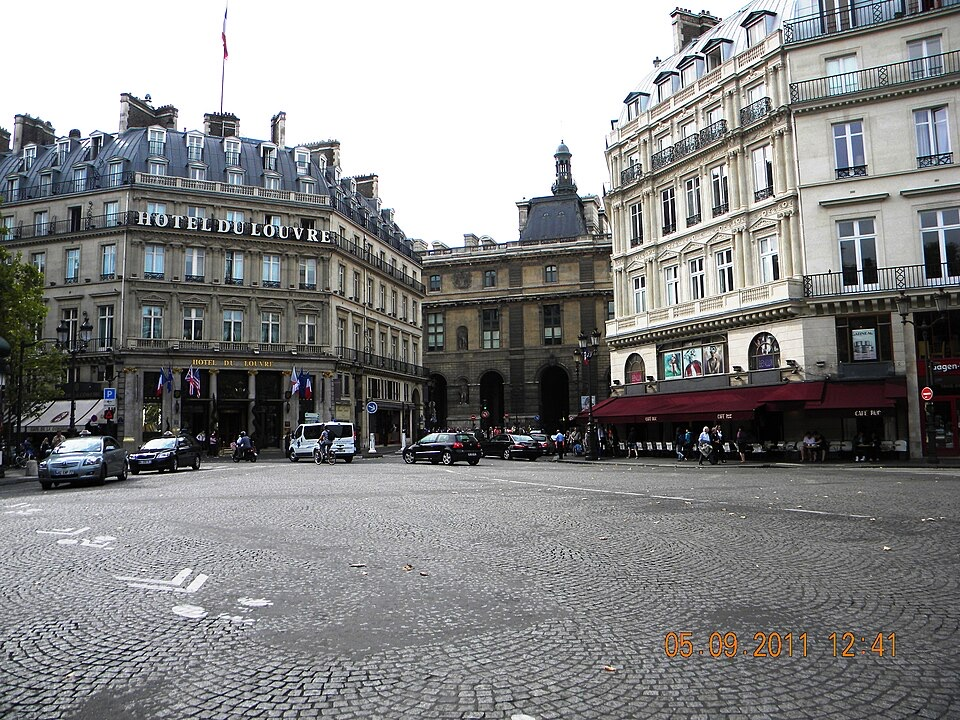 |
1 区 · 安德烈-马尔罗广场（Place André-Malraux），正对卢浮宫（Louvre）和皇家宫殿（Palais-Royal），右岸（Rive Droite）地铁 Palais Royal–Musée du Louvre 站（1/7 号线）就在门口；1 号线直达香榭丽舍大道（Champs-Élysées）和玛黑区（Le Marais，Saint-Paul 站） | 约 €800–900/晚（9/18 hyatt.com 单晚价：10/11 €901、10/12 €902、10/13 €797，不含城市税） World of Hyatt 第 8 类（9/18 官网确认）；10/11–10/13 三晚都没有积分房（车展周），10/10 那晚没查；hyatt.com 9/18 下午起打不开，待重查 |
位置最中心：出门就是卢浮宫（Louvre，D4 赶 9:00 场走过去 2 分钟）和皇家宫殿花园（Jardin du Palais-Royal），步行到塞纳河、歌剧院（Opéra）。 | 大型历史酒店、风格较传统；临街房可能有噪音（未核实）；周边游客密集。 |
| 奢侈 · Hyatt 积分 · 这几天没房 | Park Hyatt Paris-Vendôme 官网 |
- | 2 区 · 和平街（Rue de la Paix）/ 旺多姆广场（Place Vendôme），右岸（Rive Droite）和平街 5 号（rue de la Paix）；地铁 Opéra 站（3/7/8 号线）步行数分钟，RER A 线 Auber 站在附近；机场往返建议打车（步行时间为估算） | 约 €1,960–2,120/晚（9/18 hyatt.com 单晚价：10/11 €1,960、10/12 €2,118、10/13 €1,991，不含城市税） World of Hyatt 第 8 类；9/18 Points Calendar 显示 10/1–10/24 每晚都没有标准房积分房，10/25 起才有 45,000–55,000/晚 |
和东京 Park Hyatt 同品牌，平时用 Hyatt 积分兑换最划算；步行可达歌剧院（Opéra）、杜乐丽花园（Tuileries）、卢浮宫（Louvre）；有米其林星级餐厅。 | 这几天没有积分房，现金价极高；周边偏奢侈品商业区，夜晚缺少街区烟火气。 |
| 设计感 · Amex FHR | Le Grand Mazarin 官网 |
- | 4 区 · 玛黑区（Le Marais），近巴黎市政厅（Hôtel de Ville），右岸（Rive Droite）地铁 Hôtel de Ville 站（1/11 号线）步行数分钟；Châtelet–Les Halles 站（RER B 直达 CDG）步行可达（步行时间未核实） | 约 $650–$1,250+/晚（Momondo 常见约 $754、起价约 $651；另一来源均价约 $1,248） 无集团积分；Amex Fine Hotels + Resorts（FHR）成员——用 Amex Platinum 经 Amex Travel 订可享 FHR 礼遇（早餐、延迟退房、酒店消费额度等，具体以 Amex 为准） |
新派五星设计酒店，50 间客房 + 11 间套房，科克托风格壁画下的马赛克室内泳池和水疗；玛黑区（Le Marais）中心，步行到塞纳河、蓬皮杜中心（Centre Pompidou）、孚日广场（Place des Vosges）。 | 繁复的“最大主义”装潢见仁见智；不能用点数；周边夜间热闹。 |
| 左岸 · 设计 · 性价比 | Hôtel Dame des Arts 官网 |
- | 6 区 · 丹东街 4 号（rue Danton），圣日耳曼德佩（Saint-Germain-des-Prés）/ 圣米歇尔（Saint-Michel）一带，左岸（Rive Gauche）RER B/C 线 Saint-Michel Notre-Dame 站（RER B 直达 CDG，行李少时很方便）、地铁 Saint-Michel 站（4 号线）/ Odéon 站（4/10 号线）步行可达 | 约 $450–$800/晚（HotelsCombined 均价约 $711；AAA 起价约 $569；淡季更低） 无集团积分；Amex Travel 列为 The Hotel Collection（THC）（另有资料称属 Preferred Hotels & Resorts，未核实） |
110 间房的新派设计酒店（Raphaël Navot 设计），屋顶酒吧有 360° 巴黎视野；步行到巴黎圣母院（Notre-Dame）、卢浮宫（Louvre）、圣日耳曼德佩（Saint-Germain-des-Prés）和卢森堡公园（Jardin du Luxembourg）；价格是 7 家里最友好的之一。 | 房间偏小（点评反映）；圣米歇尔一带游客多、较喧闹；早餐另收费。 |
| 备选 · Hyatt · 待重查 | Hyatt Paris Madeleine 官网 |
- | 8 区 · 马勒泽布大道（Boulevard Malesherbes），近玛德莲教堂（La Madeleine），右岸（Rive Droite）地铁 Madeleine 站（8/12/14 号线）/ Saint-Augustin 站（9 号线）步行可达（步行时间未核实）；14 号线直达奥利机场（Orly） | 约 €650–780/晚（9/18 hyatt.com 单晚价：10/11 €784、10/12 €649、10/13 €648，另付城市税 €11.70/人/晚） World of Hyatt 第 7 类；搜索页显示 30,000–35,000 积分/晚，但 Points Calendar 里 10/11–10/13 都没有积分房；待重查 |
小型精品规模，服务和清洁口碑好；Madeleine 站有地铁 14 号线，可直达 Châtelet 站和奥利机场（ORY）；可用 Hyatt 积分。 | 8 区偏商务，晚间街区氛围一般；去左岸（Rive Gauche）、玛黑区（Le Marais）需乘地铁；现金价不低。 |
| 浪漫 · 只能现金 | Le Pavillon de la Reine & Spa 官网 |
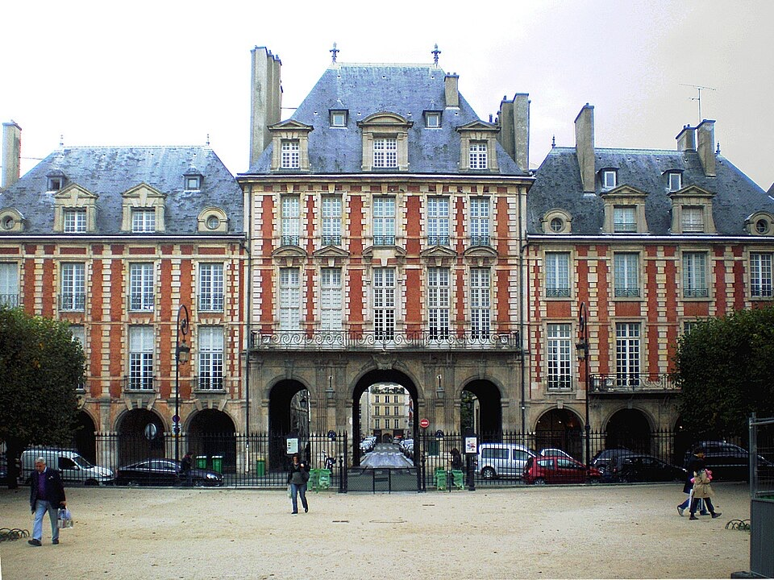 |
3 区 · 孚日广场（Place des Vosges），玛黑区（Le Marais），右岸（Rive Droite）地铁 Chemin Vert 站（8 号线）、Saint-Paul 站（1 号线）、Bastille 站（1/5/8 号线）步行可达（步行时间未核实） | 约 $750–$1,400/晚（Momondo 均价约 $1,372；有报价 €729 起） 是小型奢华酒店联盟（SLH）成员，但 World of Hyatt 自 2024-05-15 起不再在 SLH 酒店赚/兑积分、不给会员礼遇 → 目前不能用 Hyatt 积分订。Amex Travel 列为 The Hotel Collection（THC）。 |
坐落在巴黎最美的孚日广场（Place des Vosges）上的 17 世纪宅邸，花园庭院安静浪漫，有水疗；出门就是玛黑区（Le Marais）小店、咖啡馆、毕加索博物馆（Musée Picasso）。 | 不能用 Hyatt 积分；现金价高；到卢浮宫（Louvre）、奥赛博物馆（Musée d'Orsay）、左岸（Rive Gauche）需乘地铁。 |
| 左岸 · 只能现金 | Relais Christine 官网 |
- | 6 区 · 圣日耳曼德佩（Saint-Germain-des-Prés），左岸（Rive Gauche）地铁 Odéon 站（4/10 号线）/ Saint-Michel 站（4 号线）、RER B/C 线 Saint-Michel Notre-Dame 站（RER B 直达 CDG）步行可达 | 约 $650–$1,200/晚（Kayak：起价约 $663，均价约 $738–$877；7 月约 $1,199） Relais & Châteaux 和小型奢华酒店联盟（SLH）成员；不能用 Hyatt 积分（Hyatt 已停止在 SLH 赚/兑积分） |
17 世纪宅邸（原修道院建筑）改建的家族精品酒店，有庭院和私家花园，闹中取静；有水疗、免费自行车；步行到巴黎圣母院（Notre-Dame）、圣日耳曼德佩（Saint-Germain-des-Prés）、卢浮宫（Louvre）。 | 价格偏高且无点数玩法；房型差异大，便宜房型面积有限（未核实）。 |
巴黎的 Marriott 用积分都不划算：每分超过 0.75 美分的只有 Renaissance Paris Arc de Triomphe（290,000 分，对比协议价 €2,057）、Paris Marriott Champs-Élysées（390,000 分，对比 €2,728）和 Prince de Galles（502,500 分，对比 €3,701），但它们每晚都要 $750–1,400，是上面几家的 2–4 倍，不值得为了用积分去住。卢浮宫一带的 Marriott 只有 Le Roch Hotel & Spa（只能付现金）；Renaissance Paris Vendôme 这几天订满。Le Pavillon de la Reine、Relais Christine 虽然是小型奢华酒店联盟（SLH）成员，但 World of Hyatt 2024-05 起已不能在 SLH 酒店用积分；这两家和 Le Grand Mazarin、Hôtel Dame des Arts 的价格是之前查的参考价，不是这次的日期。
| 酒店 | 位置 / 交通 | 订单 | 注意 |
|---|---|---|---|
| 已订 Hotel 66 Nice 官网 四星；Google 4.4（515 条）、Booking 8.7（1,762 条） |
比利时街 6 号（6 rue de Belgique），尼斯火车站（Nice-Ville）旁走 3 分钟到尼斯火车站，TGV 下车和每天坐 TER 出去玩都从这里走；轻轨 1 号线 Gare Thiers 站约 4 分钟；走路约 20 分钟到老城（Vieux Nice）和海边；10/18 凌晨打车去机场约 20 分钟，一口价 €32 | 10/13 入住、10/18 退房，5 晚，1 间 Double Room（18 m²），2 位大人，不含早餐，不可退。9/19 在 Citi Travel 订，用了 Citi Prestige 的第四晚免费，房费和税费全部用 ThankYou 积分付清；入住时另付约 $40（城市税，每人每晚约 $4）。确认邮件和订单号见邮箱。 | 点评里的优点：员工和前台（24 小时）口碑好、干净、床舒服、隔音好，大堂全天免费咖啡、茶和饮用水，可以寄存行李；早餐 7:00–10:00，另付费。缺点：房间偏小、没有冰箱；火车站一带晚上不太好，太晚回来建议打车；有点评说入住时收 €100 押金（未核实）。 |
口径：现金价是 marriott.com 上含全部税费的整段住宿总价；用积分的「真实成本」按每个 Marriott 积分 0.75 美分折算，再加上积分房照样要付的城市税。只看「1 分值多少」会偏向贵酒店，所以这里比的是每晚真实花多少。BYG / FSF / GGL 分别是 ByteDance、Meta、Google 的协议价，这次查到的协议价都能免费取消，但入住时可能要出示对应公司的员工证明，只订有资格用的那个。
| 方案 | 巴黎 3 晚（10/10–10/13） | 价格（含全部税费） |
|---|---|---|
| 推荐 · 可免费取消 | Renaissance Paris République，BYG 协议价；没有 BYG 就换 Courtyard Paris Gare de Lyon，GGL 协议价 | €838 / €866 |
| 最便宜 | citizenM Paris Gare de Lyon | €702 |
巴黎用 Marriott 积分都不划算，付现金加协议价；协议价都能免费取消，可以先订下来。
口径：地点文字本身就是 Google Maps 链接；餐厅以第 5 节的餐厅表为准。营业时间、预约和排队情况出发前再复核一次。
交通标签：步行地铁RERTGV / TER 火车轻轨巴士出租车飞机游船自驾行李
地点标签：必去可选路过扫一眼快进快出可认真逛时间黑洞预约/排队风险（放在“地点安排”列；备注列只写解释）
地图编号：表格里地点前的数字 = 当天地图上的编号，颜色区分类型。地图直接读表格里的地点，改了表格地图会跟着变；手机上地图用双指缩放。景点吃店公园 / 自然交通住
下午坐已经订好的美联航 UA990 从 SFO 直飞巴黎，10/10 周六上午落地。离出发只剩三周，酒店、TGV 和两顿生日晚餐（巴黎前夜 + 尼斯生日当天）要尽快订，时间点见第 7 节清单。
| 模块 | 地点安排 | 特色图片 | 备注 |
|---|---|---|---|
| 现在就订 | 酒店 / TGV / 两顿生日晚餐 越早越好 |
- | 往返机票已订（去程 UA990；回程 LH1069 + UA59）；巴黎 3 晚、尼斯 5 晚酒店；10/13 巴黎 → 尼斯的 TGV；10/12 巴黎生日前夜晚餐（怎么选）和 10/13 尼斯生日晚餐（怎么选）；卢浮宫（Louvre）10/11 9:00 已订；想登圣母院塔楼（Tours de Notre-Dame）就在塔楼官网买 10/12 一早的票。 |
| 出发前 1–2 周 |
定时票 / 餐厅订位 需要提前订 |
- | 路易威登基金会（Fondation Louis Vuitton）要订 10/12 15:00 左右的定时票；塞纳河日落游船如果选 Vedettes du Pont Neuf，日落场次常卖完，也要订定时票；尼斯的 La Merenda、Bistrot d'Antoine 按第 5 节写的时间订。 |
| 出发前 1 天 |
手机 / 证件 / App | - | 检查护照有效期，开好 eSIM 或国际漫游；装好 Citymapper、Bonjour RATP、SNCF Connect，下载 Google Maps 离线地图。入境规则（EES）见第 7 节。10/7 起每天看一眼圣母院（Notre-Dame）官网 / App，抢 10/10 下午的免费进场时段（到了巴黎当天也能继续抢）。 |
| 航班 | 旧金山国际机场 SFO 飞机 |
- | 已订：美联航 UA990，10/9 SFO 14:40 → CDG 1 号航站楼 10/10 10:25，飞行约 10 小时 45 分，2 人经济舱里程票。上机就把手表调成巴黎时间：10/25 之前巴黎比加州快 9 小时。 |
上午落地，下午只走一条步行线：玛黑区（Le Marais）→ 圣路易岛（Île Saint-Louis）→ 圣母院（Notre-Dame）→ 新桥看日落。周六玛黑区的店都开，午餐在红孩儿市场（Marché des Enfants Rouges）。圣母院 2024 年底修复重开，是上次来巴黎没见过的新样子；大教堂免费，不用买票。
| 模块 | 地点安排 | 特色图片 | 备注 |
|---|---|---|---|
| 上午 | 巴黎戴高乐机场 CDG 出租车RER行李 |
- | UA990 10:25 落地，入境加取行李预留 1–1.5 小时（第一次入境要做 EES 指纹和拍照）。两个人带着行李直接打车最省事：出租车一口价按车算，右岸（Rive Droite）€56、左岸（Rive Gauche）€65；轻装可以坐 RER B 线到 Châtelet–Les Halles 站，机场票 €14/人。RoissyBus 机场大巴 2026-03 起已停运。 |
| 酒店寄存行李（住宿见第 3 节） 行李 |
- | 一般 15:00 以后才能入住，先寄存行李、简单洗漱就出门，白天别补觉。 | |
| 午餐 | 红孩儿市场 Marché des Enfants Rouges：Chez Alain Miam Miam（现做夹馅三明治）备选：Breizh Café（荞麦咸可丽饼，官网可订）快进快出周六人多步行 | 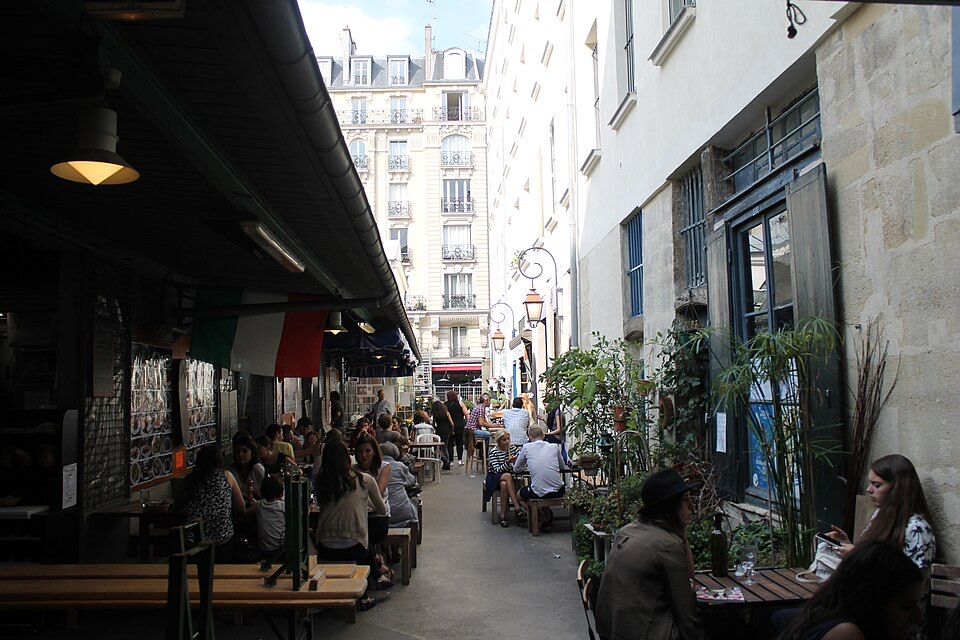 |
巴黎最老的有顶市场，里面都是熟食摊，周二至周日开、周一休。Chez Alain Miam Miam 周一、周二休，周六照常，现做的夹馅三明治要排队。不想排队就去 Breizh Café，官网可订、每天营业。 |
| 下午 玛黑区 Le Marais |
Dover Street Market ParisFleux'（家居设计） / L'Éclaireur Sévigné / Merci可选可认真逛步行 | - | 2024 年才开的 DSM 巴黎店，还有 Fleux'、L'Éclaireur、Merci，周六都正常营业（具体时间出发前看官网）。周六下午玛黑区人最多，挑 2–3 家就好，别在落地日把体力用完。 |
| 叙利府邸花园 Hôtel de Sully（可穿行到孚日广场）孚日广场 Place des Vosges必去步行 | 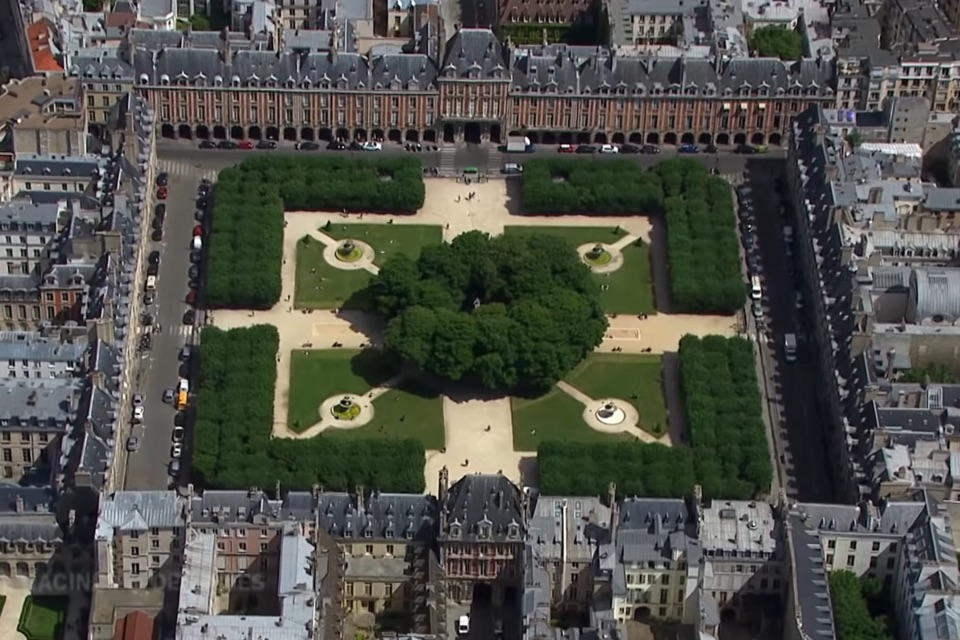 |
叙利府邸（Hôtel de Sully）位于圣安托万街（rue Saint-Antoine）62 号，庭院和花园每天 9:00–19:00 开，从花园尽头的小门可以直接走进孚日广场（Place des Vosges）。 | |
| 巴黎毕加索博物馆 Musée Picasso Paris或：卡纳瓦雷博物馆 Musée Carnavalet（2021 年翻修重开，常设展免费） / 或：皮诺收藏馆 Bourse de Commerce可选可认真逛 | 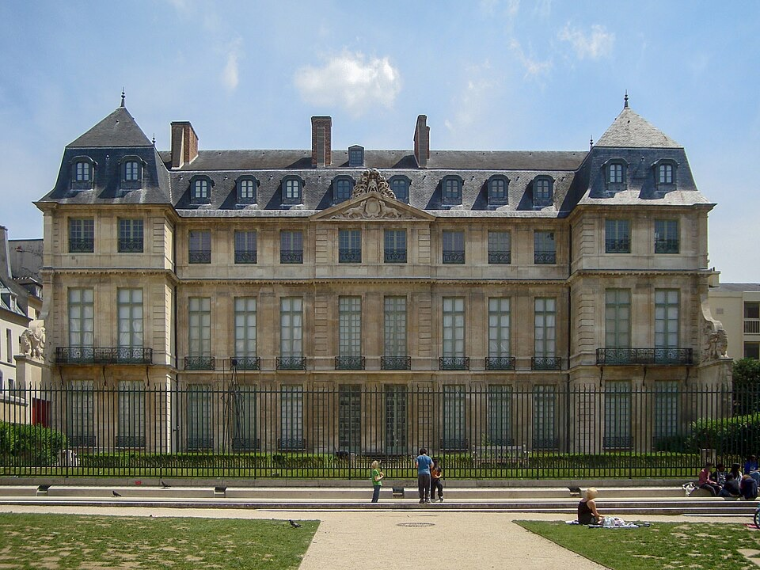 |
体力够再三选一：毕加索博物馆周六 9:30–18:00、€16；卡纳瓦雷翻修后重开、常设展免费，这两家周一都闭馆，巴黎这三天只有今天和明天能去。皮诺收藏馆（Bourse de Commerce）是安藤忠雄改造的圆形交易所，周六 11:00–19:00、€15（建议网上买票），10/7 起是纪念摄影诞生 200 周年的大展（约 700 件作品）；它在玛黑区（Le Marais）西边，从蔷薇街（rue des Rosiers）走过去约 15 分钟，看完再往南走回圣路易岛（Île Saint-Louis）。 | |
| 傍晚 圣路易岛 Île Saint-Louis |
圣路易岛 Île Saint-LouisBerthillon 冰淇淋路过扫一眼步行 | 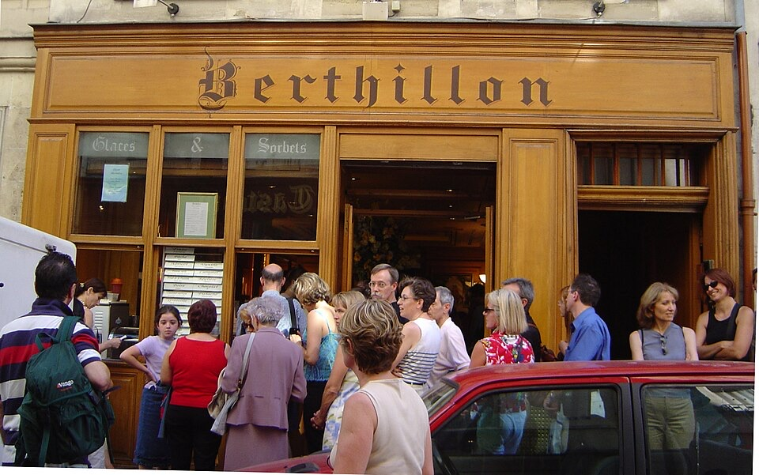 |
Berthillon 周三至周日 10:00–20:00，周一、周二固定休息，这趟只有今天和明天能吃。 |
| 巴黎圣母院 Notre-Dame de Paris 必去可认真逛免费时段临近才放 |
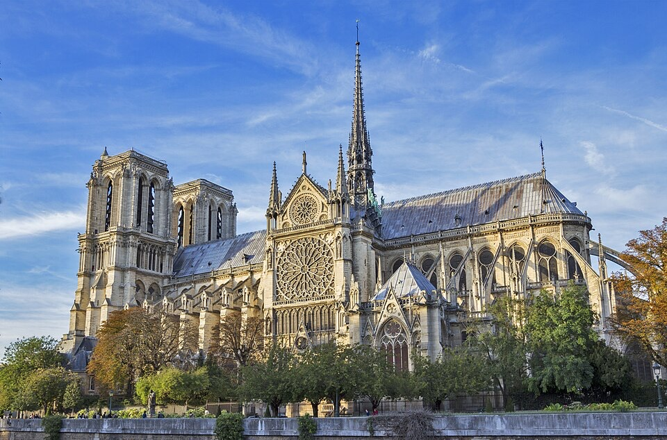 |
2024 年 12 月修复后重开，大教堂免费、不用买票，石材清洗后内部很亮，和以前的印象完全不同。周末 8:15–19:30 开（19:00 停止入场）。官网 / App 可以免费预约进场时段，但名额在参观前几小时到 2–3 天才陆续放出（各来源说法不一），现在订不了：10/7 起每天看一眼，抢 10/10 16:30–17:30 的时段；抢不到就排现场队，队伍看着长但走得快，周末下午人最多。登塔（€16）只能提前在网上买，10 月 9:00–17:30（16:30 停止入场），落地日赶不上，想登就放 D4 周一一早。 | |
| Shakespeare and Company 快进快出步行 |
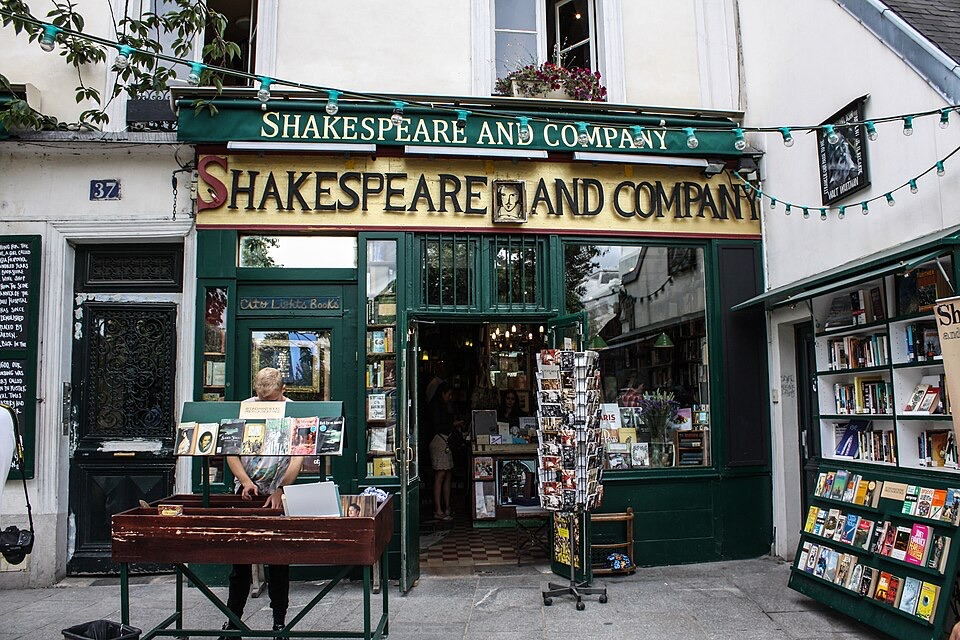 |
就在圣母院（Notre-Dame）对岸，进去逛 20–30 分钟。官网营业时间没核实到，出发前再看一眼。 | |
| 日落 | 新桥 Pont Neuf绿林好汉广场 Square du Vert-Galant（西岱岛 Île de la Cité 最西端）必去步行 | 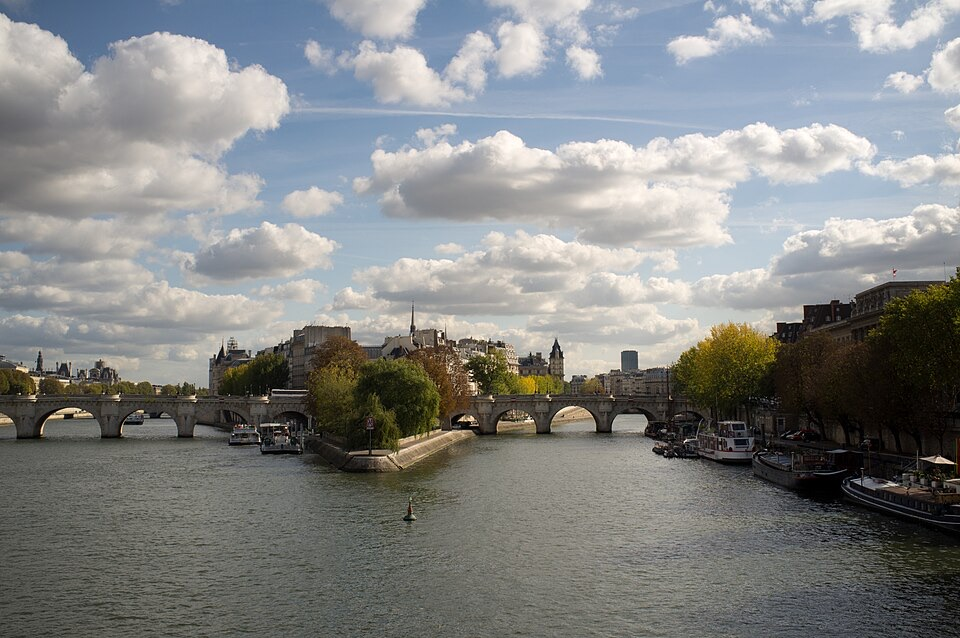 |
从新桥（Pont Neuf）走下台阶到西岱岛（Île de la Cité）最西端的绿林好汉广场（Square du Vert-Galant），坐在河边看日落（10/10 日落约 19:11）。 |
| 晚餐 | Chez Janou（普罗旺斯风味小馆）备选：Café des Musées（红酒炖牛肉，官网可订）电话订位地铁 | - | Chez Janou 每天营业，只接受电话订位（01 42 72 28 41），招牌是一大碗端上桌、自己舀的巧克力慕斯。不想打电话就去 Café des Musées（官网可订，每天营业）。落地日早点吃、早点睡。 |
卢浮宫（Louvre）已订今天 9:00 开馆第一场，看完穿过皇家宫殿花园（Jardin du Palais-Royal）去吃午饭；下午去罗丹美术馆（Musée Rodin，周一闭馆，所以也放今天）的花园，日落坐塞纳河游船。今天上午有 20 km de Paris 路跑：耶拿桥（Pont d'Iéna）起跑、铁塔（Tour Eiffel）下终点，途经特罗卡德罗（Trocadéro）、凯旋门（Arc de Triomphe）、布洛涅森林（Bois de Boulogne），上午往西边走尽量坐地铁、别打车；卢浮宫在市中心，不受影响。
| 模块 | 地点安排 | 特色图片 | 备注 |
|---|---|---|---|
| 上午 | 卢浮宫 Musée du Louvre 必去可认真逛已订 9:00步行 |
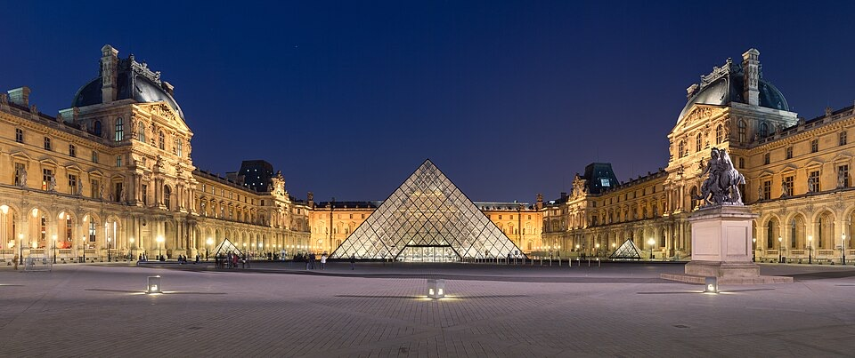 |
8:45 到玻璃金字塔（Pyramide）入口，走预约时段票的队伍；金字塔人太多时，持票也可以从卡鲁塞尔（Carrousel，里沃利街 99 号 / 99 rue de Rivoli 的地下商场）入口进。已订 10/11 周日 9:00，2 张（非欧盟 €32/人，不能改期、不能退）；票上印了名字，带上护照，电子票存在手机里。周日 9:00–18:00（17:00 停止入场，17:30 开始清场）。留 3–3.5 小时：先去德农馆（Denon）看《蒙娜丽莎》，赶在人多之前，再看《萨莫色雷斯的胜利女神》和法国、意大利大画；黎塞留馆（Richelieu）的拿破仑三世套房很华丽。阿波罗长廊（Galerie d'Apollon）2026/7/22 重开，但王冠珠宝不再展出；10/7 起的苏巴朗（Zurbarán）大展要另订时段票，我们的票只含常设展。这张票第二天还能免费进德拉克洛瓦美术馆（Musée Eugène-Delacroix），排在 D4。2025 年底到 2026 年初卢浮宫因员工罢工闭馆过几次，前一天看一下官网通知。 |
| 中午前 | 皇家宫殿花园 Jardin du Palais-Royal / 布伦柱 Colonnes de Buren薇薇安拱廊 Galerie Vivienne / Café Kitsuné Palais-Royal（歇脚喝咖啡）路过扫一眼步行 | 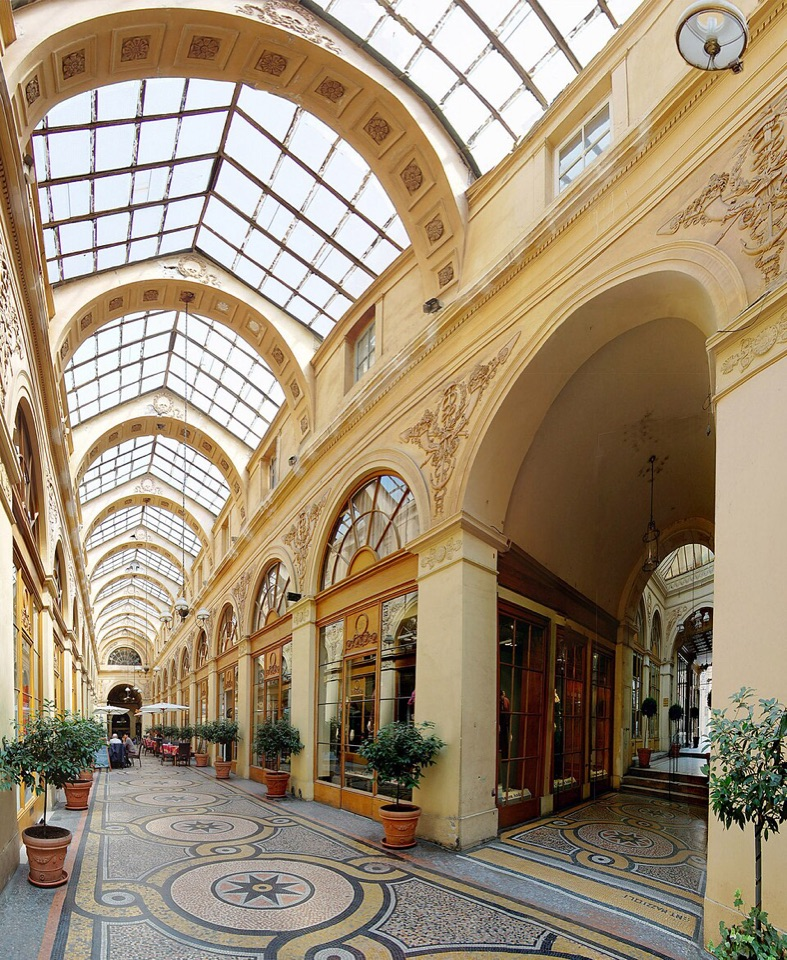 |
从卢浮宫（Louvre）北边出来，过里沃利街（rue de Rivoli）就是皇家宫殿（Palais-Royal）：穿过花园、拍黑白条纹的布伦柱（Colonnes de Buren），再从北门走到薇薇安拱廊（Galerie Vivienne，每天 8:30–20:00，保存最好的 19 世纪拱廊街），20–30 分钟就够；周日拱廊里不少小店不开，花园和拱廊照常开放。想喝杯咖啡就在花园拱廊里的 Café Kitsuné 歇一下（每天 8:30 开）。 |
| 午餐 | Higuma（日式拉面 / 炒饭）想吃法餐：Le Grand Colbert（午市套餐 €30 起）快进快出步行 | 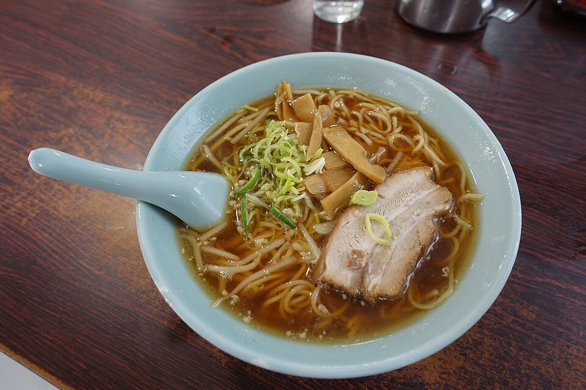 |
卢浮宫（Louvre）北边的圣安娜街（rue Sainte-Anne）是巴黎的日本街，从薇薇安拱廊（Galerie Vivienne）走过去 5 分钟。逛了一上午博物馆、时差还没完全倒过来，吃碗热汤面最舒服；周日也开（11:30–22:00），不接受预订、翻台快。 |
| 下午 | 罗丹美术馆 Musée Rodin 必去可认真逛 |
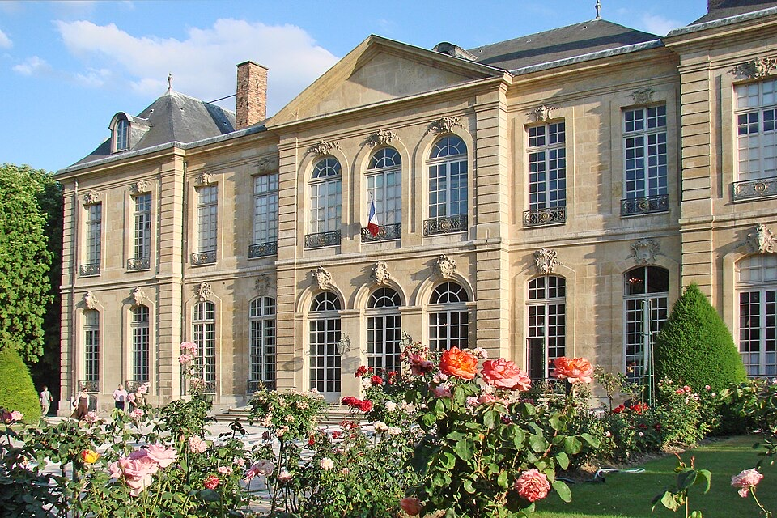 |
周日 10:00–18:30（最后入场 17:45，周一闭馆，所以放今天），€14，花园含在门票里，不用预约。花园里有《思想者》，馆内有《吻》，秋天的花园很适合拍照。从 Palais Royal–Musée du Louvre 站坐地铁 1 号线到 Champs-Élysées–Clemenceau，换 13 号线到 Varenne 站，约 20 分钟；打车约 15 分钟。 |
| 傍晚 | 回酒店歇一下，或者沿塞纳河散步到码头 步行 |
- | 看完罗丹离游船还有一两个小时：累了就回酒店歇一下；不累就从荣军院（Invalides）经亚历山大三世桥（Pont Alexandre III）沿塞纳河走到阿尔玛桥（Pont de l'Alma）码头，约 25 分钟。 |
| 日落 | 塞纳河游船 Bateaux-Mouches（阿尔玛桥 Pont de l'Alma 码头）或：Vedettes du Pont Neuf（新桥码头）必去游船 | 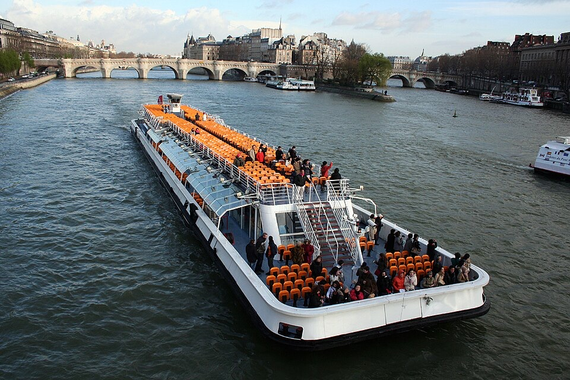 |
10/11 日落约 19:09，坐 18:30 或 19:00 的船，一圈约 1 小时。Bateaux-Mouches 成人 €20（官网 €17），当天任意班次都能用，不用抢时段；码头在阿尔玛桥（Pont de l'Alma），下船坐地铁 9 号线（Alma-Marceau 站）直达晚餐的 Bouillon Julien。想从西岱岛（Île de la Cité）上船就选 Vedettes du Pont Neuf：定时电子票 €15，日落和周末班次常卖完（今天是周日），要提前订；另有香槟游船（线上 €29，约 1 小时 15 分钟，开船时间未核实）。 |
| 晚餐 | Bouillon Julien（新艺术风格老牌平价食堂）备选：Clown Bar（热门新派小酒馆，电话订）官网订位地铁 | 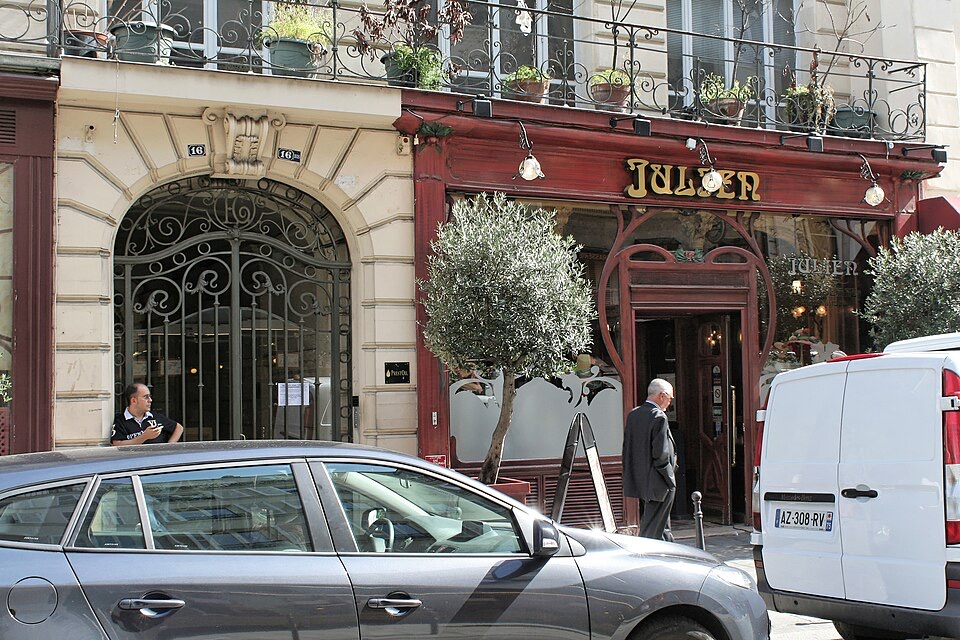 |
1900 年代新艺术风格装潢的老餐厅，价格却是平价食堂级别（三道菜约 €18–27）；每天营业，周日晚上也开，官网可订，也欢迎直接来。从阿尔玛桥（Pont de l'Alma）坐地铁 9 号线到 Strasbourg–Saint-Denis 站，不用换乘。明天晚上是生日前夜大餐，今晚吃得轻松一点。 |
上午在圣日耳曼（Saint-Germain）逛街、挑生日礼物，想登圣母院塔楼（Tours de Notre-Dame）就放今天一早；下午去盖里设计的路易威登基金会（Fondation Louis Vuitton，10/9 刚重开）。晚上是巴黎的生日前夜大餐，看着铁塔（Tour Eiffel）吃饭、看整点闪灯；生日当天（10/13）在尼斯过。
| 模块 | 地点安排 | 特色图片 | 备注 |
|---|---|---|---|
| 一早 （可选） |
圣母院塔楼 Tours de Notre-Dame 可选必须提前网上买步行 |
- | 约 1 小时。订 9:00–9:30 的时段，€16，只能提前在官网 tours-notre-dame-de-paris.fr 买，现场不卖。424 级台阶、没有电梯，最窄处 45 cm，塔顶限停 5 分钟；天气太差会临时关闭（自动退款）。登完过桥到左岸，沿圣日耳曼大道（boulevard Saint-Germain）往西走，路过 Diptyque 创始店，到波拿巴街（rue Bonaparte）约 20 分钟。 |
| 上午 挑礼物 |
Officine Universelle Buly（可以免费写名字）Pierre Hermé：买单个 Ispahan / 马卡龙 / 德拉克洛瓦美术馆 Musée Eugène-Delacroix（凭卢浮宫门票免费） / Diptyque 创始店必去快进快出步行 | 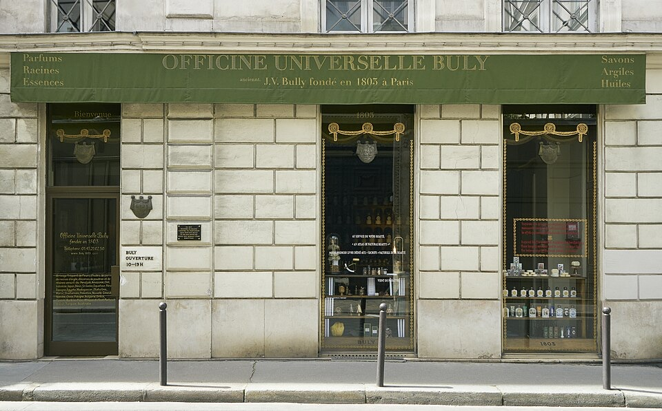 |
Buly（波拿巴街 6 号 / rue Bonaparte，每天 11:00–19:00）：很多香水、蜡烛、身体油的标签可以免费用法式书法手写名字，润唇膏压首字母、梳子和香皂刻字也免费，烫金礼品包装 €10，很适合当生日礼物（生日就在明天）；当场要等多久没查到，建议先去下单再逛别的店，乐蓬马歇（Le Bon Marché）2 楼也有 Buly 柜台。同一条街的 Pierre Hermé（72 号，10:00–20:00）可以现买单个 Ispahan（玫瑰荔枝覆盆子）和马卡龙，晚上回酒店先小庆祝一下。Buly 11:00 才开门，可以先去隔壁弗斯滕伯格街（rue de Furstenberg）的德拉克洛瓦美术馆（Musée Eugène-Delacroix，9:30–17:30，周一开）：昨天的卢浮宫门票今天还能免费进一次，画家故居和小花园 30–45 分钟就能看完。生日在 10/13 的尼斯，整只蛋糕不好带上火车，生日当天请尼斯的餐厅准备插蜡烛的甜点。 |
| 乐蓬马歇 Le Bon Marché + La Grande Épicerie 可认真逛时间黑洞步行 |
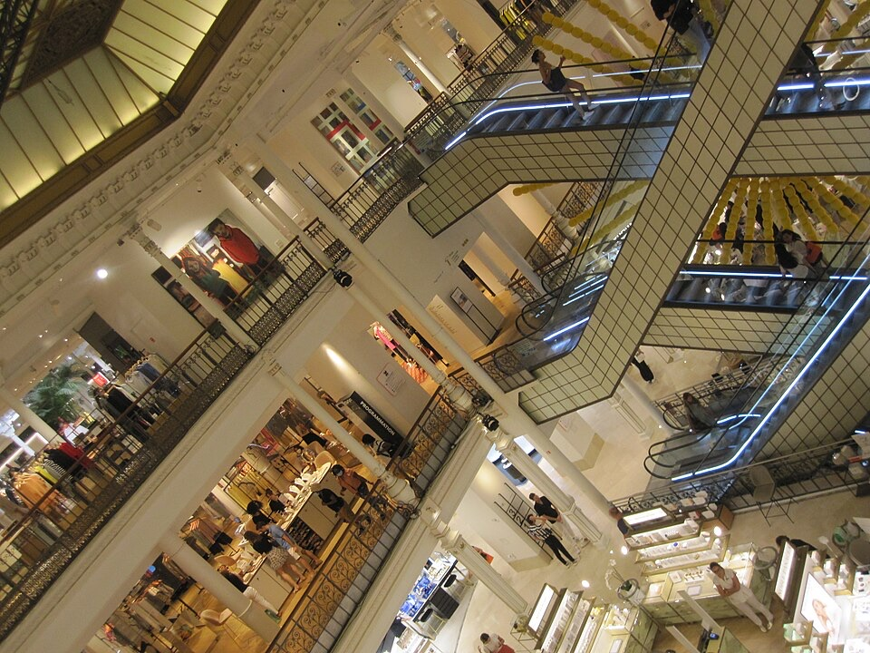 |
巴黎最有设计感的百货，周一 10:00–20:00，适合慢慢挑生日礼物；隔壁的 La Grande Épicerie 可以买香槟和小点心带回酒店。 | |
| 午餐 | Coutume（精品咖啡 + 早午餐）备选：La Grande Épicerie 熟食柜台快进快出步行 | - | 在乐蓬马歇（Le Bon Marché）旁边的巴比伦街（rue de Babylone）47 号，走 5 分钟；周一 8:30–17:30。坐不下就去隔壁 La Grande Épicerie 买熟食。吃完从 Sèvres–Babylone 站坐地铁去路易威登基金会。 |
| 下午 | 路易威登基金会 Fondation Louis Vuitton 必去可认真逛订定时票 |
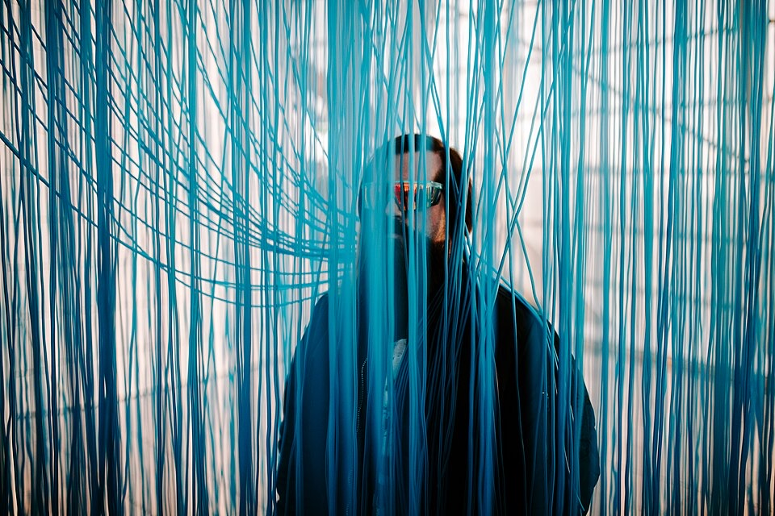 |
盖里设计的「玻璃帆船」，10/9 重开，开幕展是收藏家兼创作者 Gustave Fayet 的主题展（到 2027/3/8），有梵高、高更、雷东、德加、塞尚、马蒂斯的作品。全价 €18，要在官网订定时票，今天订 15:00 左右的时段（票面时间 30 分钟内入场）；馆内不能带水，背包和雨伞要寄存。10 月周一的开放时间各来源不一（12:00–19:00 或 11:00–20:00），买票时以能选的时段为准；展厅加屋顶露台留 2–2.5 小时。 |
| 官方电动接驳车 → 凯旋门 Arc de Triomphe 巴士 |
- | 去程从 Sèvres–Babylone 站坐地铁 12 号线到 Concorde，换 1 号线到 Les Sablons 站（约 30 分钟），走约 950 米，打车约 20 分钟；或者从 Charles de Gaulle–Étoile 站 2 号出口出来，在弗里德兰大街（avenue de Friedland）44 号坐官方接驳车，约 20 分钟一班，凭展览门票往返 €2。回程坐接驳车，下车就是凯旋门（Arc de Triomphe）；不去凯旋门就直接坐地铁 1 号线回酒店换衣服。 | |
| 日落 （可选） |
凯旋门 Arc de Triomphe 可选步行 |
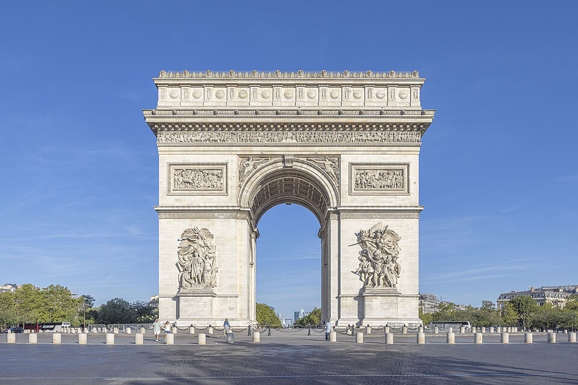 |
10 月周一 10:00–22:30（闭馆前 45 分钟停止入场），€16，不用预约；电梯在维修，要走约 284 级台阶上顶。10/12 日落 19:07，屋顶上看香榭丽舍大道（Champs-Élysées）和铁塔（Tour Eiffel）。看完打车约 10 分钟到晚餐的 Les Ombres，晚餐就订 19:45；想从容一点就跳过凯旋门，回酒店休息换衣服。 |
| 🎂 生日 前夜晚餐 |
Les Ombres（凯布朗利博物馆 Musée du quai Branly 屋顶，看铁塔 Tour Eiffel）奢侈版：Le Jules Verne / Madame Brasserie现在就订步行 | - | 玻璃屋顶正对铁塔（Tour Eiffel），每天晚餐 19:00–22:00，三道 €98 / 四道 €118，不用博物馆门票；OpenTable 订，订位时写上生日。生日当天（10/13）在尼斯，今晚是巴黎的生日前夜大餐。几家晚餐的价格、时间、蛋糕和着装要求放在下面的「生日前夜晚餐怎么选」对比表里。 |
| 夜景 | 比尔-哈克姆桥 Pont de Bir-Hakeim / 特罗卡德罗 Trocadéro（看铁塔闪灯）埃菲尔铁塔 Tour Eiffel必去步行 | 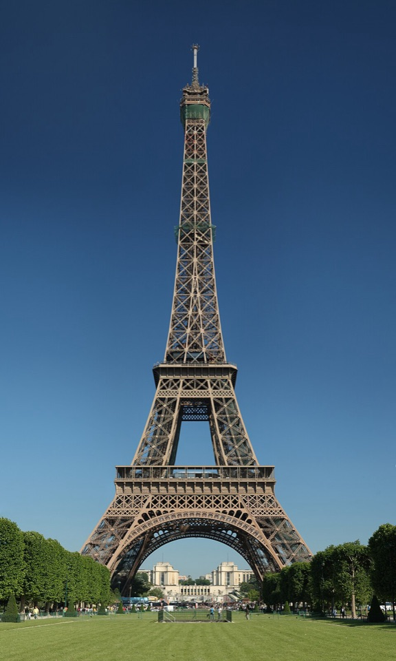 |
天黑后铁塔（Tour Eiffel）每个整点闪灯 5 分钟，10/12 第一场约 20:00（天完全黑约 19:40）。吃完饭走 15 分钟到比尔-哈克姆桥（Pont de Bir-Hakeim）或特罗卡德罗（Trocadéro），赶 21:00 或 22:00 那场拍一张生日前夜合照，明天一早还要赶火车，别太晚。 |
默认推荐 Les Ombres：看铁塔（Tour Eiffel）、价格适中、订位最容易。想要仪式感就选 Le Jules Verne 或 Madame Brasserie（都在铁塔里）；想把游船和晚餐合在一起就选 Ducasse sur Seine。生日当天（10/13）在尼斯，尼斯的生日晚餐见 D5 后面的对比表。
| 选项 | 在哪 / 看点 | 价格（不含酒） | 10/12 周一的时间 | 怎么订 | 生日 / 着装 / 取消 |
|---|---|---|---|---|---|
| Les Ombres 建议 · 看铁塔 |
凯布朗利博物馆（Musée du quai Branly）5 楼屋顶，玻璃屋顶正对铁塔（Tour Eiffel）；不用博物馆门票 | 三道 €98 / 四道 €118（夏季菜单，10 月可能换）；龙虾、牛里脊 +€12 | 每天 19:00–22:00 | OpenTable 或电话 +33 1 47 53 68 00 | 订位时在特别要求里写生日；能否订蛋糕官网没写（第三方说可以点巧克力或热带水果蛋糕）；着装要求整洁休闲装（未核实） |
| Le Jules Verne 奢侈 · 二星 |
铁塔（Tour Eiffel）2 楼，Frédéric Anton 主理，专用电梯上楼 | 只有品鉴菜单：5 道 €305 / 7 道 €345 | 晚餐 19:00–21:00 | 官网订位；提前 90 天放位，日落时段很快满 | 生日蛋糕（甜点插蜡烛）至少提前 72 小时说；男士必须穿西装外套，不能穿短裤运动服；订位预付，48 小时内取消不退 |
| Madame Brasserie 铁塔 1 楼 |
铁塔（Tour Eiffel）1 楼，离地 57 米，Thierry Marx 主理；凭订位从 1 号入口进 | 按座位区：Gustave 区 €109.80（含酒 €129.80）→ 落地窗区 €261.80 | 两轮入座：18:30（赶上日落）/ 21:00 | 官网订位 或电话 | 可加订 célébration 庆祝套餐（一杯香槟 + 打印合照），至少提前 48 小时；不能自带蛋糕和酒；得体城市装，不穿运动服、人字拖 |
| Ducasse sur Seine 游船晚餐 |
特罗卡德罗（Trocadéro）下方的德比利码头（Port Debilly）上船，Ducasse 的电动餐船，边吃边游塞纳河、看铁塔（Tour Eiffel） | 4 道 €175（含配酒 €285）/ 5 道 €215（含配酒 €325） | 星夜晚场（Nuit étoilée）20:30 开船，约 2 小时 | 官网订位，要预付 | 10/12 是否开航要在订位页选日期确认；可以同时替代「日落游船 + 晚餐」；72 小时内取消全额收费；男士不穿短裤、露趾鞋 |
| Septime 美食派 |
11 区的热门新派小酒馆，氛围轻松，不是看景型 | 只有主厨品鉴套餐：晚餐 7 道 €135 | 周一至周五晚餐 19:30 起（周末休） | 9/21 10:00 巴黎时间（湾区 9/21 凌晨 1:00）放 10/12 的位，官网 Zenchef | 订位时备注生日 |
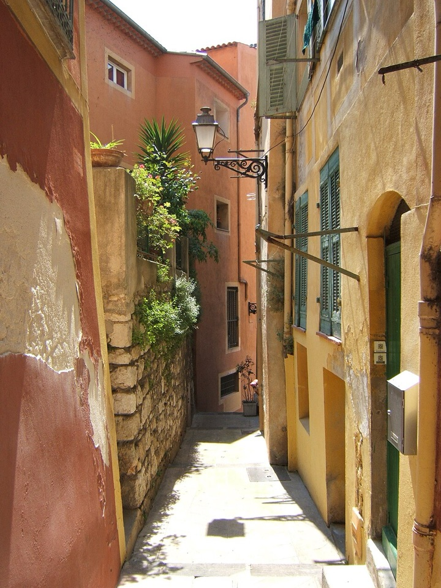
Old Town, Local Food & Seaside Sunset
半天–一天轻松必去
当天重点：享受尼斯本身，不只是把它当住宿基地。老城（Vieux Nice）巷子、萨莱雅市集（Cours Saleya）、当地小吃，下午海边散步或喝咖啡，傍晚去城堡山（Colline du Château）或海边看景。
📅 这几天要注意：萨莱雅花市周二至周日开（周一换成古董市），周日也开（6:30–13:30），但回程那天一早就走，想逛放在前几天；城堡山公园 10 月开到 20:00，日落 10/13 约 18:51 → 10/17 18:44；鹰嘴豆煎饼老店 Chez Pipo 周一、周二休。
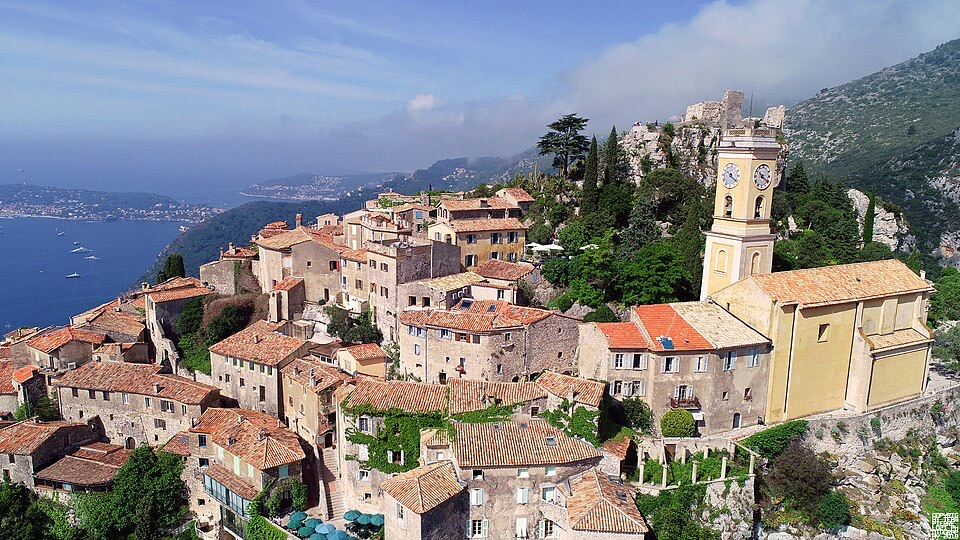
Hilltop Village & Monaco Highlights
完整一天中等偏满必去
当天重点：山顶古村与海滨都市的反差。上午逛埃兹村（Èze）和异域花园，下午去摩纳哥老城（Monaco-Ville），再按兴趣去蒙特卡洛（Monte-Carlo）。
📅 这几天要注意：摩纳哥亲王宫（Palais Princier）国事厅 10/15 是今年最后一天开放，想进宫就只能排 10/15 周四；只看老城和外观哪天都行（卫兵换岗每天 11:55）。蒙特卡洛赌场内部参观只在 10:00–13:00。上埃兹村的公交每天只有 6–8 班，前一天查好时刻。
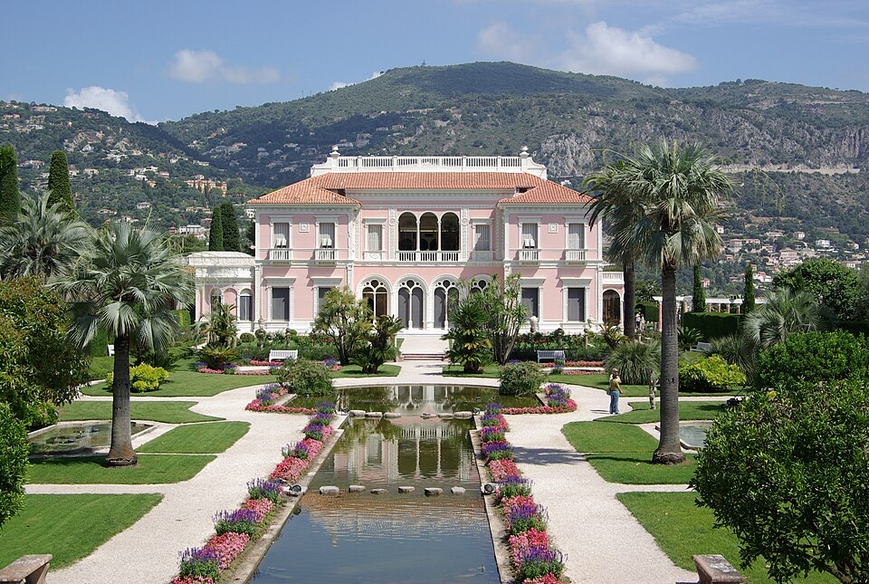
Colourful Harbour, Villa & Coastal Walk
一天轻松至中等可选 · 最优先
当天重点：海湾、漂亮花园与一顿舒服的午餐。自由城老港闲逛和午餐，下午看罗斯柴尔德别墅花园（Villa Ephrussi de Rothschild），有余力再走一小段费拉角海岸。
📅 这几天要注意：从尼斯坐 TER 只要 6–7 分钟；罗斯柴尔德别墅到 11/1 前每天 10:00–18:00，€18，建议网上买票；老港海鲜 La Mère Germaine 周三至周日营业，露台位提前约一周订。
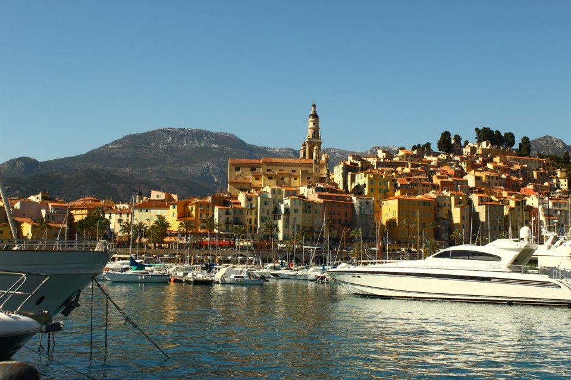
Colourful Old Town & Slow Seaside Day
半天–一天轻松必去
当天重点：把时间完整留给一个海边小镇。老城、教堂周边、港口和海边，穿插咖啡、午餐与小店，不强制进博物馆。
📅 这几天要注意：从尼斯坐 TER 约 35 分钟，是沿海最东边的柠檬小镇；让·科克托博物馆（Musée Jean Cocteau）周二闭（10/13 以外都开）。
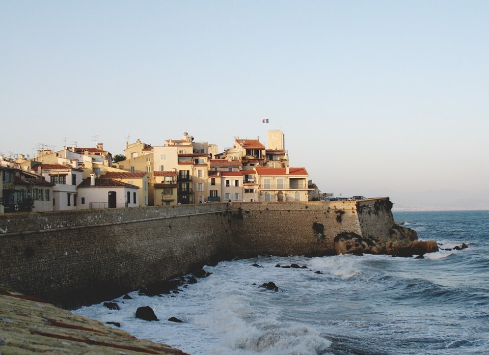
Market, Old Town & Picasso
半天–一天轻松至中等必去
当天重点：有生活感的海边老城，配一点艺术。普罗旺斯市场（Marché Provençal）、老城、城墙和海边；喜欢艺术就加入毕加索博物馆（Musée Picasso）。
📅 这几天要注意：从尼斯坐 TER 约 15–25 分钟；市场 9–5 月周二至周日 7:30–13:00；毕加索博物馆 10:00–12:00、14:00–18:00，中午闭馆、周一闭，€12，先看馆再逛市场。
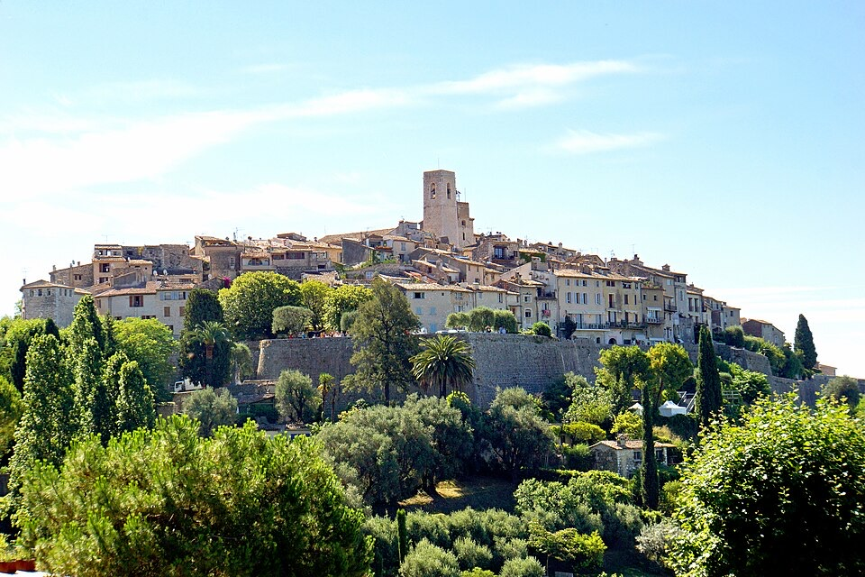
Medieval Art Village & Optional Fondation Maeght
半天–一天轻松朋友推荐必去
当天重点：朋友推荐的山城本身。石头巷子、城墙、画廊和小店，留时间坐下来吃饭或喝咖啡。
📅 这几天要注意：从尼斯没有直达车，先坐 TER 到卡涅（Cagnes-sur-Mer）再换 ZOU! 655 路，单程约 1 小时 10 分；平日约 30 分钟一班，周末约 40–50 分钟一班（2024-06 版时刻表，出发前复核）。10/17 周六是法国万圣节假期第一天，山城人多，想清静就放 10/15 或 10/16。玛格基金会每天 10:00–18:00，€18，不用预约。村口的 La Colombe d'Or 是挂满毕加索、马蒂斯作品的老餐厅，10 月底才关门，午餐 12:00–14:30，电话 +33 4 93 32 80 02 订位。
Cinema & Shopping, or an Island Escape
半天–一天可选
现在的行程：D9 10/17 周六机动日的首选。
两种玩法选一个重点，不是两份完整行程都做。
📅 这几天要注意：从尼斯坐 TER 约 35 分钟。戛纳秋季电视节（MIPCOM）10/12–10/15，电影节宫一带人多，G1 最好放 10/16 之后。G2 的 Horizon 渡船从戛纳老港 Quai Laubeuf 出发，船程 15 分钟，全年每天开；淡季大约每小时一班，最后一班回程约 17:00，往返 €12.50 起；风浪大会停航，出发前查时刻表。
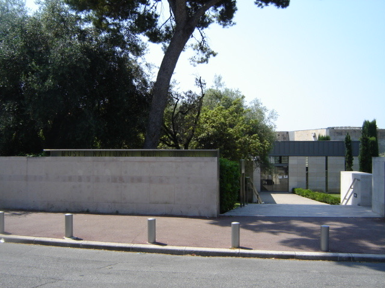
Chagall, Matisse & Cimiez
半天–一天轻松雨天备选可选
当天重点：室内艺术，减少跨城交通。夏加尔美术馆（Musée Marc Chagall）与马蒂斯美术馆（Musée Matisse）按兴趣选一座或两座，天气允许再逛西米耶（Cimiez）周边。
📅 这几天要注意：两家都在西米耶山上，周二闭馆（10/13 以外都开）；夏加尔美术馆 13:00–14:30 午休（到 10/31），€10–12；马蒂斯美术馆 €12，尼斯市立博物馆 4 日通票 €15。
Perfume, Old Town & a Hands-on Experience
一天可选
当天重点：换成嗅觉与手作体验，不继续堆海景。香水老城、国际香水博物馆（Musée International de la Parfumerie）；有兴趣可以提前预约调香体验。
📅 这几天要注意：从尼斯坐 TER 约 1 小时 10 分；火车站在山下，到老城要走约 15 分钟上坡，或者换公交。国际香水博物馆 9–6 月每天 10:00–18:00，€6。调香体验（Galimard、Molinard、Fragonard）大多要提前预约；Fragonard 的完整调香课不在老城里，离老城约 3 km。
| 日期 | 安排 | 字母 |
|---|---|---|
| 10/13 周二下午 🎂 | 老城、萨莱雅花市、城堡山（Colline du Château）日落、海边生日晚餐 | A |
| 10/14 周三 | 自由城老港，海鲜午餐 → 罗斯柴尔德别墅花园 → 从博利厄坐 TER 25 分钟到芒通，逛老城，在海边看日落（约 18:48） | C + D |
| 10/15 周四 | 埃兹村 → 尼采小径下山 → 摩纳哥老城和亲王宫（国事厅最后一天开放）；16:30 前回到尼斯的话，傍晚可加马蒂斯美术馆；晚上吃 La Merenda | B（+ H） |
| 10/16 周五 | 上午昂蒂布毕加索博物馆和市场 → 火车到卡涅换 655 路 → 13:15 在 La Colombe d'Or 吃午饭 → 圣保罗村子 + 玛格基金会（开到 18:00） | E + F |
| 10/17 周六 | 机动日：天气好去戛纳（逛城市，或坐船上圣玛格丽特岛）；对香水感兴趣就上午格拉斯、下午戛纳；下雨就看尼斯的马蒂斯 / 夏加尔美术馆。7 点前回尼斯收拾行李 | G / I + G / H |
| 10/18 周日 | 早上 6:40 的飞机回 SFO，4:45 左右出门，不安排活动 | — |
| 日期 | 能不能再加 |
|---|---|
| 10/13 周二 | 不加：周二马蒂斯和夏加尔美术馆都闭馆，生日慢慢过。 |
| 10/14 周三 / 10/16 周五 | 已经满了。 |
| 10/15 周四 | 16:30 前回到尼斯的话，傍晚可以加 H 的马蒂斯美术馆（开到 18:00，17:30 停止售票），下午就跳过海洋博物馆。 |
| 10/17 周六 | 整天都空，三选一：G 戛纳（逛城市，或上圣玛格丽特岛）；I 格拉斯 + 戛纳（上午格拉斯、下午戛纳，调香课要提前约）；下雨就 H 尼斯艺术日。第二天 6:40 的飞机，晚上 7 点前回尼斯。 |
| 10/18 周日 | 清早的航班，不安排。 |
生日这天从巴黎去尼斯：坐 7:00 前后的 TGV 高铁，中午前后到；下午在老城（Vieux Nice）和萨莱雅花市（Cours Saleya）慢慢逛，傍晚上城堡山（Colline du Château）看天使湾（Baie des Anges）日落，晚上在海边吃生日晚餐（怎么选）。巴黎的生日前夜大餐在昨晚（D4）。
| 模块 | 地点安排 | 特色图片 | 备注 |
|---|---|---|---|
| 早上 方案 1 |
TGV：巴黎里昂站 Gare de Lyon → 尼斯火车站 Nice-Ville TGV行李 |
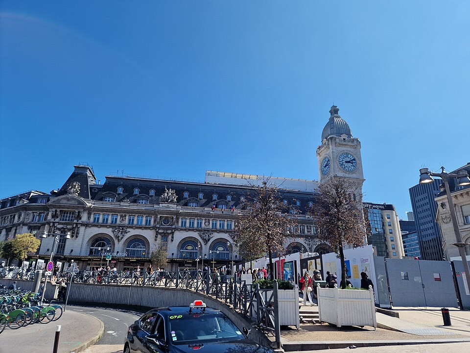 |
推荐想看风景的走法：7:00 前后的 TGV INOUI 高铁直达，最快 5 小时 37 分，约 13:00 到尼斯市中心，不用安检。提前买 2 等座早鸟票 €29 起，常见 €55–79，临时买约 €130。过了马赛（Marseille）之后沿海开，海在行进方向的右手边。 |
| 早上 方案 2 |
飞机：CDG / ORY → NCE 飞机轻轨 |
- | 法航 2026 年起巴黎–尼斯只从 CDG 飞；从奥利机场（ORY）出发的是 Transavia，易捷航空两个机场都有。飞行约 1.5 小时，门到门 3.5–4.5 小时，单程常见 €50–150（托运行李另算）。行李多、不想早起就选飞机。 |
| 中午 | 尼斯火车站 Nice-Ville或：尼斯机场 NCE轻轨行李 | - | TGV 到的尼斯火车站（Nice-Ville）就在市中心，走 3 分钟到 Hotel 66 Nice 寄存行李。飞机落地从机场坐轻轨 2 号线进城约 30 分钟：机场站进出必须买 AERO 往返票 €10（只卖往返），市区单程票 €1.70；带行李打车到市中心是一口价 €32。 |
| 午餐 | Chez Thérésa（萨莱雅市集 Cours Saleya 里的鹰嘴豆煎饼摊）或：Lou Pilha Leva（老城小吃，全天营业）快进快出不订位步行 | - | 到尼斯第一口吃鹰嘴豆煎饼：现烤的薄饼，趁热撒黑胡椒，再来一块洋葱挞。在萨莱雅市集的 Chez Thérésa 摊位买（约 15:00 前收摊）；赶不上就去老城里全天营业的 Lou Pilha Leva。 |
| 下午 老城 Vieux Nice |
萨莱雅市集 Cours Saleya尼斯老城小巷 Vieux Nice必去可认真逛步行 | 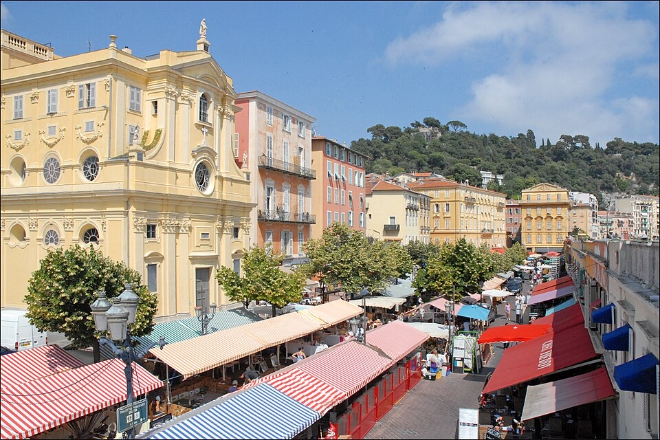 |
花市周二到周日开（周三 6:30–18:30），周一换成古董市。老城巷子里慢慢逛：圣雷帕拉特大教堂（Cathédrale Sainte-Réparate）、拉斯卡里斯宫（Palais Lascaris，周二闭馆，今天进不去）。 |
| Fenocchio 冰淇淋Maison Auer 蜜饯老店快进快出步行 | - | 罗塞蒂广场（Place Rossetti）上的冰淇淋店，试试薰衣草、紫罗兰、番茄罗勒这类本地口味（二手资料说每年约 11/15 起冬歇，10 月还开）。Maison Auer 的蜜饯水果适合当伴手礼，周日休（周一是否营业有两种说法）。 | |
| 日落 | 城堡山 Colline du Château 必去步行 |
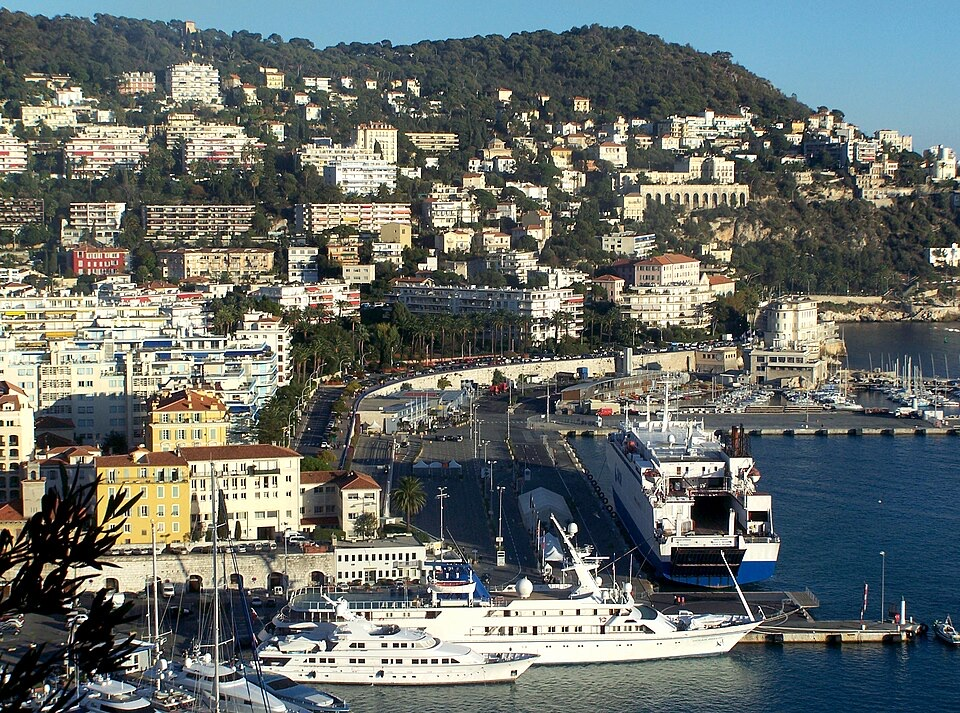 |
从老城（Vieux Nice）东边坐免费电梯上去（也可以走台阶），在人工瀑布旁的观景台看天使湾（Baie des Anges）日落。公园 10 月开到 20:00；10/13 日落约 18:51，17:45 左右上去，生日这天在这里看天使湾（Baie des Anges）日落。 |
| 🎂 生日晚餐 | Le Plongeoir（建在海中礁石上的餐厅）星级：JAN（米其林一星） / Flaveur（米其林二星） / 热闹：La Petite Maison现在就订出租车 | - | 海边礁石上的餐厅，在港口东边的海岸上，从城堡山走下来约 20 分钟，也可以打车。周二 12:00–21:30 营业（今年开到 11/15），电话 +33 4 93 26 53 02 或官网订位，订位时写上生日，请他们准备插蜡烛的甜点；日落后天黑得快，晚餐订 19:15 左右。想吃星级就选 JAN 或 Flaveur，对比见下面的「尼斯生日晚餐怎么选」。 |
默认推荐 Le Plongeoir：在海上吃生日晚餐，离城堡山近，生日这天刚从巴黎坐火车过来，不用再赶远路。想吃星级大餐就选 JAN（一星，小而精）或 Flaveur（二星）；想要热闹就选 La Petite Maison。
| 选项 | 在哪 / 看点 | 价格（不含酒） | 10/13 周二的时间 | 怎么订 | 生日 / 注意 |
|---|---|---|---|---|---|
| Le Plongeoir 建议 · 看海 |
港口东边的海岸上，餐厅建在海中的礁石上（名字就是「跳水台」的意思），四面是海；从城堡山（Colline du Château）走过来约 20 分钟 | 人均未核实 | 周二 12:00–21:30（今年营业到 11/15） | 电话 +33 4 93 26 53 02 或 官网 | 订位时写上生日，问能否准备插蜡烛的甜点；日落约 18:51，天黑后海景就看不清了，晚餐订 19:15 左右 |
| JAN 星级 · 一星 |
港口附近拉斯卡里斯街（rue Lascaris）12 号，只有 24 个座位；南非主厨 Jan Hendrik van der Westhuizen，法国南部食材配南非做法 | 套餐约 €200（二手来源） | 周二至周六 19:00–22:00 | 官网订位 | 订位时备注生日；座位少，尽早订 |
| Flaveur 星级 · 二星 |
市中心古贝纳蒂斯街（rue Gubernatis）25 号，兄弟俩主理，地中海味道加各地香料 | 套餐 €180–315，配酒 €80–140 | 周二 19:30–22:00（中午也开） | 官网 或 TheFork | 必须预订；订位时备注生日 |
| La Petite Maison 热闹 · 名流 |
老城（Vieux Nice）边上，尼斯的名流餐厅，也是伦敦、迪拜 LPM 的原型；气氛热闹 | 约 €100 以上（二手来源） | 周二营业（有来源说周日休，订位时确认） | 电话 04 93 92 59 59，几乎必须预订 | 想要热闹、有派对感就选它 |
东线海湾一天走到底（菜单里的 C + D）：上午在滨海自由城（Villefranche-sur-Mer）的彩色老港，中午吃海鲜，下午看费拉角（Saint-Jean-Cap-Ferrat）的罗斯柴尔德别墅花园，再从博利厄（Beaulieu-sur-Mer）坐火车 25 分钟到芒通（Menton），逛老城、在海边看日落。
| 模块 | 地点安排 | 特色图片 | 备注 |
|---|---|---|---|
| 上午 | 滨海自由城 Villefranche-sur-Mer TER必去步行 |
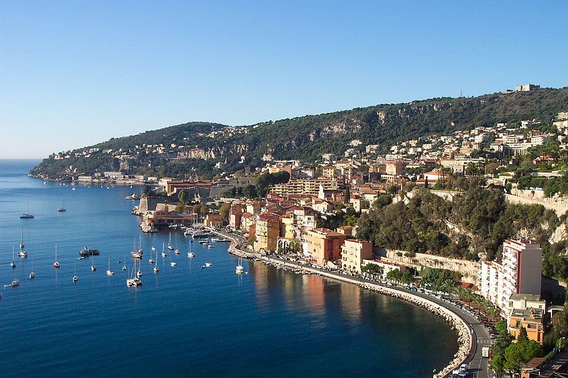 |
从尼斯火车站（Nice-Ville）坐 TER 6–7 分钟，车站就在海湾边。逛老港的彩色房子，看科克托画的圣彼得礼拜堂（Chapelle Saint-Pierre，周二闭，门票约 €4，未核实）。 |
| 午餐 | La Mère Germaine（老港海鲜） 官网订位步行 |
- | 港口边的老牌海鲜餐厅，吃当天的鲜鱼。周三至周日营业，露台位建议提前约 1 周在 Zenchef 订；吃 12:00 那轮，下午时间更充裕。 |
| 下午 | 罗斯柴尔德别墅花园 Villa Ephrussi de Rothschild 必去可认真逛建议网上买票 |
粉色别墅加九个主题花园，两边都是海湾。到 11/1 为止每天 10:00–18:00；成人 €18，含中文语音导览。坐 Lignes d'Azur 15 路到 Passable – Rothschild 站再步行。留 1.5–2 小时，15:30 前后离开。 | |
| 傍晚 | TER：博利厄 Beaulieu-sur-Mer → 芒通 Menton 步行TER |
- | 从别墅走约 20 分钟下山到博利厄火车站（Beaulieu-sur-Mer），或坐 15 路公交；TER 到芒通约 25 分钟，班次很多。 |
| 日落 芒通 |
芒通老城 Menton / 圣米歇尔大教堂 Basilique Saint-Michel-Archange 必去可认真逛步行 |
沿海最东边的柠檬小镇，彩色房子叠在山坡上。从芒通火车站走 10 分钟进老城：圣米歇尔大教堂（Basilique Saint-Michel-Archange）前的彩色石子台阶和广场 → 老城小巷 → 下到港口和 Les Sablettes 海滩，10/14 日落约 18:48。让·科克托博物馆（Musée Jean Cocteau）周三开，时间够再进。 | |
| 回程 | TER：芒通 Menton → 尼斯火车站 Nice-Ville TER |
- | 约 35 分钟回尼斯，班次很多；19:15 左右的车，19:50 前后到。 |
| 晚餐 | Le Canon（自然酒小酒馆）备选：Chez Acchiardo（尼斯家庭菜，电话订）电话订位步行 | - | 黑板上的当日菜，本地食材配 100% 自然酒，约 €40–60；周六、周日休，周三正常营业。从芒通回来约 19:50，电话订 20:00 以后的位（04 93 79 09 24），订位时问清最晚几点入座；太晚就在芒通港口边吃完再回。 |
蔚蓝海岸（Côte d'Azur）最经典的一天：上午在山顶的埃兹村（Èze），中午沿小径下山，下午在摩纳哥老城（Monaco-Ville）和蒙特卡洛（Monte-Carlo）。摩纳哥亲王宫（Palais Princier）国事厅今年开到 10/15，今天正好是最后一天。全程公交 + 火车，不用开车。16:30 前回到尼斯的话，傍晚还可以加马蒂斯美术馆（菜单里的 H）。
| 模块 | 地点安排 | 特色图片 | 备注 |
|---|---|---|---|
| 早上 | Nice Vauban 公交站 巴士 |
- | 坐 Lignes d'Azur 82 路（€1.70 市区票）或 ZOU! 602 路（约 €2.10）上埃兹村（Èze），车程 20–30 分钟。这几条线每天只有 6–8 班，前一天查好时刻表，挑 8:00–9:00 那班；上午车挤，提前 10–15 分钟到站排队。 |
| 上午 埃兹 Èze |
埃兹村 Èze埃兹异域花园 Jardin Exotique d'Èze（村子最高处）必去可认真逛步行 | 中世纪鹰巢村，巷子很窄，赶在 10:30 旅游团到之前逛完。山顶的异域花园俯瞰整片海岸，成人约 €10（二手资料，官网没核实到）。 | |
| 尼采小径 Chemin de Nietzsche 可选可认真逛步行 |
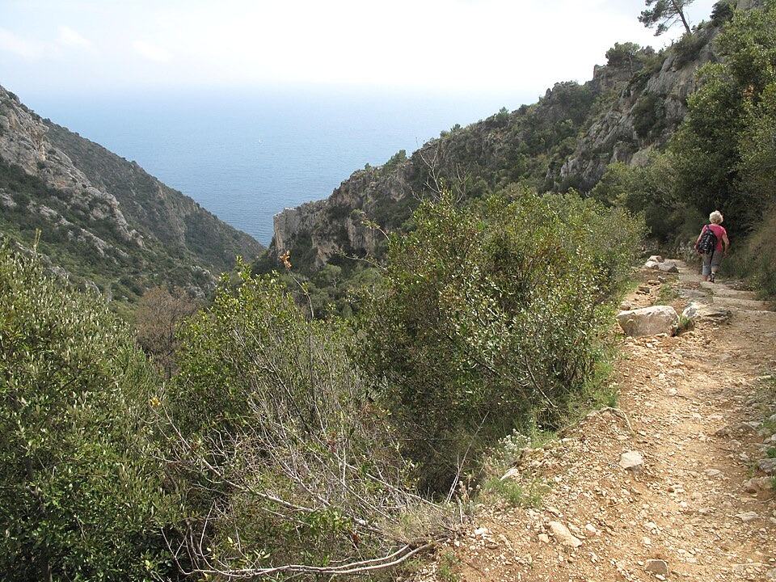 |
从村子沿尼采小径（Chemin de Nietzsche）下山到海边的滨海埃兹火车站（Èze-sur-Mer），45–60 分钟（约 2 公里、落差约 400 米），一路下坡看海。穿运动鞋；雨后湿滑就改坐 602 路直接去摩纳哥（Monaco）。 | |
| 中午 | TER：滨海埃兹站 Èze-sur-Mer → 摩纳哥站 Monaco-Monte-Carlo TER |
- | 坐一站到摩纳哥。摩纳哥火车站在地下，出口很多，去老城（Monaco-Ville）和去蒙特卡洛赌场（Casino de Monte-Carlo）的出口不同，跟着指示牌走。也可以坐沿海的 ZOU! 600 路公交（€2.10），慢一些但海景好。 |
| 午餐 | La Montgolfière（摩纳哥老城 Monaco-Ville 小馆） 电话订位步行 |
- | 在老城（Monaco-Ville）里、离亲王宫（Palais Princier）很近，午餐是黑板菜单（主菜 €16–31）。周三、周日休，电话 +377 97 98 61 59；营业状况待复核，订不到就在老城随便吃点。 |
| 下午 摩纳哥 Monaco |
摩纳哥老城 Monaco-Ville亲王宫国事厅 Palais Princier必去可认真逛步行 | 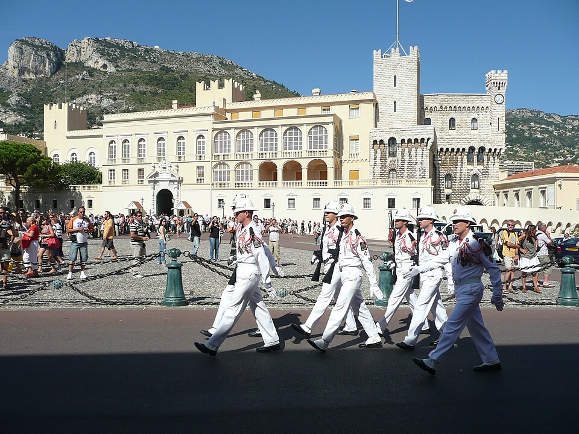 |
老城建在海边悬崖上。亲王宫（Palais Princier）国事厅 2026 年开放期 3/30–10/15，今天是最后一天：10:00–18:00（最后入场 17:15），成人 €13；官网提示在线购票有技术故障，直接在亲王宫广场（Place du Palais）现场买。卫兵换岗每天 11:55，下午到的话看不到。 |
| 摩纳哥海洋博物馆 Musée océanographique 可选可认真逛 |
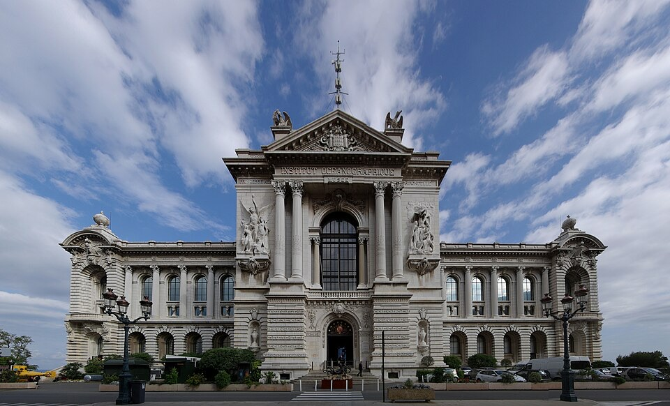 |
建在悬崖上的海洋博物馆和水族馆，10 月 10:00–18:00，成人 €20.50（也有 €22.50 的说法，以购票页为准）。屋顶露台视野很好。 | |
| 傍晚 | 蒙特卡洛赌场 Casino de Monte-Carlo 路过扫一眼步行 |
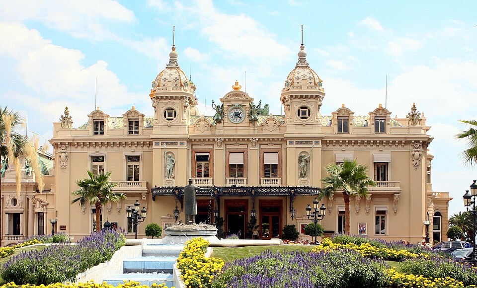 |
赌场内部参观只在 10:00–13:00（€20），下午来就看外观和 Café de Paris 前的广场。14:00 以后的游戏厅要带护照原件、穿着得体。 |
| 回程 | TER：摩纳哥站 Monaco-Monte-Carlo → 尼斯火车站 Nice-Ville TER |
- | 约 20 分钟回尼斯，班次很多。遇到罢工 TER 会大面积取消，出发前在 SNCF Connect 查一下；备选是 ZOU! 600 路公交。 |
| 傍晚 （可选） |
马蒂斯美术馆 Musée Matisse 可选巴士 |
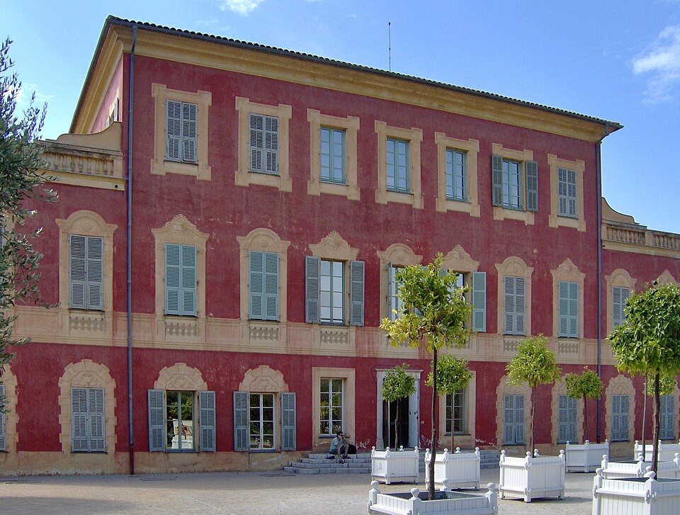 |
回到尼斯还早（16:30 前）就坐公交上西米耶（Cimiez）：马蒂斯美术馆开到 18:00（17:30 停止售票），€12，周二闭、今天开。想去就跳过下午的海洋博物馆和蒙特卡洛赌场。 |
| 晚餐 | La Merenda（尼斯传统菜） 难订 · 只收现金步行 |
- | 尼斯最有名的传统菜小馆，招牌是青酱意面和炸西葫芦花。官网写周一至周五营业、周末休；官网（SevenRooms）提前 1–2 周订。多家来源称只收现金或支票，记得带够。 |
西线一天走到底（菜单里的 E + F）：上午在昂蒂布（Antibes），10:00 先看毕加索博物馆（中午闭馆），再逛普罗旺斯市场（Marché Provençal）和老城；中午坐火车到卡涅（Cagnes-sur-Mer）换 655 路上山，在圣保罗德旺斯的 La Colombe d'Or 吃午饭，下午逛村子、看玛格基金会（Fondation Maeght）。放在周五是因为工作日公交班次多，人也比周末少。
| 模块 | 地点安排 | 特色图片 | 备注 |
|---|---|---|---|
| 早上 | TER：尼斯火车站 Nice-Ville → 昂蒂布站 Antibes TER |
- | 约 14–25 分钟（看车次），票价约 €5–6，坐 9:00 左右的车。买票时认准 TER，TGV / Intercités 也停昂蒂布（Antibes）。 |
| 上午 | 昂蒂布毕加索博物馆 Musée Picasso Antibes 必去快进快出 |
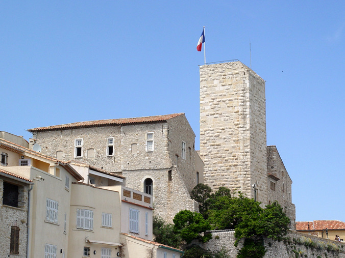 |
海边的格里马尔迪城堡（Château Grimaldi），毕加索 1946 年在这里画过一批作品。9/16 以后 10:00–12:00、14:00–18:00，中午闭馆，周一闭馆；全价 €12。10:00 一开门就进，看完正好去市场。 |
| 昂蒂布老城 Vieil Antibes + 普罗旺斯市场 Marché Provençal 必去可认真逛步行 |
马塞纳街（Cours Masséna）上有顶棚的老市场，9–5 月周二到周日 7:30–13:00，周六上午最热闹；市场 13:00 收，买块鹰嘴豆煎饼垫一下，12:00 前后去火车站。同一个地方 10–5 月的周五到周日 15:00–19:00 还有花和手作市集。 | ||
| 中午 | TER：昂蒂布 Antibes → 卡涅 Cagnes-sur-Mer → ZOU! 655 路公交 TER巴士 |
- | 昂蒂布到卡涅的 TER 约 10 分钟，在卡涅火车站门口换 ZOU! 655 路上山，约 25 分钟到圣保罗德旺斯（Saint-Paul-de-Vence）。工作日 655 路约 30 分钟一班（2024-06 版时刻表，出发前在 ZOU! 官网或 App 复核）；坐 12:10 左右的火车，13:00 前后到村口。 |
| 午餐 | La Colombe d'Or（挂满名家作品的老旅馆餐厅） 可认真吃电话订位步行 |
- | 村口的老旅馆餐厅，墙上和花园里有毕加索、马蒂斯、米罗等人留下的作品，是圣保罗最有代表性的一餐。午餐 12:00–14:30，今天订 13:15 的位，电话 +33 4 93 32 80 02 或邮件 contact@la-colombe-dor.com 订位；每年 10 月底关门到圣诞，订位时确认 10/16 营业。价格不便宜（主菜约 €22–65，二手来源）。订不到就在村里随便找家露台咖啡馆。 |
| 下午 | 圣保罗德旺斯 Saint-Paul-de-Vence必去可认真逛步行 | 城墙完整的中世纪山城，巷子里全是画廊。午饭后沿主街 Rue Grande 一路走到南头的墓园，夏加尔（Chagall）就葬在这里；城墙上看得到远处的海。注意：圣保罗德旺斯和再往上的旺斯（Vence）是两个地方。 | |
| 玛格基金会 Fondation Maeght 必去可认真逛步行 |
从村子走约 10 分钟（有上坡），也可以坐 655 路一站到 Fondation Maeght 站。每天 10:00–18:00，€18，不用预约。建筑师塞尔特设计的建筑，配米罗的迷宫花园和贾科梅蒂雕塑庭院，Ellsworth Kelly 特展到 11/15。开到 18:00，留 1.5 小时左右。 | ||
| 回程 | ZOU! 655 路 → 卡涅 Cagnes-sur-Mer → TER 回尼斯 巴士TER |
- | 全程约 1 小时 10 分。平日 655 路回程到晚上 8 点前后还有车，出发前查好末班时间。 |
| 晚餐 | Olive & Artichaut（本地小农时令菜）备选：Bistrot d'Antoine（只接电话订位）官网订位步行 | - | 老城（Vieux Nice）里用本地小农食材的现代尼斯菜，周五营业（周日、周一休），官网（Guestonline）或电话订，提前 3–7 天。 |
南法最后一个整天，按天气和体力选菜单里的可选项：天气好首选戛纳（G），逛海滨大道和老城，或者坐船上圣玛格丽特岛；对香水感兴趣就上午格拉斯、下午戛纳（I + G）；下雨就留在尼斯看马蒂斯、夏加尔美术馆（H）。第二天是清早的航班，晚上 7 点前回尼斯，早点吃饭、收拾行李。10/17 起法国学校放万圣节假期，周末人多，早点出门。
| 模块 | 地点安排 | 特色图片 | 备注 |
|---|---|---|---|
| 选法一 戛纳 |
戛纳 Cannes：电影节宫 Palais des Festivals / 海滨大道 La Croisette / Le Suquet 老城 首选TER步行 |
- | 天气好首选（菜单里的 G）：从尼斯坐 TER 约 35 分钟。电影节宫周边、海滨大道（La Croisette），再爬上 Le Suquet 老城看海湾；戛纳秋季电视节（MIPCOM）10/15 已经结束。 |
| 圣玛格丽特岛 Île Sainte-Marguerite 可选渡船 |
- | 想坐船就加上：从戛纳老港 Quai Laubeuf 坐 Horizon 渡船，船程 15 分钟，全年每天开，淡季大约每小时一班，最后一班回程约 17:00，往返 €12.50 起；岛上散步看松林和海，风浪大会停航。 | |
| 选法二 格拉斯 |
格拉斯 Grasse：国际香水博物馆 Musée International de la Parfumerie 可选TER |
- | 对香水感兴趣就上午格拉斯、下午戛纳（I + G）：从尼斯坐 TER 约 1 小时 10 分，火车站在山下，走约 15 分钟上坡或换公交进老城。博物馆 10:00–18:00，€6；调香课（Galimard、Molinard、Fragonard）大多要提前约。中午后坐 TER 24 分钟到戛纳，接选法一。 |
| 下雨 尼斯美术馆 |
马蒂斯美术馆 Musée Matisse夏加尔美术馆 Musée Marc Chagall可选巴士 | 下雨就留在尼斯（H）：两家都在西米耶（Cimiez）山上，周六都开。马蒂斯美术馆 10:00–18:00，€12；夏加尔美术馆 10:00–18:00，13:00–14:30 午休，€10–12。周四傍晚已经去过马蒂斯的话，今天只看夏加尔。 | |
| 傍晚 | 回酒店收拾行李 行李 |
- | 明天清早的航班（已订 6:40 的汉莎 LH1069）：7 点前回到尼斯，先把行李收好，跟酒店叫好 4:45 左右去机场的出租车（一口价 €32）。 |
| 晚餐 | Bistrot d'Antoine（市场料理小酒馆） 电话订位步行 |
- | 尼斯最后一晚，明天要早起，订 19:00 左右的位。老城（Vieux Nice）里的人气小酒馆，按黑板上的时令菜点；只接受电话订位（+33 4 93 85 29 57），常客满，提前一周以上打；周二至周六营业。周六 La Merenda、Acchiardo、Le Canon 都不开。 |
从尼斯飞回湾区，两张票：汉莎 LH1069 06:40 → 法兰克福 08:20，转美联航 UA59 12:55 → SFO 15:20，当天落地。10/18 是法国万圣节假期的第一个周末，机场人多，提早出门。
| 模块 | 地点安排 | 特色图片 | 备注 |
|---|---|---|---|
| 4:45 去机场 |
尼斯蔚蓝海岸机场 NCE 出租车行李 |
- | 打车一口价 €32，约 20 分钟；轻轨首班约 5:24，赶不上。5:15 左右到 1 号航站楼，在汉莎柜台办托运，可以给柜台看 UA59 订单，问能不能直挂到旧金山（不保证）。 |
| 06:40 第一段 |
汉莎 LH1069 尼斯 → 法兰克福 飞机 |
- | 08:20 到法兰克福 1 号航站楼 A 区（申根区），落地不用过护照检查。过去半年 92% 提前或准点落地，最晚一次 10:48。 |
| 08:20–12:55 法兰克福转机 |
法兰克福机场 1 号航站楼（A 区 → Z 区） 行李 |
- | 有托运：取行李 → 出到出发层 1 号航站楼 B 厅美联航柜台重新托运（11:55 截止）→ 安检和出境护照检查 → Z 区登机口（最近常在 Z17 / Z18）。只带登机箱：不出机场，跟着转机指示上楼过出境护照检查，直接到 Z 区。两人都有星空联盟金卡，可以进汉莎贵宾室等。 |
| 12:55 第二段 |
美联航 UA59 法兰克福 → 旧金山 飞机 |
- | 15:20 到 SFO，飞 11 小时 25 分；座位 32D / 32E，PlusPoints 升舱在候补。汉莎误点赶不上的话，12:55 前打美联航 Global Services 改当天 UA927（17:30 → 19:50）。 |
口径：优先挑本地人和游客口碑都稳的店，按区域排，方便就近塞进每天的行程。价格按单人一餐估算。「未核实」表示官网没查到，出发前在 Google Maps 再看一眼营业时间。
餐饮安排以这张表为准：建议、备选、可选都在这里，每日行程里的餐厅也以此为准。
| 日期 | 餐次 | 餐厅 | 吃什么 | 状态 | 预约判断 | 预约 / 官网链接 | 备注 |
|---|---|---|---|---|---|---|---|
| D2 10/10 周六 | 午餐 | Chez Alain Miam Miam | 现做夹馅三明治和热三明治（具体菜单未核实） | 建议 | 不用订位现场排队 | Google Maps | 在红孩儿市场（Marché des Enfants Rouges）里，周一、周二休，周六照常。 |
| D2 10/10 周六 | 午餐备选 | Breizh Café Le Marais | 荞麦咸可丽饼 + 甜可丽饼，配布列塔尼苹果酒 | 备选 | 需订位官网在线订或电话 +33 (0)1 42 72 13 77 | 订位 / 官网 | 官网可订，每天营业。 |
| D2 10/10 周六 | 晚餐 | Chez Janou | 冷罐装普罗旺斯炖菜、鳀鱼酱与橄榄酱前菜、迷迭香鸭胸、招牌巧克力慕斯；茴香酒选择很多 | 建议 | 需订位电话 01 42 72 28 41（官网未见在线订位） | Google Maps | 只接受电话订位 01 42 72 28 41；招牌巧克力慕斯。 |
| D2 10/10 周六 | 晚餐备选 | Café des Musées | 红酒炖牛肉（官网称获 Le Figaro 2018 巴黎最佳） | 备选 | 需订位官网在线订 | Google Maps | 玛黑区街角的家常小酒馆，每天营业、官网可订。 |
| D3 10/11 周日 | 歇脚 | Café Kitsuné Palais-Royal | 咖啡与轻食（具体菜单未核实） | 可选 | 不用订位不接受预订（现场排队） | Google Maps | 每天 8:30 开，在皇家宫殿花园（Jardin du Palais-Royal）的拱廊里；卢浮宫（Louvre）出来去午餐的路上歇一下。 |
| D3 10/11 周日 | 午餐 | Higuma | 黄油玉米拉面、韭菜猪肝炒豆芽、煎饺、盖饭 | 建议 | 不用订位不接受预订（官网写明不收订位） | Google Maps | 周日也开（11:30–22:00），不接受预订，翻台快。 |
| D3 10/11 周日 | 午餐备选 | Le Grand Colbert | 6 只生蚝 €26–34、焗洋葱汤 €13/15、焗蜗牛 6 只 €15、阿尔萨斯酸菜肉肠拼盘 €38/40；甜点巴黎布雷斯特泡芙 €14/15、覆盆子千层酥 €14/15（午/晚价） | 备选 | 需订位官网在线订或电话 01 42 86 87 88 | 订位 / 官网 | 午市套餐 €30 起，就在薇薇安拱廊（Galerie Vivienne）旁。 |
| D3 10/11 周日 | 晚餐 | Bouillon Julien | 蛋黄酱水煮蛋 €4.50、焗蜗牛 6 只 €9.90、招牌牛肉清汤 €10.90、肉铺精选牛排配薯条 €13.60、朗姆酒巴巴 €6.90 | 建议 | 不用订位官网在线订（官网注明请勿发邮件订位）；也欢迎不订位直接来 | 订位 / 官网 | 新艺术风格老餐厅，价格友好，周日晚上也开；官网可订，也可以直接来。 |
| D4 10/12 周一 | 午餐 | Coutume Babylone | 自家烘焙精品咖啡（意式与手冲）、当季早午餐 | 建议 | 不用订位到店即可（官网未提供订位） | Google Maps | 精品咖啡 + 早午餐；周一 8:30–17:30。 |
| D4 10/12 周一 | 🍰 甜点 | Pierre Hermé Bonaparte | 马卡龙（18 种常设或限定口味）、Ispahan（玫瑰、荔枝、覆盆子）、Montebello（开心果草莓） | 建议 | 不用订位现场购买 | 订位 / 官网 | 逛圣日耳曼时现买单个 Ispahan（玫瑰荔枝覆盆子）和马卡龙；生日在尼斯过，整只蛋糕不好带上火车。 |
| D4 10/12 周一 | 🎂 生日前夜晚餐 | Les Ombres | 午餐两道 €48 / 三道 €65；晚餐三道 €98 / 四道 €118（不含酒） | 建议 | 需订位OpenTable 在线订；电话 +33 (0)1 47 53 68 00 | 订位 / 官网 | 凯布朗利博物馆（Musée du quai Branly）屋顶，正对铁塔（Tour Eiffel）；晚餐 19:00–22:00，三道菜 €98 起；OpenTable 订，备注生日。 |
| D4 10/12 周一 | 前夜晚餐 · 奢侈 | Le Jules Verne | 主厨品鉴套餐：5 道 €295 起、7 道 €330 起（午晚同价） | 备选 | 需订位难订 · 尽早官网在线订；电话 +33 (0)1 72 76 16 61（每日 9:00–22:00）；邮件 reservation.jv@lejulesverne-paris.com；需付订金 | 订位 / 官网 | 铁塔（Tour Eiffel）2 楼，米其林二星；晚餐 19:00–21:00，5 道 €305 / 7 道 €345；男士要穿西装外套；生日蛋糕至少提前 72 小时说。 |
| D4 10/12 周一 | 前夜晚餐 · 铁塔 1 楼 | Madame Brasserie | 季节菜单（以本地蔬菜为主，有素食/纯素选项）；周日有早午餐 | 备选 | 需订位官网在线订或电话；持订位到 1 号入口，再到餐厅接待处领电梯票 | 订位 / 官网 | 18:30 或 21:00 两轮入座，€109.80 起；可加订庆祝套餐（一杯香槟 + 打印合照），至少提前 48 小时。 |
| D4 10/12 周一 | 前夜晚餐 · 美食派 | Septime | 只有主厨品鉴套餐：午餐 5 道 €85、晚餐 7 道 €135；配酒午 €60 / 晚 €75 | 备选 | 需订位难订 · 尽早官网在线订（Zenchef） | 订位 / 官网 | 周一晚餐 €135；10/12 的位 9/21 10:00（巴黎时间）放出。 |
| D5 10/13 周二 🎂 | 午餐 | Chez Thérésa | 鹰嘴豆煎饼（约 €3）、洋葱挞（约 €2.50）、菜煎蛋饼（约 €3.50）、尼斯三明治（约 €4） | 建议 | 不用订位不需要，排队购买 | Google Maps | 萨莱雅市集（Cours Saleya）的摊位，约 15:00 前收摊。 |
| D5 10/13 周二 🎂 | 午餐备选 | Lou Pilha Leva | 鹰嘴豆煎饼、尼斯酿蔬菜、炸西葫芦花、尼斯三明治、洋葱挞 | 备选 | 不用订位柜台点餐 | Google Maps | 老城中心的平价小吃店，全天不间断营业（多数来源称每天营业）。 |
| D5 10/13 周二 🎂 | 🎂 生日晚餐 | Le Plongeoir | 地中海菜，随季节和市场变化（具体菜单未核实） | 建议 | 需订位电话 +33 4 93 26 53 02 或官网 | 订位 / 官网 | 建在海中礁石上的餐厅；周二 12:00–21:30，今年营业到 11/15；订位时写上生日。 |
| D5 10/13 周二 🎂 | 生日晚餐 · 一星 | JAN | 主厨套餐，法国南部食材配南非做法（约 €200，二手来源） | 可选 | 需订位官网订位 | 订位 / 官网 | 米其林一星，只有 24 个座位，周二至周六晚餐。 |
| D5 10/13 周二 🎂 | 生日晚餐 · 二星 | Flaveur | 主厨套餐 €180–315，配酒 €80–140 | 可选 | 需订位官网或 TheFork | 订位 / 官网 | 米其林二星，周二中午和晚上都开。 |
| D5 10/13 周二 🎂 | 生日晚餐 · 热闹 | La Petite Maison | 尼斯风味前菜（酿蔬菜、洋葱挞等）和烤整鱼（具体菜单未核实） | 备选 | 需订位难订 · 尽早电话订位 04 93 92 59 59，几乎必须预订 | Google Maps | 热门名流餐厅，几乎必须电话订位；周二营业（有来源说周日休）。 |
| D6 10/14 周三 | 午餐 | La Mère Germaine | 当日鲜鱼和海鲜（地中海风味，具体菜单与价格未核实） | 建议 | 需订位官网 Zenchef 在线订位，或电话 +33 4 93 01 71 39 | 订位 / 官网 | 周三至周日营业；露台位提前约 1 周订。 |
| D6 10/14 周三 | 晚餐 | Le Canon | 黑板上的当日菜（本地、多为有机食材），配 100% 自然酒 | 建议 | 需订位电话订位 04 93 79 09 24 | Google Maps | 周六、周日休；电话订。 |
| D6 10/14 周三 | 晚餐备选 | Chez Acchiardo | 尼斯红酒炖牛肉、炖牛肉馅意式饺子、罗勒青酱蔬菜汤、酿蔬菜、尼斯风味炖牛肚 | 备选 | 需订位电话订位 +33 4 93 85 51 16；地区旅游局页面列出可刷银行卡、现金和餐券（旧攻略说只收现金，可能已过时） | Google Maps | 周六、周日休；电话订，营业状况待复核。 |
| D7 10/15 周四 | 午餐 | La Montgolfière – Henri Geraci | 午餐黑板菜单：前菜 €13–16、主菜 €16–31、甜点 €8；晚餐 3 道 €59 / 4 道 €70（价格来自搜索摘要，未在官网页面核实） | 可选 | 需订位待复核电话 +377 97 98 61 59 或 +33 6 80 86 86 25；官网联系表单 | 订位 / 官网 | 周三、周日休；营业状况待复核。 |
| D7 10/15 周四 | 晚餐 | La Merenda | 青酱意面、炸西葫芦花、酿沙丁鱼、尼斯红酒炖牛肉、尼斯风味炖鳕鱼干、甜菜挞 | 建议 | 需订位难订 · 尽早无电话。地区旅游局：只接受到店、Facebook、Instagram 或官网 lamerenda.net 预订；官网现有在线订位按钮（SevenRooms）。付款：只收现金或支票，不收银行卡 | 订位 / 官网 | 官网写周一至周五营业；多家来源称只收现金或支票。 |
| D8 10/16 周五 | 午餐 | La Colombe d'Or | 法式 / 普罗旺斯经典菜，招牌前菜拼盘约 €40（主菜约 €22–65，二手来源） | 建议 | 需订位电话 +33 4 93 32 80 02 或邮件 contact@la-colombe-dor.com | 订位 / 官网 | 墙上挂着毕加索、马蒂斯、米罗等人的作品；午餐 12:00–14:30；每年 10 月底关门，订位时确认 10/16 营业。 |
| D8 10/16 周五 | 晚餐 | Olive & Artichaut | 跟着当日菜单点，用本地小农的时令蔬菜、海鲜和山区食材（菜品随季节变） | 建议 | 需订位官网在线订位（Guestonline）或电话 +33 4 89 14 97 51 | 订位 / 官网 | 周五营业（周日、周一休）；官网提前 3–7 天订。 |
| D9 10/17 周六 | 晚餐 | Bistrot d'Antoine | 按黑板时令菜点，米其林介绍提到：老式炖猪肉配奶油玉米糊、手切生牛肉挞、烤小牛腰配芥末酱 | 建议 | 需订位难订 · 尽早只接受电话订位 +33 4 93 85 29 57（无网上订位） | 订位 / 官网 | 周二至周六营业；只接电话订位，提前一周以上。 |
| 优先级 | 日期 | 餐厅 | 什么时候订 | 预约链接 | 下一步 |
|---|---|---|---|---|---|
| 最高 | D4 10/12 周一 | Les Ombres | 现在就订（OpenTable），选 19:30–20:00（想先看凯旋门日落就订 19:45），备注生日前夜。 | 订位 / 官网 | 订不到就换 Madame Brasserie 或 Le Jules Verne。 |
| 最高 | D5 10/13 周二 🎂 | Le Plongeoir | 现在就订：电话 +33 4 93 26 53 02 或官网，订 19:15 左右，备注生日。 | 订位 / 官网 | 订不到就换 JAN 或 La Petite Maison。 |
| 高 | D7 10/15 周四 | La Merenda | 约 10/1 起在官网（SevenRooms）订（提前 1–2 周）；订不到就前一天去店里问。 | 订位 / 官网 | 带现金。 |
| 高 | D8 10/16 周五 | La Colombe d'Or | 现在就打电话（+33 4 93 32 80 02）或发邮件订 10/16 午餐，顺便确认 10 月底关门前还营业。 | 订位 / 官网 | 订不到就在村里找家露台咖啡馆。 |
| 高 | D9 10/17 周六 | Bistrot d'Antoine | 最晚 10/9 前打电话（+33 4 93 85 29 57），提前一周以上。 | 订位 / 官网 | 订不到就换 Olive & Artichaut（周六也开）。 |
| 中 | D2 10/10 周六 | Chez Janou | 提前 1–2 周打电话（01 42 72 28 41，湾区晚上打正好是巴黎早上）。 | 电话 / 现场 | 打不通就改 Café des Musées，官网直接订。 |
| 中 | D3 10/11 周日 | Bouillon Julien | 提前几天官网订。 | 订位 / 官网 | 不订也可以直接去排队。 |
| 中 | D8 10/16 周五 | Olive & Artichaut | 10/9–10/13 之间官网订（提前 3–7 天）。 | 订位 / 官网 | 订不到就换 Le Canon（周五也开）。 |
| 中 | D6 10/14 周三 | La Mère Germaine | 约 10/7 在 Zenchef 订露台位（提前约 1 周）。 | 订位 / 官网 | 订不到就在自由城（Villefranche-sur-Mer）老港随便挑一家海边餐厅。 |
| 中 | D6 10/14 周三 | Le Canon | 提前几天电话订（04 93 79 09 24）。 | 电话 / 现场 | 订不到就换 Chez Acchiardo。 |
| 可选 | D4 10/12 周一 | Le Jules Verne | 现在就查：90 天窗口 7 月中就开了，日落时段最先卖完；订位要预付，48 小时内取消不退。 | 订位 / 官网 | 奢侈版生日前夜晚餐，米其林二星，5 道 €305 起；生日蛋糕至少提前 72 小时说。 |
| 可选 | D4 10/12 周一 | Madame Brasserie | 尽早在官网订（第三方建议至少提前 10–15 天）；18:30 那轮正好赶上日落（19:05）。 | 订位 / 官网 | 加订庆祝套餐（香槟 + 合照）至少提前 48 小时；不能自带蛋糕。 |
| 可选 | D4 10/12 周一 | Septime | 9/21 10:00 巴黎时间（湾区 9/21 凌晨 1:00）放 10/12 的位，一开放就抢。 | 订位 / 官网 | 美食派前夜晚餐，€135；周末休、周一开。 |
| 可选 | D5 10/13 周二 🎂 | JAN | 尽早在官网订，只有 24 个座位。 | 订位 / 官网 | 米其林一星生日晚餐，套餐约 €200。 |
| 可选 | D5 10/13 周二 🎂 | Flaveur | 尽早在官网或 TheFork 订。 | 订位 / 官网 | 米其林二星生日晚餐，套餐 €180–315。 |
| 可选 | D9 10/17 周六 | Mirazur | 10 月的位早已放完，只能在官网盯取消的空位。 | 订位 / 官网 | 三星大餐，要登记信用卡；芒通在 D6 傍晚，想吃就把那天的晚餐改成它（10 月的位基本订满，只能等取消）。 |
| 单品 | 图片 | 为什么吃 | 去哪吃 |
|---|---|---|---|
| 可颂 croissant |
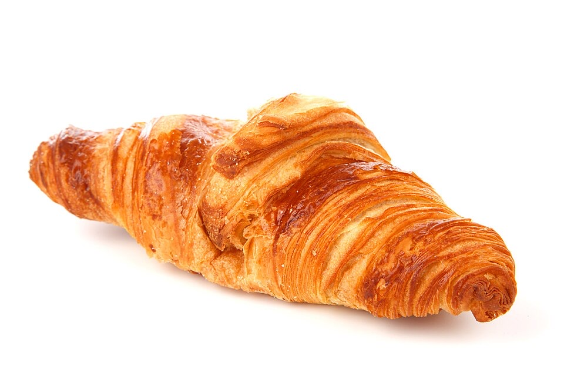 |
法式早餐核心，层次酥脆；Yann Couvreur 官网 €1.90，Café de Flore 黄油可颂 €4。 | Yann Couvreur Pâtisserie (Rosiers)、Mamiche (Condorcet)、Du Pain et des Idées、Café de Flore |
| 巧克力面包 pain au chocolat |
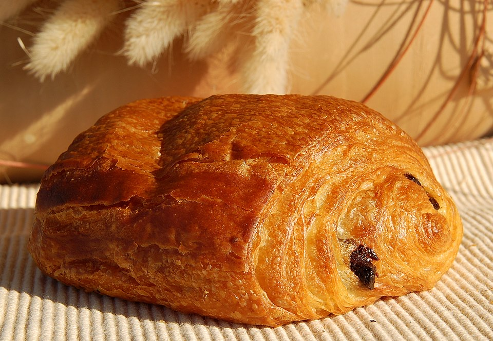 |
巴黎人日常早餐酥点，和可颂对比着吃。 | Yann Couvreur Pâtisserie (Rosiers)、Mamiche (Condorcet) |
| 传统法棍 baguette de tradition |
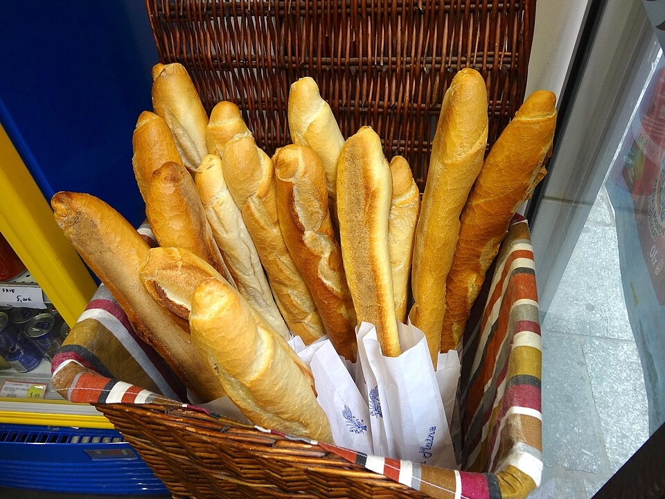 |
巴黎每年评选最佳传统法棍，2026 冠军是 Fournil Didot；外皮脆、内部气孔大。 | Fournil Didot、Boulangerie Utopie、Mamiche (Condorcet) |
| 火腿黄油三明治 jambon-beurre |
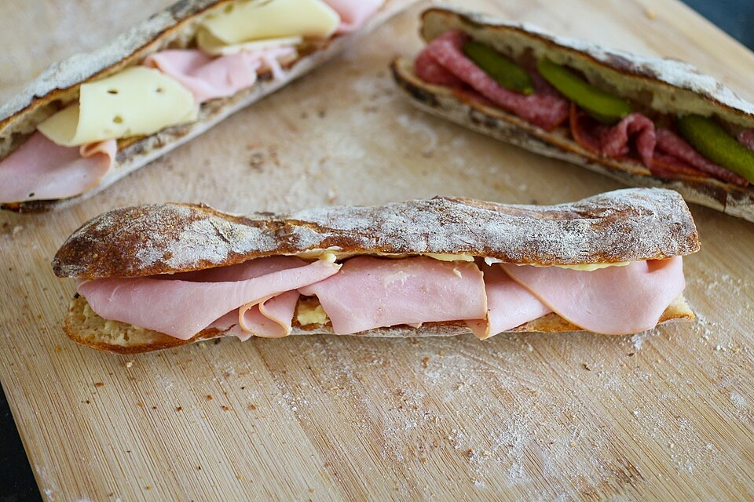 |
最简单也最巴黎的午餐，Le Figaro 推荐 Le Petit Vendôme。 | Le Petit Vendôme |
| 荞麦咸可丽饼 / 甜可丽饼 galette & crêpe |
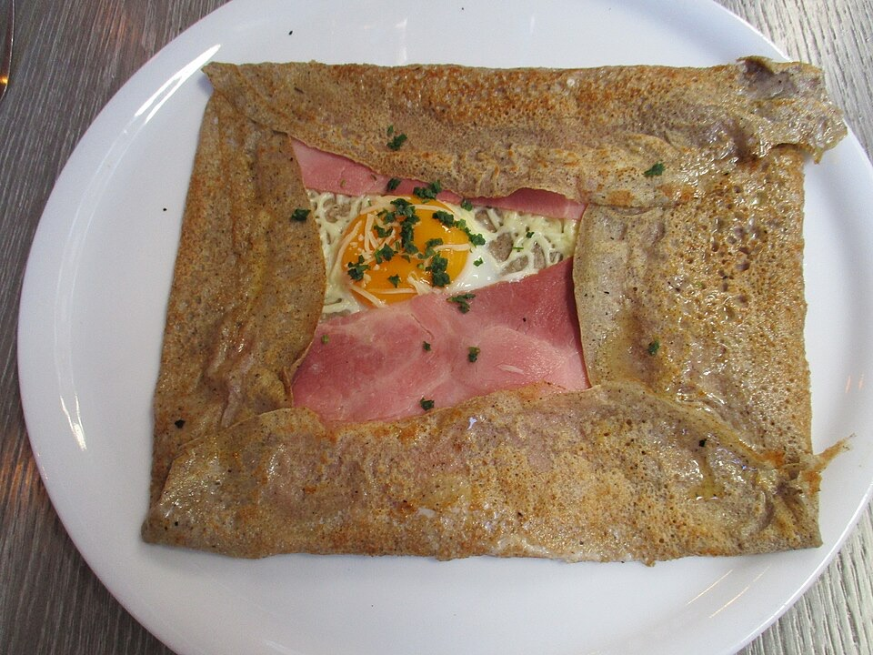 |
布列塔尼荞麦咸饼配苹果酒，再来一份甜可丽饼。 | Breizh Café Le Marais、Chez Alain Miam Miam |
| 牛排薯条 steak frites |
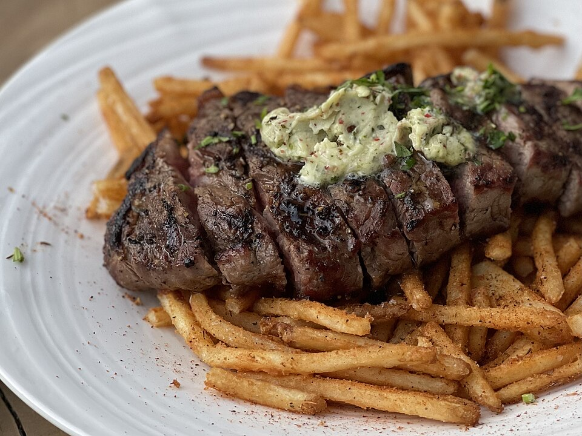 |
小酒馆国民菜：秘制酱汁版或胡椒酱版都值得试。 | Le Relais de l'Entrecôte (Saint-Germain)、Bistrot Paul Bert、Bouillon Pigalle、Bouillon Chartier Grands Boulevards |
| 焗洋葱汤 soupe à l'oignon gratinée |
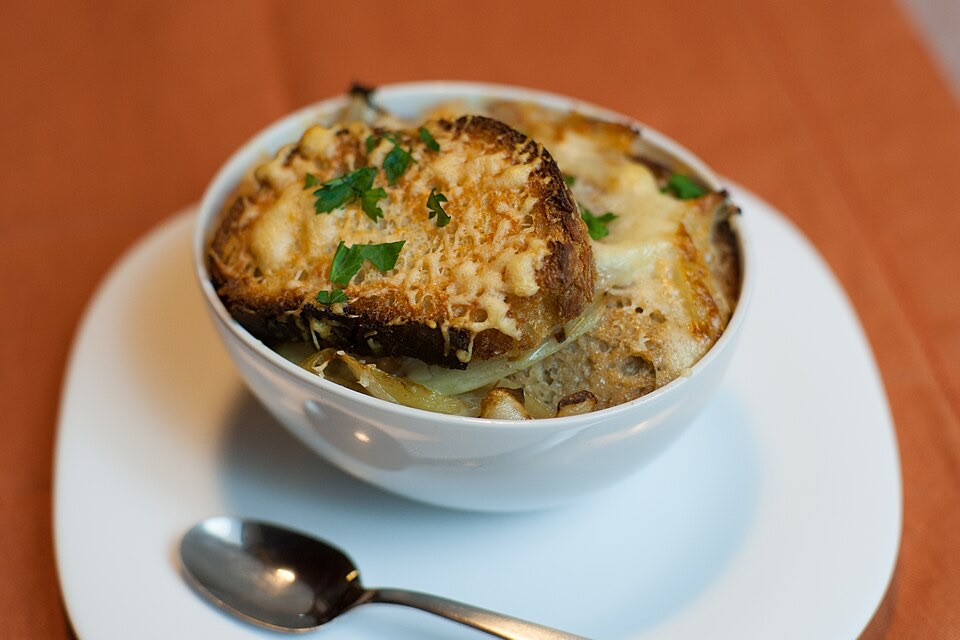 |
芝士焗面包盖在洋葱汤上，秋冬尤其合适；Bouillon Pigalle 只要 €3.90。 | Bouillon Pigalle、Le Grand Colbert |
| 勃艮第蜗牛 escargots |
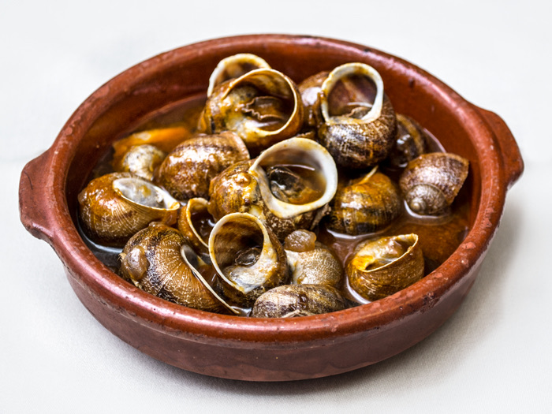 |
蒜香欧芹黄油焗蜗牛，平价老式食堂里便宜尝鲜，Allard 吃精致版。 | Bouillon Pigalle、Bouillon Chartier Grands Boulevards、Bouillon Julien、Le Grand Colbert、Allard |
| 油封鸭腿 confit de canard |
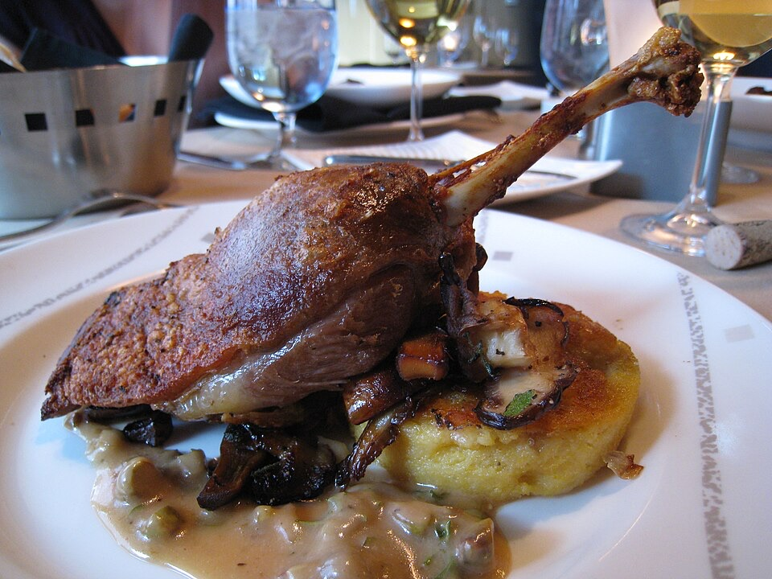 |
西南法经典，外皮酥、肉软烂；平价老式食堂菜单上约 €12.80，配薯条。 | Bouillon Pigalle、Bouillon Chartier Grands Boulevards |
| 红酒炖牛肉 bœuf bourguignon |
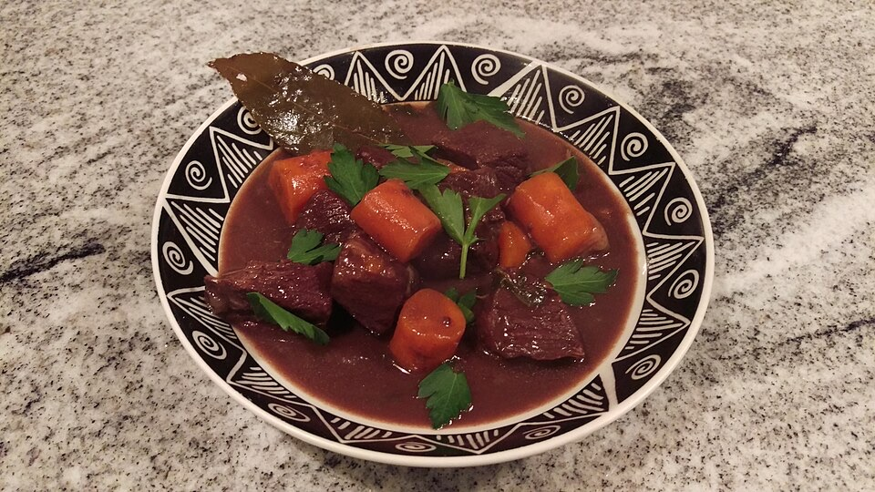 |
勃艮第家常名菜；Café des Musées 官网称获 Le Figaro 2018 最佳，Miznon 还有皮塔版。 | Café des Musées、Bouillon Pigalle、Bouillon Chartier Grands Boulevards、Miznon Marais |
| 生蚝（当季） huîtres |
- | 秋冬是生蚝季，9 月底至 11 月出行正好；Le Baron Rouge 9 月中至 4 月底周末供应，春夏出行则不宜。 | Le Baron Rouge、Le Grand Colbert |
| 法国奶酪 fromages |
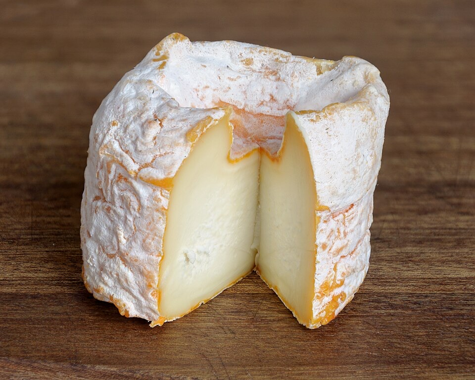 |
到“法国最佳手工艺人”（MOF）熟成师的店里买几块陈年孔泰奶酪、羊奶酪，带回酒店配面包和酒。 | Fromagerie Laurent Dubois (Maubert)、Barthélémy、Septime La Cave |
| 马卡龙 macarons |
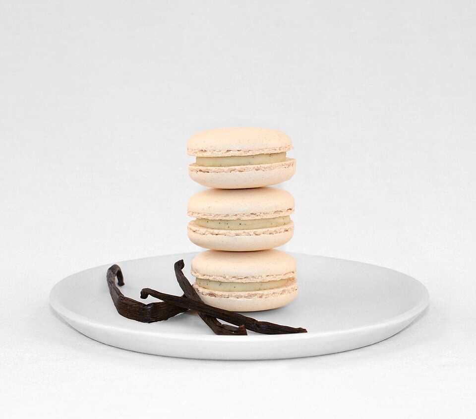 |
Pierre Hermé 口味创新，Ladurée 是经典老牌，可对比。 | Pierre Hermé Bonaparte、Ladurée Paris Royale |
| 巴黎布雷斯特泡芙 Paris-Brest |
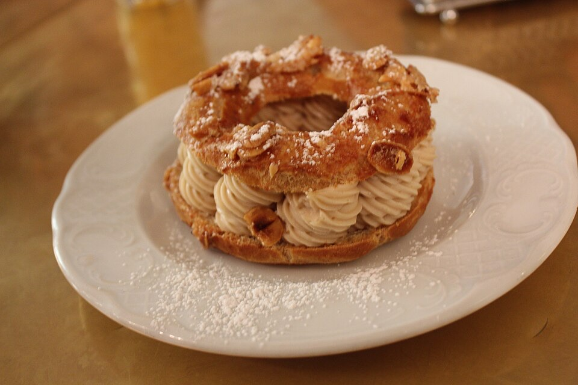 |
环形泡芙夹榛子帕林内奶油；本名单内仅 Le Grand Colbert 菜单明确列出（€14/15）。 | Le Grand Colbert |
| 千层酥 mille-feuille |
酥皮与香草奶油层层叠；Café de Flore（€15）、Le Train Bleu 焦糖千层、Le Grand Colbert 覆盆子千层。 | Café de Flore、Le Train Bleu、Le Grand Colbert | |
| 闪电泡芙 éclair |
Stohrer 的香草或巧克力闪电泡芙 €5.80，顺便吃朗姆酒巴巴。 | Stohrer、Carette Place des Vosges | |
| 热巧克力 chocolat chaud |
Angelina 浓稠的招牌热巧克力 L'Africain 最有名；左岸（Rive Gauche）的 Café de Flore（€10）和 Les Deux Magots 也以热巧克力著称。 | Angelina Rivoli、Café de Flore、Les Deux Magots | |
| 炸豆丸子皮塔 falafel |
玛黑区（Le Marais）犹太街区的街头名物，外带边走边吃。 | L'As du Fallafel、Miznon Marais | |
| 自然酒 vin nature |
巴黎新派小酒馆和酒窖的灵魂，按杯点最适合尝试。 | Septime La Cave、Parcelles、Le Comptoir du Relais | |
| 朗姆酒巴巴 baba au rhum |
- | Stohrer 官网称由其创始人发明（单个 €6.10）；平价老式食堂里 €6.90 左右也能吃到。 | Stohrer、Chez Georges、Bouillon Julien、Bouillon Chartier Grands Boulevards、Le Train Bleu |
| 单品 | 图片 | 为什么吃 | 去哪吃 |
|---|---|---|---|
| 鹰嘴豆煎饼 socca |
尼斯街头第一名：大铁盘现烤，边缘焦脆，趁热撒黑胡椒。 | Chez Pipo、Chez Thérésa、Lou Pilha Leva | |
| 洋葱挞 pissaladière |
焦糖洋葱 + 凤尾鱼 + 黑橄榄，尼斯版的「披萨」。 | Chez Pipo、Chez Thérésa | |
| 尼斯三明治 pan bagnat |
圆面包里夹尼斯沙拉的料，适合带去海边或当一日游的午餐。 | Chez Thérésa | |
| 尼斯沙拉 salade niçoise |
正宗做法是生蔬菜 + 金枪鱼或凤尾鱼 + 鸡蛋，尼斯老城（Vieux Nice）的小馆几乎都有。 | - | |
| 尼斯酿蔬菜 petits farcis |
西葫芦、番茄、洋葱塞肉馅烤，尼斯家常菜代表。 | Lou Pilha Leva、Chez Acchiardo | |
| 尼斯红酒炖牛肉 / 炖牛肉馄饨 daube / raviolis à la daube |
尼斯版红酒炖牛肉，常常包进馄饨里吃。 | Chez Acchiardo | |
| 蜜饯水果 fruits confits |
尼斯 1820 年老店的招牌，最好带的伴手礼。 | Maison Auer | |
| 蒜泥蛋黄酱拼盘 grand aïoli |
普罗旺斯传统：水煮鳕鱼和蔬菜蘸蒜味很足的蛋黄酱。 | Les Galinas – La table provençale | |
| 普罗旺斯炖菜 ratatouille |
普罗旺斯的家常味道，很多小馆当配菜。 | - | |
| 橄榄酱 tapenade |
黑橄榄 + 酸豆 + 凤尾鱼，市场上买一罐带走。 | - | |
| 艾克斯杏仁糖 calisson |
杏仁 + 糖渍甜瓜 + 糖霜，艾克斯（Aix-en-Provence）特产。 | Léonard Parli | |
| 牛轧糖 nougat |
普罗旺斯蜂蜜杏仁牛轧糖，市场上常见。 | - |
只列行程里要去的地方：开放时间、门票和预约方式；「排在哪天」链接到每日行程。票价里写「非欧盟」的就是这趟两个人要付的价格。
| 景点 | 图片 | 看点 | 建议时长 | 开放 / 闭馆 | 预约 / 票价 | 排在哪天 |
|---|---|---|---|---|---|---|
| 巴黎圣母院 Notre-Dame de Paris 必去 |
修复后重新开放的哥特式主教座堂，内部石材与玫瑰窗焕然一新；可另购票登塔俯瞰西岱岛（Île de la Cité）与塞纳河。提示：免费时段临近才放，10/7 起在官网 / App 看；周四开到22:00适合晚间参观。登塔在 https://www.tours-notre-dame-de-paris.fr/en/ 订票：424级台阶、通道最窄45cm、塔顶限停5分钟、无电梯无厕所。第三方转卖的“免费预约”无效。 | 大教堂45–60分钟；登塔另加约1小时 | 大教堂：周四7:50–22:00（官网常见问题）；其余日期据第三方汇总为周一至周五7:50–19:00、周六日8:15–19:30（未在官网直接核实）；闭门前30分钟停止入场。塔楼：4/1–9/30 9:00–23:00；10/1–3/31 9:00–17:30 闭馆：大教堂：未见固定闭馆日（未核实）。塔楼：1/1、5/1、12/25关闭，恶劣天气可能临时关闭 ⚠️ 已修复开放；塔楼参观已恢复（新参观路线），必须线上预约。 |
大教堂免费，可在官网/APP免费预约时段；名额在参观前几小时到 2–3 天陆续放出（各来源说法不一），不能提前很多天预约，不预约也可排队。塔楼：必须官网预约时段票，现场不售票 官网 大教堂免费；塔楼成人€16（2026，非欧盟游客同价；18岁以下及18–25岁欧盟公民免费） |
D2 10/10 周六 登塔（可选）：D4 10/12 一早 |
|
| 圣日耳曼德佩教堂 Saint-Germain-des-Prés 必去 |
左岸（Rive Gauche）文艺街区：巴黎最古老的教堂之一，周边书店、画廊、古董与香氛设计小店密集，Buly、Deyrolle、乐蓬马歇百货（Le Bon Marché）都在步行范围内。提示：教堂官网有修复工程专题，内殿彩绘值得细看；沿波拿巴街（Rue Bonaparte）、雅各布街（Rue Jacob）、塞纳街（Rue de Seine）逛古董与设计店。 | 半天 | 街区全天。教堂：周一、周日9:30–20:00；周二至周五7:30–20:00；周六8:30–20:00 闭馆：教堂无固定闭馆日（弥撒时参观受限，未核实） |
无需 免费（教堂） |
D4 10/12 周一 | |
| 皇家宫殿花园 Jardin du Palais-Royal 必去 |
回廊环绕的安静花园＋丹尼尔·布伦的黑白条纹柱装置艺术；拱廊里有Café Kitsuné、设计与古董小店，正对卡地亚当代艺术基金会（Fondation Cartier）新馆。提示：清晨或傍晚拍布伦柱（Colonnes de Buren）人少；可与薇薇安拱廊（Galerie Vivienne）、法国国家图书馆黎塞留馆（BnF Richelieu）、皮诺收藏馆（Bourse de Commerce）一线步行。 | 30–60分钟 | 4/1–9/30 8:00–22:30；10/1–3/31 8:00–20:30 闭馆：官网未列闭园日 |
无需 免费 |
D3 10/11 周日 | |
| 孚日广场 Place des Vosges 必去 |
贵族宅邸改建的博物馆、买手店和概念店最密集的街区；孚日广场（Place des Vosges）红砖拱廊对称优雅。提示：从叙利府邸（Hôtel de Sully）花园穿门进入孚日广场；可串联卡纳瓦雷博物馆（Musée Carnavalet，免费）、巴黎毕加索博物馆（Musée Picasso）、Merci、Dover Street Market、Fleux、Empreintes。本次核实的DSM、Merci、Fleux、L'Éclaireur、Buly周日营业，Empreintes周日周一休息。 | 半天到一天 | 广场全天（中央花园开放时间未核实） 闭馆：无（店铺各异） |
无需 免费 |
D2 10/10 周六 | |
| 卢浮宫 Musée du Louvre 必去 |
世界级藏品与宫殿建筑本身，贝聿铭玻璃金字塔；建议只挑2–3个展区精看。提示：订开馆首个时段或周三/周五晚场；高峰时持票者可走卡鲁塞尔（Carrousel）或狮子门（Porte des Lions）入口；部分展厅因工程或高温会临时关闭，出发前查官网展厅关闭表。阿波罗长廊（Galerie d'Apollon）2026/7/22 重开，但王冠珠宝不再展出；10/7–2027/1/25 有苏巴朗（Zurbarán）大展。 | 3–4小时 | 周一、周四、周六、周日9:00–18:00；周三、周五9:00–21:00；闭馆前1小时停止入场 闭馆：每周二；1/1、5/1、12/25（其他公众假日照常开放，逢周二除外） ⚠️ 2026/1/14起非欧洲经济区票价由€22涨至€32；2025/10/19发生王冠珠宝失窃案；2025/12–2026/1员工罢工多次闭馆；2026年6月热浪期间曾提前闭馆。 |
官网建议预约时段票（免费对象也建议预约）；人少时现场可买；出馆即视为离开，不可再入 官网 2026/1/14起：非欧洲经济区成人€32；欧洲经济区公民/居民€22；18岁以下与26岁以下欧洲经济区居民免费；每月第一个周五18:00后免费（7、8月除外） |
D3 10/11 周日 9:00（已订） | |
| 罗丹美术馆 Musée Rodin 必去 |
罗丹故居比隆府邸（Hôtel Biron）和雕塑花园，《思想者》《地狱之门》立在玫瑰花园里，是“有花园的博物馆”代表。提示：挑晴天去逛花园；禁止任何尺寸的行李箱和大包，只能带小背包。 | 1.5–2小时 | 周二至周日10:00–18:30（17:45最后入场）；12/24、12/31 17:30闭馆 闭馆：周一；1/1、5/1、12/25 |
无需提前预约（免费对象也无需），可官网购票 官网 成人€14；与奥赛博物馆（Musée d'Orsay）联票€25；10–3月每月第一个周日免费 |
D3 10/11 周日 | |
| 皮诺收藏馆 Bourse de Commerce 必去 |
安藤忠雄在19世纪圆顶交易所内置入清水混凝土圆筒，建筑本身就是展品；皮诺当代艺术收藏。提示：上顶层环廊俯瞰圆厅与穹顶壁画；与皇家宫殿（Palais-Royal）、E. Dehillerin、蒙托格伊街（Rue Montorgueil）步行串联。 | 1.5小时 | 周一、周三至周日11:00–19:00；官网当前注明周五无夜场 闭馆：每周二；5/1 ⚠️ 2026/8/26–10/5为换展期，为新展「记住我」（Remember Me）布展；10/7起恢复常规票价。 |
建议官网购票 官网 全价€15、18–26岁€10（10/7起恢复）；2026/8/26–10/5换展期特价€9 |
D2 10/10 周六（可选） | |
| 路易威登基金会 Fondation Louis Vuitton 必去 |
弗兰克·盖里设计的玻璃“帆船”，屋顶平台与水景非常出片；2026秋大展汇集梵高、高更、雷东等现代艺术名作。提示：大展「收藏家与创作者古斯塔夫·法耶（Gustave Fayet）：现代艺术经典」2026/10/9–2027/3/8；行程若在10/9前则无法参观。 | 2–3小时（含交通） | 重开后：周一、周三至周五12:00–19:00；周六、周日11:00–19:00 闭馆：每周二；目前闭馆，2026/10/9重新开放 ⚠️ 目前闭馆，2026/10/9重开。 |
仅限预约（paris.fr活动页） 官网 €0–18（2026–27展览） |
D4 10/12 周一 | |
| 乐蓬马歇百货 Le Bon Marché Rive Gauche 必去 |
巴黎最有策展感的百货（家居、设计与书店楼层），隔壁La Grande Épicerie是食品伴手礼天堂。提示：Buly在乐蓬马歇（Le Bon Marché）2楼有柜台；与Deyrolle（巴克街 / Rue du Bac）、圣日耳曼德佩（Saint-Germain-des-Prés）步行串联。 | 1.5–2小时 | 乐蓬马歇（Le Bon Marché）：周一至周六10:00–20:00，周日11:00–20:00（据Buly官网所列其乐蓬马歇柜台时间）；La Grande Épicerie营业时间未核实 闭馆：乐蓬马歇周日营业（见上）；La Grande Épicerie未核实 ⚠️ 两家官网均无法访问，营业时间请出发前复核。 |
无需 免费入内 |
D4 10/12 周一 | |
| Merci 必去 |
- | 巴黎概念店代表：多层家居、文具、亚麻织品与服装选品，附设La Civette与Used Book Café。提示：Used Book Café适合歇脚；另有Merci Richelieu分店。 | 1小时 | 周一至周三10:30–19:30；周四、周五10:30–20:00；周六10:00–20:00；周日10:00–19:30；La Civette 11:00–19:00 闭馆：无每周休息日 |
无需 免费入内 |
D2 10/10 周六 |
| 新桥 Pont Neuf 推荐 |
巴黎现存最古老的桥；桥下西岱岛（Île de la Cité）尖端的小公园贴近水面，是看塞纳河日落的经典位置。提示：傍晚来，Vedettes du Pont Neuf游船码头就在绿林好汉广场（1 Square du Vert-Galant）；从太子广场（Place Dauphine）穿过去更安静。 | 20–40分钟 | 桥全天通行；绿林好汉广场（Square du Vert-Galant）开放时间未核实 闭馆：未核实 |
无需 免费 |
D2 10/10 周六 | |
| 圣路易岛 Île Saint-Louis 推荐 |
17世纪整齐石砌住宅、河岸步道和小店，比西岱岛（Île de la Cité）安静，适合从圣母院（Notre-Dame）后面散步过桥。提示：沿奥尔良河岸（Quai d'Orléans）回望圣母院后殿；主街圣路易岛街（Rue Saint-Louis-en-l'Île）有冰淇淋与小店；可过叙利桥（Pont de Sully）接阿拉伯世界研究所（Institut du monde arabe）屋顶露台。 | 45–90分钟 | 街区全天（店铺各异） 闭馆：无（店铺营业时间各异，未核实） |
无需 免费 |
D2 10/10 周六 | |
| Shakespeare and Company 推荐 |
左岸（Rive Gauche）传奇英文书店，木书架迷宫与楼上阅读角很有氛围，隔壁有自家咖啡馆，正对圣母院（Notre-Dame）。提示：尽量开门后不久或工作日去，避开下午人潮；可与圣母院、圣路易岛（Île Saint-Louis）同线步行。 | 30–45分钟 | 未核实（官网无法访问） 闭馆：未核实 ⚠️ 官网无法访问，营业时间请出发前复核。 |
无需预约 免费入内 |
D2 10/10 周六 | |
| 薇薇安拱廊 Galerie Vivienne 推荐 |
巴黎最美的廊街之一：马赛克地砖、玻璃顶、旧书店、茶室与精品店，共56家商铺、长176米。提示：三个入口：小田野街（4 rue des Petits-Champs）、银行街（5–7 rue de la Banque）、薇薇安街（6 rue Vivienne）；隔街就是法国国家图书馆黎塞留馆（BnF Richelieu）。 | 20–40分钟 | 每天8:30–20:00（店铺时间各异） 闭馆：无（每天开放） |
无需 免费 |
D3 10/11 周日 | |
| 埃菲尔铁塔 Tour Eiffel 推荐 |
巴黎地标；登顶俯瞰全城，或从特罗卡德罗广场（Trocadéro）、塞纳河游船上欣赏更经典。提示：出发前60天开售当天就订登顶票（最抢手）；也可只上2层再去特罗卡德罗广场拍全景。 | 登顶2–3小时（含安检排队） | 开放时间未核实（官网无法访问）；官网信息：登顶最后一班上行22:30 闭馆：未核实 ⚠️ 2026/9/29起楼梯参观须提前预约。 |
强烈建议官网提前买时段票：电梯票（登顶、2层）线上提前60天开售；楼梯至2层票提前30天开售；楼梯+电梯登顶票提前30天开售（官网注明仅淡季）。2026/9/29起走楼梯参观也须预约 官网 2026成人（25岁以上）：电梯登顶€36.70；楼梯至2层+电梯登顶€28.00；电梯至2层€23.50；楼梯至2层€14.80（第三方资料，未在官网核实） |
D3 10/11 周日 | |
| 特罗卡德罗广场 Trocadéro 推荐 |
夏乐宫（Palais de Chaillot）平台正对埃菲尔铁塔（Tour Eiffel），是拍铁塔全景的最佳位置。提示：清晨人最少；沿特罗卡德罗花园（Jardins du Trocadéro）下行过耶拿桥（Pont d'Iéna）到铁塔。 | 20–30分钟 | 平台全天；特罗卡德罗花园（Jardins du Trocadéro）开放时间未核实 闭馆：无 |
无需 免费 |
D4 10/12 周一（生日前夜） | |
| 塞纳河游船 Bateaux-Mouches 推荐 |
约1小时游船串起卢浮宫（Louvre）、奥赛博物馆（Musée d'Orsay）、圣母院（Notre-Dame）与埃菲尔铁塔（Tour Eiffel）；日落前后登船可同时看黄昏与夜景。提示：巴黎日落：2026/9/25约19:45；10/15约19:03；10/25夏令时结束后10/31约17:34；11/15约17:12；2027/4/20约20:51；6/15约21:58。建议日落前30–45分钟登船。Vedettes du Pont Neuf从西岱岛（Île de la Cité）出发，离圣母院一带最近；Bateaux Parisiens从铁塔脚下出发。 | 约1小时（另留候船时间） | Bateaux-Mouches：4–10月每30分钟一班10:00–22:30（8/29–11/1末班22:00；7–8月周四至周六加开23:00）；11–3月每45分钟一班10:15–21:30，16:00后每30分钟。Bateaux Parisiens：2026/8/24–9/27周日至周四10:00–22:30、周五周六10:00–23:00约每20–30分钟一班，9/28之后时刻未核实。Vedettes du Pont Neuf：班次未核实 闭馆：未核实（天气或高水位可能停航） |
一般无需提前很久；官网线上购票常有折扣 官网 Bateaux-Mouches成人€20（官网）；Vedettes du Pont Neuf线上€15（常规€17）；Bateaux Parisiens价格未核实 |
D3 10/11 周日 | |
| 叙利府邸 Hôtel de Sully 推荐 |
17世纪府邸的庭院与花园免费开放，花园尽头的小门直通孚日广场（Place des Vosges）。提示：从圣安托万街（Rue Saint-Antoine）进入，穿过庭院和花园到孚日广场西南角。 | 15–20分钟 | 庭院与花园每天9:00–19:00；书店13:00–19:00（周一休） 闭馆：1/1、5/1、11/1、11/11、12/25 |
无需 免费 |
D2 10/10 周六 | |
| 巴黎毕加索博物馆 Musée Picasso Paris 推荐 |
毕加索大宗收藏，馆舍是玛黑区（Le Marais）的17世纪萨莱府邸（Hôtel Salé），建筑与展陈都很好看。提示：禁止行李箱和大容量包；与卡纳瓦雷博物馆（Musée Carnavalet）、Merci同一路线。 | 1.5小时 | 周二至周日9:30–18:00（17:15最后入场） 闭馆：周一；1/1、5/1、12/25 |
现场可买；预约时段可避开排队并优先入场 官网 成人€16；家庭票每位成人€12；每月第一个周日免费 |
D2 10/10 周六 | |
| 卡纳瓦雷博物馆 Musée Carnavalet 推荐 |
两座府邸与庭园里的巴黎城市史，老店招牌与整体搬迁的室内装饰很适合设计爱好者，常设展免费。提示：看穆夏设计的Fouquet珠宝店室内；庭园可小憩；离孚日广场（Place des Vosges）步行很近。 | 1–1.5小时 | 周二至周日10:00–18:00（售票17:15截止） 闭馆：周一；1/1、5/1、12/25 |
常设展免费、无需预约；临展收费 官网 常设展免费 |
D2 10/10 周六 | |
| Officine Universelle Buly 推荐 |
复古药房式香氛美妆店，木柜陈列与书法、雕刻、压印服务，高颜值伴手礼首选。提示：其他巴黎门店：黎塞留街（29 rue de Richelieu）、圣通日街（45 rue de Saintonge）、老圣殿街（19 rue Vieille du Temple），这三家均每天11:00–19:00；另有乐蓬马歇百货（Le Bon Marché）2楼、老佛爷百货（Galeries Lafayette）1楼柜台。 | 30分钟 | 周一至周日11:00–19:00 闭馆：无每周休息日 |
无需 免费入内 |
D4 10/12 周一 | |
| Dover Street Market Paris 推荐 |
- | 川久保玲的买手百货巴黎店，位于17世纪库朗热府邸（Hôtel de Coulanges），建筑与陈列装置都值得看，内有Rose Bakery咖啡馆。提示：在玛黑区（Le Marais）主街弗朗布尔乔亚街（Rue des Francs-Bourgeois），周日也营业。 | 45–60分钟 | 周一至周六11:00–19:00；周日12:00–19:00 闭馆：无每周休息日 ⚠️ 确认存在：2024/5/24开业（DSM全球第8家）。 |
无需 免费入内 |
D2 10/10 周六 |
| Fleux' 推荐 |
- | 玛黑区（Le Marais）连开数间门面的家居设计概念店，灯具、小家具、餐具与礼品选品丰富。提示：39、40、52号几间门店陈列不同品类，逐间逛。 | 45分钟 | 周一至周五10:45–20:30；周六10:30–20:45；周日11:00–20:30 闭馆：无每周休息日 |
无需 免费入内 |
D2 10/10 周六 |
| 红孩儿市场 Marché des Enfants Rouges 推荐 |
巴黎最古老的有顶市场（历史建筑），多为熟食摊，适合逛玛黑区（Le Marais）时吃午饭。提示：午餐时段排队，建议11:30前到；三个入口分别在布列塔尼街（rue de Bretagne）、夏洛街（rue Charlot）、鸟街（rue des Oiseaux）。 | 45–60分钟 | 未核实 闭馆：未核实 ⚠️ 未找到可访问的官方营业时间来源，出发前复核。 |
无需 免费入内 |
D2 10/10 周六 | |
| 凯旋门 Arc de Triomphe 可选 |
登顶平台可看12条放射大道与香榭丽舍（Champs-Élysées）轴线，夜景尤佳。提示：只能走香榭丽舍大道顶端或大军团大道（Avenue de la Grande-Armée）的地下通道（Passage du Souvenir）进入，勿横穿环岛；电梯维修中只能爬楼梯；日落后上去看夜景。 | 约1小时 | 4/1–9/30：周三至周一10:00–23:00，周二11:00–23:00；10/1–3/31：周三至周一10:00–22:30，周二11:00–22:30；闭馆前45分钟停止入场 闭馆：5/1、5/8、7/14、11/11（上午）关闭；12/24、12/31提前闭馆 ⚠️ 电梯维修中（至另行通知），登顶只能走楼梯；旺季周三票价较低。 |
个人非强制，可官网购票；团体须至少提前4周预约 官网 4/1–9/30成人€22（周三€16）；10/1–3/31 €16；18岁以下及18–25岁欧盟公民免费 |
D4 10/12 周一 | |
| Diptyque Saint-Germain 可选 |
- | Diptyque创始店至今仍在原址营业，品牌香型「34 boulevard Saint-Germain」即以此地址命名。提示：与Shakespeare and Company书店、圣路易岛（Île Saint-Louis）、阿拉伯世界研究所（Institut du monde arabe）步行串联。 | 20–30分钟 | 未核实 闭馆：未核实 |
无需 免费入内 |
D4 10/12 周一 |
| Maison Kitsuné / Café Kitsuné Palais-Royal 可选 |
- | 法日品牌的小狐狸服饰；皇家宫殿（Palais-Royal）拱廊里的Café Kitsuné是花园边喝咖啡的好地方。提示：官网门店列表另有Maison Kitsuné Tuileries店与Café Kitsuné Opéra；官网未列名为“Palais-Royal”的服饰店。 | 30分钟 | Café Kitsuné Palais Royal：每天8:30–19:00；Maison Kitsuné Richelieu旗舰店：周一至周六11:00–19:30 闭馆：Richelieu旗舰店周日休息；咖啡馆无休 |
无需 免费入内 |
D3 10/11 周日 |
| L'Éclaireur Sévigné 可选 |
- | 巴黎老牌前卫买手店，Sévigné店以装置艺术式空间陈列设计师服饰与家居。提示：离卡纳瓦雷博物馆（Musée Carnavalet）与孚日广场（Place des Vosges）都很近；另有1区埃罗尔德街（10 rue Hérold）、8区布瓦西-当格拉斯街（10 rue Boissy d'Anglas）两家门店（周日休）。 | 30分钟 | 周一至周六11:00–19:00；周日14:00–19:00 闭馆：无每周休息日 |
无需 免费入内 |
D2 10/10 周六 |
| 景点 | 图片 | 看点 | 建议时长 | 开放 / 闭馆 | 预约 / 票价 | 排在哪天 |
|---|---|---|---|---|---|---|
| 尼斯老城 Vieux Nice 必去 |
赭红与明黄外墙、巴洛克教堂和窄巷，是尼斯建筑与市井气息最浓的区域；集市、鹰嘴豆煎饼、冰淇淋都在这里，适合步行和拍照。提示：早上 9 点前或傍晚人少、光线好；重点看德鲁瓦特街（Rue Droite）、罗塞蒂广场（Place Rossetti）、拉斯卡里斯宫（Palais Lascaris）的巴洛克楼梯；周一萨莱雅市集（Cours Saleya）改为古董市集，没有花市和食物摊。 | 2–3 小时，可与萨莱雅市集（Cours Saleya）、城堡山（Colline du Château）串走 | 街区全天开放；拉斯卡里斯宫（Palais Lascaris）10:00–18:00；圣雷帕拉特大教堂（Cathédrale Sainte-Réparate）约 7:30–19:00，午间关闭，冬季约 17:00 关（二手来源） 闭馆：拉斯卡里斯宫周二及 1/1、复活节周日、5/1、12/25 ⚠️ 拉斯卡里斯宫与大教堂时间来自二手汇总，未在官网逐条核实 |
无需 街区免费；拉斯卡里斯宫（Palais Lascaris）€5；尼斯市立博物馆 4 日通票 €15 |
D5 10/13 周二 🎂 | |
| 萨莱雅市集 Cours Saleya 必去 |
尼斯最有生活感的露天集市：鲜花、普罗旺斯蔬果和特产、鹰嘴豆煎饼摊，两侧是彩色建筑和慈悲礼拜堂（Chapelle de la Miséricorde）。提示：周五、周六上午最适合，花市和蔬果摊都在；Chez Thérésa 的鹰嘴豆煎饼摊就在集市里；想看古董市集就周一来。 | 45–90 分钟 | 花市（周二至周日）：周二、周四、周五 6:00–17:30；周三、周六 6:30–18:30；周日 6:30–13:30。蔬果摊以上午为主（收摊时间未核实，建议 12:00 前到）。周一古董/旧货市集 7:00–18:00（节假日前夕例外） 闭馆：周一没有花市和蔬果市（改为古董市集） ⚠️ 花市与古董市时间来自尼斯蔚蓝海岸旅游局页面（搜索摘要）；蔬果市场具体时段未核实 |
无需 免费 |
D5 10/13 周二 🎂 | |
| 城堡山 Colline du Château 必去 |
俯瞰天使湾（Baie des Anges）、英国人漫步大道（Promenade des Anglais）与老城（Vieux Nice）红瓦屋顶的经典机位；山顶人工瀑布（Cascade）和观景台是尼斯最经典的明信片视角，东侧还能看港口。提示：上山坐海边一侧贝兰达塔（Tour Bellanda）附近的免费电梯（位置以现场指示为准），或走台阶约 15 分钟；瀑布上方观景台视野最好，瀑布不一定每天开；日落前 1 小时光线最佳；下山可从东侧走到尼斯港（Port Lympia）。 | 1–1.5 小时 | 公园（nice.fr 官网）：4/1–10/31 8:30–20:00；11/1–3/31 8:30–18:00。免费电梯：二手来源称夏季约 9:00–19:00、冬季约 9:00–18:00（官网未列出，未核实） 闭馆：无固定闭园日；电梯可能因技术原因临时停运 ⚠️ 公园时间来自 nice.fr 官网；电梯时间仅见二手来源 |
无需 免费（含电梯） |
D5 10/13 周二 🎂 | |
| 英国人漫步大道 Promenade des Anglais 必去 |
约 7 公里的天使湾（Baie des Anges）海滨步道，蓝色椅子、美好年代风格的酒店立面（如 Hôtel Negresco）；尼斯作为「里维埃拉冬季度假城市」列入世界遗产名录。提示：从老城（Vieux Nice）一端的美国滨海路（Quai des États-Unis）往西走到 Negresco 最有看头；傍晚看日落。石子海滩，想下水需带沙滩鞋。 | 1 小时（选一段步行）到半天（全程/骑行） | 全天开放 闭馆：无 ⚠️ 无需核实时间的开放空间 |
无需 免费 |
D5 10/13 周二 🎂 | |
| 马蒂斯美术馆 Musée Matisse 必去 |
马蒂斯晚年在尼斯生活创作，馆藏涵盖各时期作品；馆舍是 17 世纪热那亚风格红色别墅，周边有罗马遗址、橄榄树公园和西米耶修道院（Monastère de Cimiez，马蒂斯墓）。提示：周五、周六开放，周二别来；可与夏加尔美术馆（Musée Marc Chagall）同去（同在公交 5 路沿线）；西米耶修道院花园可顺路看。 | 1.5–2 小时（含周边公园） | 4/1–10/31 10:00–18:00；11/1–3/31 10:00–17:00；闭馆前 30 分钟停止售票 闭馆：每周二；1/1、复活节周日、5/1、12/25 ⚠️ 官网实用信息页已核实（2026-09） |
可在线购票，一般无需预约 官网 €12；尼斯市立博物馆 4 日通票 €15，含拉斯卡里斯宫（Palais Lascaris）等市立馆；18 岁以下、学生免费 |
D9 10/17 下雨时（可选） | |
| 夏加尔美术馆 Musée Marc Chagall 必去 |
专为夏加尔《圣经讯息》系列设计的博物馆，大尺幅油画配花园；礼堂里有夏加尔创作的《创世》彩色玻璃窗。提示：注意午休 13:00–14:30（至 2026-10-31）。官网曾公告：某一日（未标明日期）《雅歌》展厅全天关闭、礼堂（彩色玻璃所在）11:30–16:30 关闭，出发前看官网通知。当前展览：「创作中的夏加尔：特别借展」和「夏加尔：在诗意与灵性之间」。 | 1–1.5 小时 | 至 2026-10-31：10:00–18:00，13:00–14:30 午间闭馆；闭馆前 30 分钟停止售票；11 月起冬季时间未核实 闭馆：每周二；1/1、5/1、12/25 ⚠️ 官网实用信息页与法文首页已核实（2026-09）；11 月起冬季时间官网未写 |
一般无需预约 官网 无特展 €10（优惠 €8）；特展期间 €12（优惠 €10）；每月第一个周日免费 |
D9 10/17 下雨时（可选） | |
| 埃兹村 Èze 必去 |
中世纪石头鹰巢村，巷弄曲折；村顶古堡遗址上的异域花园（Jardin Exotique，多肉植物与雕塑）有 360° 海景，是蔚蓝海岸（Côte d'Azur）最经典的拍照点之一；尼采小径（Chemin de Nietzsche）从村子一路下到海边。提示：尽量 10 点前到，避开旅游大巴；尼采小径全长约 2.1 公里、落差约 400 米，台阶多、碎石易滑，需运动鞋，雨后慎走；建议「坐车上山、步行下山」到滨海埃兹（Èze-sur-Mer）火车站，再坐 TER 区域火车去摩纳哥（Monaco）或回尼斯。 | 村子 + 花园 2–2.5 小时；尼采小径（Chemin de Nietzsche）下山约 45 分钟–1 小时，上山约 1.5 小时 | 植物园（蔚蓝海岸旅游局数据库，2026）：1/1–3/31 9:00–18:30（同页注明 16:00 最后入场，疑有误）；4/1–9/30 9:00–19:30；10 月 9:00–18:30；11/1–12/24、12/26–31 9:00–16:30 闭馆：12/25（按时间表推断） ⚠️ 植物园时间来自蔚蓝海岸旅游局数据库（官网 403 无法抓取）；公交为 2026 年官方/准官方时刻表 |
可在线购票，一般无需预约 官网 门票约 €10、12 岁以下免费（二手来源）；导览 €15（蔚蓝海岸旅游局数据库） |
D7 10/15 周四 | |
| 滨海自由城 Villefranche-sur-Mer 推荐 |
彩色房屋环抱的深水海湾，保存完好：中世纪拱廊暗街（Rue Obscure）、16 世纪要塞（Citadelle）、科克托手绘的圣彼得礼拜堂（Chapelle Saint-Pierre）；从海边或下滨海公路（Basse Corniche）拍海湾都很出片。提示：火车站就在海边，出站即到海滩；礼拜堂周二闭馆、中午关门；可与费拉角（Saint-Jean-Cap-Ferrat）的罗斯柴尔德别墅（Villa Ephrussi）排同一天。 | 2–3 小时 | 小镇全天开放；圣彼得礼拜堂（Chapelle Saint-Pierre，科克托手绘）：春夏 10:00–12:00、15:00–19:00；秋冬 10:00–12:00、14:00–18:00 闭馆：礼拜堂每周二、12/25；每年约 11 月中至 12 月中闭馆 ⚠️ 礼拜堂时间来自旅游局/汇总页面，门票价格未核实 |
无需 小镇免费；圣彼得礼拜堂（Chapelle Saint-Pierre）约 €4（游客评价，未核实） |
D6 10/14 周三 | |
| 罗斯柴尔德别墅花园 Villa Ephrussi de Rothschild 推荐 |
美好年代风格的粉色宫殿式别墅，位于费拉角（Cap Ferrat）半岛脊线上，两侧看海；9 个主题花园（法式、西班牙、日式、玫瑰园等）与音乐喷泉，特别适合喜欢建筑和花园的人。提示：开门时进入人最少；喷泉表演时刻未核实；官网公交信息仍写 607 路（该线已于 2024 年并入 ZOU! 600 路），以公交 15 路为准。 | 2–2.5 小时 | 2026-02-02 至 2026-11-01：每天 10:00–18:00（7–8 月至 19:00）；冬季（参考 2025-11-03 至 2026-01-31）：工作日 10:00–16:30，周末及法国学校假期 10:00–18:00；最后入场为闭馆前 30 分钟 闭馆：2026-09-12（周六）特别闭馆；2026–27 冬季安排官网尚未写明（未核实） ⚠️ 官网时间与票价页已核实（2026-09） |
官网建议在线购票（非强制）；电子票需自行打印，不能免排队 官网 成人 €18；7–17 岁及学生 €12；7 岁以下免费；含多语语音导览（有中文）；与凯里洛斯别墅（Villa Kérylos）联票 €24（仅现场售，8 日内有效） |
D6 10/14 周三 | |
| 摩纳哥亲王宫 Palais Princier 推荐 |
格里马尔迪家族的宫殿，国事厅壁画与庭院；宫前广场（Place du Palais）每天 11:55 卫兵换岗，从摩纳哥老城（Le Rocher）还能俯瞰赫丘利港（Port Hercule）。提示：换岗提前 20–30 分钟到广场占位；10 月 16 日以后只能看外观和换岗；顺路看摩纳哥大教堂（Cathédrale de Monaco，格蕾丝·凯利墓）和圣马丁花园（Jardins Saint-Martin）海崖步道。 | 宫殿约 1 小时；摩纳哥老城（Le Rocher）整体 2–3 小时 | 2026 季：3/30–10/15。3–6 月、9–10 月 10:00–18:00（最后入场 17:15）；7–8 月 10:00–19:00（最后入场 18:15）。卫兵换岗每天 11:55，在宫前广场（Place du Palais） 闭馆：10/16 至次年 3 月底国事厅不开放（2027 年开放日期未公布） ⚠️ 2026 开放期与票价来自官方网站；换岗时间来自 Monaco Tribune / VisitMonaco |
官方 Tickeasy 在线售票；2026-09 查询时官网提示在线售票系统故障，可现场购票 官网 成人 €13；学生 €11；6–17 岁 €8；6 岁以下免费 |
D7 10/15 周四 | |
| 摩纳哥海洋博物馆 Musée océanographique 推荐 |
1910 年建于悬崖上的新巴洛克宫殿式建筑，内有水族馆和海洋科学收藏；顶楼露台看海景。雨天首选。提示：从赫丘利港（Port Hercule）海边仰拍建筑立面最壮观；与亲王宫（Palais Princier）同在摩纳哥老城（Le Rocher），可步行串联。 | 1.5–2 小时 | 1–3 月、10–12 月 10:00–18:00；4–6 月、9 月 10:00–19:00；7–8 月 9:30–20:00；最后入场为闭馆前 30 分钟 闭馆：12/25 及 F1 摩纳哥大奖赛周末 ⚠️ 官网实用信息页已核实（2026-09）；票价有 €20.50 与 €22.50 两个说法 |
可在线购票，无需预约 官网 官网实用信息页：成人 €20.50；学生、4–17 岁 €13；另有来源称成人 €22.50（可能为新价格），以购票页为准 |
D7 10/15 周四 | |
| 蒙特卡洛赌场 Casino de Monte-Carlo 推荐 |
由巴黎加尼叶歌剧院（Palais Garnier）的建筑师夏尔·加尼叶参与设计的美好年代地标，内部是金色厅堂；外面的赌场广场（Place du Casino）和花园是经典拍照点。提示：想看内部就上午去（可穿 T 恤、短裤、运动鞋，部分游戏厅可拍照）。游戏厅须年满 18 岁，出示欧盟身份证或有效护照原件，不接受复印件或电子证件。14:00 起禁止短裤、破洞牛仔裤、运动服、运动鞋、男士人字拖/凉鞋、背心和海滩装；19:00 后另禁 T 恤和卫衣。 | 参观约 45–60 分钟 | 文化参观（语音导览）每天 10:00–13:00，最后入场 12:15；游戏厅 14:00 起开放；前厅（Atrium）全天免费进入 闭馆：未见固定闭馆日（遇活动可能调整，未核实） ⚠️ 参观时间、票价、入场与着装规则均来自运营方 SBM 官方页面（2026-09） |
现场购票即可（官方页面未要求预约） 官网 上午参观：成人 €20；13–17 岁 €15；6–12 岁免费。游戏厅（14:00 起）入场 €20，含 €10 可用于老虎机、酒吧或 Le Salon Rose 餐厅 |
D7 10/15 周四 | |
| 昂蒂布老城 Vieil Antibes 可选 |
城墙老城临海，有沃邦修建的港口（大游艇多）和有顶棚的普罗旺斯市场（Marché Provençal），适合早上逛市场、中午看毕加索博物馆（Musée Picasso）。提示：周五、周六都有市场；市场只开上午，要早去。 | 半天 | 普罗旺斯市场（Marché Provençal）：9/1–5/31 周二至周日；6/1–8/31 每天；约 7:30–13:00（6–8 月至 13:45） 闭馆：9 月至 5 月的周一市场休息 ⚠️ 市场时间来自昂蒂布官方网站的搜索摘要，各来源开市时间有 6:00 与 7:30 两种说法 |
无需 免费 |
D8 10/16 周五上午 | |
| 昂蒂布毕加索博物馆 Musée Picasso Antibes 可选 |
1946 年毕加索在这座临海城堡里创作的作品，海景露台上有雕塑，建筑和视野都很好。提示：注意 13:00–14:00 午休；周一闭馆，但周五、周六都开。 | 1–1.5 小时 | 2026-01-01 至 06-14：周二至周日 10:00–13:00、14:00–18:00；06-15 至 09-15：周二至周日 10:00–18:00；9/16 以后推测恢复午休时段（未核实） 闭馆：每周一；1/1、5/1、11/1、12/25 ⚠️ 昂蒂布旅游局官方页面已核实（2026 年时刻表） |
可在线买电子票（非必须） 官网 全价 €12；优惠 €8；昂蒂布博物馆 7 日通票 €15；18 岁以下免费；11/1 后第一个周二起约两周全民免费 |
D8 10/16 周五上午 | |
| 圣保罗德旺斯 Saint-Paul-de-Vence 必去 |
城墙完整的中世纪山城，画廊林立，夏加尔长眠于此；La Colombe d'Or 餐厅挂满名家作品，搭配玛格基金会（Fondation Maeght）就是艺术主题半日游。提示：无车单程约 1 小时 10 分钟、需换乘，这趟留了一整天（D8）；原 400 路公交已停运，别按旧攻略找车。 | 一整天：村子、午餐、玛格基金会（Fondation Maeght），再加往返交通 | 村子全天开放 闭馆：无 ⚠️ 交通方式来自圣保罗德旺斯旅游局官网 |
无需 免费 |
D8 10/16 周五 | |
| 玛格基金会 Fondation Maeght 可选 |
建筑师塞尔特设计的现代建筑与雕塑花园，有米罗迷宫、贾科梅蒂庭院，还有夏加尔和布拉克的作品，建筑和艺术兼得。提示：2026-09 正常开放，Ellsworth Kelly 特展持续到 2026-11-15；换展期间是否闭馆未核实，出发前查官网。 | 1.5–2 小时 | 每天 10:00–18:00（7–8 月 10:00–19:00）；12/24、12/31 16:00 闭馆 闭馆：无固定闭馆日。2026-09-05 至 09-07 因峰会包场闭馆（已过）；未发现施工闭馆公告 ⚠️ 2026-09 官网显示正常开放（非施工闭馆） |
可在线购票，散客无需预约 官网 成人 €18；优惠 €14（16–18 岁、学生等）；16 岁以下免费 |
D8 10/16 周五 | |
| 芒通 Menton 可选 |
意式彩色老城沿山坡而上，在圣米歇尔大教堂（Basilique Saint-Michel）前的广场看海；海边的让·科克托博物馆（Musée Jean Cocteau，Séverin Wunderman 收藏）是现代建筑；每年 2 月有柠檬节。提示：适合第二次来或雨天备选；Mirazur 餐厅也在芒通（Menton）。 | 半天 | 让·科克托博物馆（Musée Jean Cocteau）：2026-07-04 至 11-16 周一、周三至周日 10:00–12:30、14:00–18:00 闭馆：让·科克托博物馆每周二；1/1、5/1、11/1、12/25 ⚠️ 让·科克托博物馆的时间来自搜索摘要，门票未核实 |
无需 官网 未核实 |
D6 10/14 傍晚 |
| 什么时候 | 事项 | 怎么做 |
|---|---|---|
| 现在 | 巴黎酒店 + 10/13 TGV | 往返机票（10/9 UA990；10/18 LH1069 + UA59）和尼斯酒店（Hotel 66 Nice，10/13–10/18）已订。还要订巴黎 3 晚（10/10–10/13）；10/13 的 TGV 已经开售，Prems 特价票 €29 起，越早越便宜。 |
| 现在 | 复核去程机票（UA990） | 让 ChatGPT 再核对一遍：10/9 美联航 UA990（2 人经济舱里程票）是不是现在的最优解。对比同一天和前后一天的其他航班、里程价和现金价、到达时间；有明显更好的选择再决定要不要改。 |
| 已订 | 卢浮宫 Louvre 门票（10/11 9:00） | 已订 10/11 周日 9:00，2 张（非欧盟 €32/人，实名，带护照）。想登圣母院塔楼（Tours de Notre-Dame）的话，在塔楼官网 tours-notre-dame-de-paris.fr 另买 10/12 周一 9:00–9:30 的票（€16，现场不卖）。 |
| 现在 | 🎂 两顿生日晚餐 | 巴黎 10/12 生日前夜：Les Ombres（OpenTable，备注生日）；想奢侈就查 Le Jules Verne（90 天订位窗口早已开放，日落时段最先订满）。尼斯 10/13 生日当天：Le Plongeoir（电话 +33 4 93 26 53 02 或官网，备注生日）；想吃星级就订 JAN 或 Flaveur。 |
| 现在 | La Colombe d'Or（10/16 午餐） | 电话 +33 4 93 32 80 02 或邮件 contact@la-colombe-dor.com；每年 10 月底关门，订位时确认 10/16 还营业。 |
| 9/21 凌晨 1:00（湾区） | Septime（可选） | 巴黎时间 9/21 10:00 放出 10/12 的位（提前 21 天），开放就抢。 |
| 10/1 左右 | La Merenda（10/15 晚餐） | 官网 SevenRooms 订位，提前 1–2 周；只收现金，记得换欧元。 |
| 10/1–10/9 | 其他餐厅 | Chez Janou（电话）、Bouillon Julien、La Mère Germaine（约 10/7）、Le Canon、Olive & Artichaut（10/9–10/13）；Bistrot d'Antoine 最晚 10/9 前电话订。 |
| 出发前 1–2 周 | 门票 | 路易威登基金会（Fondation Louis Vuitton，定时票 €18，订 10/12 15:00 左右）、皮诺收藏馆（Bourse de Commerce，€15，D2 想去再买）、罗斯柴尔德别墅（Villa Ephrussi de Rothschild）网上买；塞纳河游船选 Vedettes du Pont Neuf 的话要订日落定时票（常卖完），Bateaux-Mouches 当天任意班次；罗丹美术馆（Musée Rodin）不用订。 |
| 出发前 1–2 周（可选） | 格拉斯调香课（10/17 机动日） | 想周六去格拉斯（Grasse）的话，在 Galimard、Molinard 或 Fragonard 官网约 10/17 上午的调香课；没兴趣或想看天气再定，就不用管。 |
| 出发前 1 天 | 手机 / App / 现金 | eSIM 或国际漫游；装 Citymapper、Bonjour RATP、SNCF Connect；带点欧元现金。 |
| 10/7–10/10 | 圣母院 Notre-Dame 免费进场时段 | 圣母院（Notre-Dame）官网 / App 的免费时段临近才放（参观前几小时到 2–3 天），10/7 起每天看一眼，抢 10/10 16:30–17:30；抢不到就现场排队，大教堂本身不用买票。 |
| 10/9 出发前（72 小时） | Le Jules Verne 生日蛋糕（如果选它） | 前夜晚餐在 10/12，甜点插蜡烛的生日蛋糕至少提前 72 小时跟餐厅说；Madame Brasserie 加订庆祝服务（célébration）至少提前 48 小时。 |
| 10/11 起 → 10/17 | 回程值机 + 汉莎罢工 | 10/11 起留意汉莎有没有罢工预告（今年 3 月、4 月都因罢工取消过这班）。10/17 早上 7:40 起在 Lufthansa App 给 LH1069 值机、免费选座；10/17 12:55 起在美联航 App 给 UA59 值机、验证护照。只带登机箱的话两个都提前办好，法兰克福就不用出机场。 |
| 每天出门前 | 罢工 | 看 SNCF Connect 和 RATP 有没有罢工通知，尤其是 10/13 的 TGV 高铁和 D6–D9 的 TER 区域火车；10/10 晚上看一下卢浮宫（Louvre）官网有没有罢工闭馆通知。 |
| 身份 | 要做什么 | 注意 |
|---|---|---|
| 美国护照 | 免签（任意 180 天内最多 90 天）。到 CDG 入境时做 EES 出入境登记：录指纹和面部照片，免费，2026-04-10 起全面运行，取代护照盖章。 | 护照必须是 10 年内签发，有效期至少到离开申根区后 3 个月；第一次登记排队更久。 |
| ETIAS 旅行授权 | 截至 2026-09 还没启用，10 月这趟不需要。 | 以后去欧洲前看 ETIAS 官网 是否开放，只在官网申请。 |
| 中国护照（住在美国） | 已经有两年的申根签证，这趟不用再办。 | 入境时带好护照和签证；EES 录指纹、拍照照常要做。 |
| 场景 | 怎么走 | 价格（2026） |
|---|---|---|
| CDG → 巴黎 | 出租车一口价（按车算） | 右岸 Rive Droite €56 / 左岸 Rive Gauche €65 |
| RER B 线到巴黎北站（Gare du Nord）/ Châtelet 站 / Saint-Michel 站 | 机场票 €14/人 | |
| RoissyBus 机场大巴 | 2026-03-01 起停运 | |
| 巴黎市内 | 地铁 / RER 单程票（2 小时内可换乘）；公交 / 轻轨票；一日票 Navigo Jour | €2.55；€2.05；€12.30 |
| Navigo Easy 卡（不记名、不用照片，可充单程票、一日票、机场票，也有手机版） | 卡费 €2 | |
| 刷银行卡进站：地铁闸机基本还不支持（全网要到 2030 年） | 用 Navigo Easy 或手机票 | |
| 巴黎 → 尼斯 | TGV 高铁：巴黎里昂站（Gare de Lyon）→ 尼斯火车站（Nice-Ville）；飞机：CDG 或奥利机场（Orly）→ NCE | TGV €29 起；飞机 €50–150 |
| NCE → 尼斯 | 轻轨 2 号线 / 出租车 | AERO 机场往返票 €10；市区单程 €1.70；出租车到市中心一口价 €32 |
| 尼斯周边 | TER 区域火车到自由城（Villefranche-sur-Mer）、滨海埃兹（Èze-sur-Mer）、摩纳哥（Monaco）、昂蒂布（Antibes）、卡涅（Cagnes-sur-Mer）；ZOU! 600 路沿海公交；82 / 602 路公交上埃兹村（Èze）；655 路公交去圣保罗德旺斯（Saint-Paul-de-Vence） | TER 约 €2–7；600 路 €2.10；Pass Sud Azur Explore 3 天通票 €35 |
Trip Planner 的规则：根目录永远放当前行程，旧行程整份搬进 archive/<行程名>/，页面、图片、脚本一起归档，链接不失效。
| 行程 | 时间 | 状态 | 链接 |
|---|---|---|---|
| 2026 东京双人旅行（东京 / 箱根 / 镰仓 / 横滨） | 2026-07-02 → 07-12 |
已完成 · 已归档 | 打开东京行程页 |
本页图片全部来自 Wikimedia Commons 的自由协议图片，已下载到本地 assets/photos/。餐厅如果没有可用的自由图片，就用代表菜的示意图。点开图片后，下方也会显示作者与协议。
| 图片 | 作者 | 协议 | 来源 |
|---|---|---|---|
| 孚日广场 Place des Vosges | Des Racines et des Ailes | CC BY 3.0 | Wikimedia Commons |
| 巴黎毕加索博物馆 Musée Picasso Paris | LPLT | CC BY-SA 3.0 | Wikimedia Commons |
| Berthillon | David Monniaux | CC BY-SA 3.0 | Wikimedia Commons |
| 巴黎圣母院 Notre-Dame de Paris | Ali Sabbagh | CC0 | Wikimedia Commons |
| Shakespeare and Company | Shadowgate from Novara, ITALY | CC BY 2.0 | Wikimedia Commons |
| 绿林好汉广场 Square du Vert-Galant | Inocybe - Piero d'Houin | CC BY-SA 3.0 | Wikimedia Commons |
| 薇薇安拱廊 Galerie Vivienne | David Pendery | CC BY-SA 4.0 | Wikimedia Commons |
| 皮诺收藏馆 Bourse de Commerce | Chabe01 | CC BY-SA 4.0 | Wikimedia Commons |
| Higuma | Guilhem Vellut from Paris, France | CC BY 2.0 | Wikimedia Commons |
| 路易威登基金会 Fondation Louis Vuitton | Meme Ranch | CC0 | Wikimedia Commons |
| 凯旋门 Arc de Triomphe | ZeusUpsistos | CC BY-SA 4.0 | Wikimedia Commons |
| Bouillon Julien | Coyau | CC BY-SA 3.0 | Wikimedia Commons |
| 罗丹美术馆 Musée Rodin | Dalbera | CC BY 2.0 | Wikimedia Commons |
| 乐蓬马歇百货 Le Bon Marché Rive Gauche | DiscoA340 | CC BY-SA 4.0 | Wikimedia Commons |
| Officine Universelle Buly | BiaoWang3707 | CC BY-SA 4.0 | Wikimedia Commons |
| 塞纳河游船 Bateaux-Mouches | Jean-noël Lafargue | FAL | Wikimedia Commons |
| 埃菲尔铁塔 Tour Eiffel | Benh LIEU SONG | Public domain | Wikimedia Commons |
| 里昂火车站 Gare de Lyon | Tom Corser | CC BY-SA 3.0 | Wikimedia Commons |
| 萨莱雅市集 Cours Saleya | dalbera | CC BY 2.0 | Wikimedia Commons |
| 城堡山 Colline du Château | Florian Pépellin | CC BY-SA 4.0 | Wikimedia Commons |
| 英国人漫步大道 Promenade des Anglais | 3602kiva | CC0 | Wikimedia Commons |
| 埃兹村 Èze | Jean Pierre Lozi | CC BY-SA 3.0 | Wikimedia Commons |
| 尼采小径 Chemin de Nietzsche | Tangopaso | CC BY-SA 3.0 | Wikimedia Commons |
| 摩纳哥亲王宫 Palais Princier | Nikolai Karaneschev | CC BY 3.0 | Wikimedia Commons |
| 摩纳哥海洋博物馆 Musée océanographique | Berthold Werner | CC BY-SA 3.0 | Wikimedia Commons |
| 蒙特卡洛赌场 Casino de Monte-Carlo | Steve Hedin | CC BY-SA 4.0 | Wikimedia Commons |
| 滨海自由城 Villefranche-sur-Mer | Patrice Semeria | Public domain | Wikimedia Commons |
| 罗斯柴尔德别墅花园 Villa Ephrussi de Rothschild | Berthold Werner | CC BY-SA 3.0 | Wikimedia Commons |
| 昂蒂布毕加索博物馆 Musée Picasso Antibes | Frans-Banja Mulder | CC BY 3.0 | Wikimedia Commons |
| 昂蒂布老城 Vieil Antibes | Gilbert Bochenek | CC BY 3.0 | Wikimedia Commons |
| 圣保罗德旺斯 Saint-Paul-de-Vence | Dennis G. Jarvis | CC BY-SA 2.0 | Wikimedia Commons |
| Hôtel du Louvre, in The Unbound Collection by Hyatt | Britchi Mirela | CC BY-SA 3.0 | Wikimedia Commons |
| Le Pavillon de la Reine & Spa | Mbzt | CC BY-SA 3.0 | Wikimedia Commons |
| 红酒炖牛肉 bœuf bourguignon | Slayschips | CC BY-SA 4.0 | Wikimedia Commons |
| 荞麦咸可丽饼 galette | Arnaud 25 | CC BY-SA 4.0 | Wikimedia Commons |
| 可颂 croissant | Petr Kratochvil | CC0 | Wikimedia Commons |
| 火腿黄油三明治 jambon-beurre | Boulanger: Nat / Photographer: Nat | CC BY-SA 4.0 | Wikimedia Commons |
| 热巧克力 chocolat chaud | Anusha Shirly | CC BY-SA 4.0 | Wikimedia Commons |
| 牛排薯条 steak frites | Missvain | CC BY 4.0 | Wikimedia Commons |
| 马卡龙 macaron | Michelle Naherny | CC BY-SA 4.0 | Wikimedia Commons |
| 法国奶酪 fromage | Myrabella | CC BY-SA 4.0 | Wikimedia Commons |
| 自然酒 vin nature | Suavemarimagno | CC BY-SA 4.0 | Wikimedia Commons |
| 鹰嘴豆煎饼 socca | Myrabella | CC BY-SA 3.0 | Wikimedia Commons |
| 艾克斯杏仁糖 calisson | Mathsci | CC BY-SA 3.0 | Wikimedia Commons |
| 巧克力面包 pain au chocolat | Luc Viatour | CC BY-SA 3.0 | Wikimedia Commons |
| 法棍 baguette | Nick Thweatt | CC BY-SA 3.0 | Wikimedia Commons |
| 洋葱汤 soupe à l'oignon | Ludovic Péron | CC BY-SA 3.0 | Wikimedia Commons |
| 法式焗蜗牛 escargots | Restaurante Granero | Public domain | Wikimedia Commons |
| 油封鸭 confit de canard | Mack Male from Edmonton, AB, Canada | CC BY-SA 2.0 | Wikimedia Commons |
| 巴黎布雷斯特 Paris-Brest | Deror_avi | CC BY-SA 4.0 | Wikimedia Commons |
| 拿破仑千层酥 mille-feuille | Zantastik | CC BY-SA 3.0 | Wikimedia Commons |
| 闪电泡芙 éclair | Willis Lam | CC BY-SA 2.0 | Wikimedia Commons |
| 炸豆丸子 falafel | Popo le Chien | CC BY-SA 3.0 | Wikimedia Commons |
| 洋葱挞 pissaladière | Cdg83 | CC BY-SA 4.0 | Wikimedia Commons |
| 尼斯三明治 pan bagnat | Arnaud 25 | CC BY-SA 4.0 | Wikimedia Commons |
| 尼斯沙拉 salade niçoise | Wusel007 | CC BY-SA 3.0 | Wikimedia Commons |
| 尼斯酿蔬菜 petits farcis | Tangopaso | Public domain | Wikimedia Commons |
| 普罗旺斯炖牛肉 daube | Véronique PAGNIER | CC BY-SA 3.0 | Wikimedia Commons |
| 蜜饯水果 fruits confits | Hopefully acceptable username | Public domain | Wikimedia Commons |
| 蒜泥蛋黄酱拼盘 grand aïoli | Marianne Casamance | CC BY-SA 4.0 | Wikimedia Commons |
| 普罗旺斯炖菜 ratatouille | Jack145945 | CC0 | Wikimedia Commons |
| 橄榄酱 tapenade | Marc Giacone | Public domain | Wikimedia Commons |
| 牛轧糖 nougat | CEphoto, Uwe Aranas | CC BY-SA 3.0 | Wikimedia Commons |
| 圣日耳曼德佩教堂 Saint-Germain-des-Prés | DXR | CC BY-SA 3.0 | Wikimedia Commons |
| 皇家宫殿花园 Jardin du Palais-Royal | Marie-Lan Nguyen | Public domain | Wikimedia Commons |
| 卢浮宫 Musée du Louvre | Benh LIEU SONG (Flickr) | CC BY-SA 3.0 | Wikimedia Commons |
| 新桥 Pont Neuf | Rmrfstar | CC BY-SA 3.0 | Wikimedia Commons |
| 圣路易岛 Île Saint-Louis | Jean-Pierre Dalbéra | CC BY 2.0 | Wikimedia Commons |
| 特罗卡德罗广场 Trocadéro | Yortw from Auckland, New Zealand | CC BY 2.0 | Wikimedia Commons |
| 叙利府邸 Hôtel de Sully | Mbzt | CC BY-SA 3.0 | Wikimedia Commons |
| 卡纳瓦雷博物馆 Musée Carnavalet | Miguel Hermoso Cuesta | CC BY-SA 4.0 | Wikimedia Commons |
| 红孩儿市场 Marché des Enfants Rouges | Connie Ma from Chicago, United States of America | CC BY-SA 2.0 | Wikimedia Commons |
| 尼斯老城 Vieux Nice | Rundvald | Public domain | Wikimedia Commons |
| 马蒂斯美术馆 Musée Matisse | Tubantia | CC BY-SA 3.0 | Wikimedia Commons |
| 夏加尔美术馆 Musée Marc Chagall | Europe22 | CC BY-SA 3.0 | Wikimedia Commons |
| 玛格基金会 Fondation Maeght | Generalitat de Catalunya, Departament de la Presidència | Attribution | Wikimedia Commons |
| 芒通 Menton | Le poulpe ambidextre | CC BY-SA 4.0 | Wikimedia Commons |
{kind=link}
{kind=link}
{kind=link}
{kind=link}
{kind=link}
{kind=link}
{kind=link}
_-_2021-06-05_-_1.jpg){kind=link}
{kind=link}
{kind=link}
{kind=link}
_01.jpg){kind=link}
{kind=link}
{kind=link}
{kind=link}
{kind=link}
.jpg){kind=link}
{kind=link}
{kind=link}
.JPG){kind=link}
{kind=link}
.jpeg){kind=link}
{kind=link}
.jpg){kind=link}
{kind=link}
{kind=link}
{kind=link}
{kind=link}
{kind=link}
{kind=link}
.jpg){kind=link}
.jpg){kind=link}
{kind=link}
{kind=link}
{kind=link}
{kind=link}
{kind=link}
{kind=link}
{kind=link}
{kind=link}
{kind=link}
{kind=link}
{kind=link}
{kind=link}
{kind=link}
{kind=link}
{kind=link}
{kind=link}
.jpg){kind=link}
{kind=link}
{kind=link}
.jpg){kind=link}
{kind=link}
{kind=link}
{kind=link}
{kind=link}
{kind=link}
{kind=link}
{kind=link}
{kind=link}
{kind=link}
{kind=link}
{kind=link}
{kind=link}
{kind=link}
{kind=link}
{kind=link}
{kind=link}
{kind=link}
{kind=link}
{kind=link}
{kind=link}
{kind=link}
{kind=link}
{kind=link}
_(cropped).jpg){kind=link}
{kind=link}